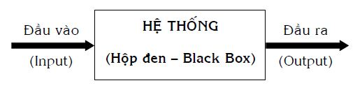

Chương 7 Điều khiển học: Điều khiển hành động và thế giới bên trong con người sáng tạo
7.1 Mở đầu
Chương 5: Từ nhu cầu đến hành động và ngược lại trình bày những yếu tố tương đối độc lập, cần lưu ý nhất, như nhu cầu, xúc cảm, các thói quen tự nguyện, tư duy thuộc thế giới bên trong và hành động của mỗi cá nhân, cùng các mối liên kết giữa chúng.
Chương 6: Tư duy sáng tạo: Nhìn theo góc độ thông tin – tâm lý tập trung chi tiết hóa quá trình suy nghĩ giải quyết vấn đề và ra quyết định của cá nhân. Các hiện tượng thông tin – tâm lý đóng vai trò chủ đạo trong tư duy sáng tạo được trình bày cùng với các lời khuyên về cách sử dụng chúng sao cho có hiệu quả.
Không ít người hiện nay để cho suy nghĩ nói riêng, các hoạt động của thế giới bên trong con nguời mình nói chung, diễn ra một cách tự nhiên và không để ý đến chúng. Do vậy, nhiều phép thử sai như là kết quả của các hành động cá nhân đã không được những người đó tìm hiểu, giải thích theo quan hệ nguyên nhân–kết quả một cách khoa học. Những kiến thức của Chương 5 và 6 giúp cá nhân không chỉ có ý thức một cách tương đối đầy đủ về các hoạt động thuộc thế giới bên trong mà còn giúp cá nhân “lắng nghe” và “suy nghĩ” về chúng, tức là, về chính bản thân mình. Điều này có nghĩa, cá nhân cần dành thời gian, công sức tự hỏi, tự quan sát, tự theo dõi, tự trả lời và tự rút kinh nghiệm để phát huy các mặt mạnh, hạn chế các mặt yếu của các hiện tượng thuộc thế giới bên trong con người.
Chương 7 này có mục đích phát triển tiếp những gì đã trình bày, theo hướng thảo luận nhằm trả lời câu hỏi: “Cần làm những gì và làm như thế nào để có thể điều khiển được hành động và thế giới bên trong của con người sáng tạo?”. Ở đây, người viết không có tham vọng trả lời trọn vẹn câu hỏi nói trên vì đấy là công việc phức tạp và của rất nhiều người. Do vậy, bạn đọc nên quan niệm Chương 7 này giống như sự cung cấp các thông tin, chia sẻ các kiến thức để chúng ta còn quay trở lại thảo luận tiếp trong tương lai, khi có dịp thuận tiện.
Đi vào cụ thể, Chương 7 sẽ trình bày một số ý tưởng cơ bản chung của một bộ môn khoa học, gọi là điều khiển học. Có một loạt từ đồng nghĩa hoặc gần nghĩa với “điều khiển” như quản lý, quản trị, điều hành, lãnh đạo, dẫn dắt, điều chỉnh, lái, lèo lái, kiểm soát… Trừ những trường hợp cần nhấn mạnh, nói chung, người viết sẽ dùng từ “điều khiển”.
Tiếp theo, Chương 7 sẽ trình bày mối quan hệ, tác động qua lại của cá nhân và môi trường (hiểu theo nghĩa rộng nhất), có tính đến những kế thừa lịch sử phát triển tự nhiên, xã hội. Để đối phó với những thách thức đến từ môi trường, con người hiện đại có nhu cầu thay đổi thế giới bên trong của chính mình, hiểu theo nghĩa, phải chủ động điều khiển các hoạt động của thế giới bên trong, một mặt, cho phù hợp với các thay đổi môi trường. Mặt khác, điều khiển các hoạt động của thế giới bên trong để điều khiển quá trình suy nghĩ giải quyết vấn đề và ra quyết định, tạo ra các hành động biến đổi môi trường, phù hợp với các quy luật phát triển khách quan.
Con đường tiến tới điều khiển thế giới bên trong của cá nhân là con đường dài dằng dặc, còn chưa được khai phá đầy đủ, lại càng chưa được xây dựng hoàn chỉnh, nhưng người viết cho rằng, đấy là con đường tất yếu phải thực hiện. Cũng vì tính tất yếu mà trước hết, những nhà khoa học quan tâm cần tập trung các nỗ lực nghiên cứu thế giới bên trong của con người, cũng như các quy luật phát triển khách quan ngoài con người. Trên cơ sở các kết quả thu được, môi trường thuận lợi cho việc điều khiển thế giới bên trong sẽ được tạo ra, các phương pháp rèn luyện khả năng tự điều khiển thế giới bên trong của con người sẽ được xây dựng và phổ biến rộng rãi. Trong ý nghĩa như vậy, trong phần cuối Chương 7, người viết cố gắng trình bày kết hợp những gì đang có với những gì có thể có hướng tới mục tiêu mỗi cá nhân biết làm chủ bản thân mình.
7.2 Điều khiển học: Một số ý tưởng cơ bản chung
- Tên gọi “Điều khiển học” (Cybernetics – tiếng Anh; Кибернетика – tiếng Nga) có xuất xứ từ tiếng Hy Lạp cổ “χυβερνητιχη”, có nghĩa là tay lái tàu thủy. Từ này cũng thường được Platon (428/427 – 348/347 trước công nguyên) sử dụng với nghĩa: Nghệ thuật lái tàu và nghĩa bóng: Biết cách điều khiển mọi người.
Năm 1834, A. Ampère (1775 – 1836) hoàn thành “Sách đại cương về triết học của các khoa học”. Trong đó, ông đã cố gắng sắp xếp tất cả các kiến thức nhân loại thành một hệ thống cân đối. Mục số 83, ông dành cho khoa học giả định, nghiên cứu các phương pháp điều khiển quốc gia và đặt tên là điều khiển học. Ampère còn làm thơ bằng tiếng Latinh mô tả phương châm của từng khoa học. Ứng với điều khiển học, ông viết: “… et secura cives ut pace fruantur” – “… và bảo đảm các công dân được hưởng thái bình”.
Năm 1868, J. Maxwell đăng một bài báo quan trọng về quan hệ phản hồi và gọi bộ phận điều khiển là “governor” có gốc là “gubernator” – biến thể Latinh của từ Hy Lạp “χυβερνητιχη”.
Sau đó một thời gian dài, thuật ngữ “điều khiển học” bị rơi vào quên lãng. Năm 1948, N. Wiener (1894 – 1964) công bố quyển sách với tên gọi khẳng định rõ ràng “Điều khiển học” (Cybernetics), tạo được sự quan tâm rộng rãi của nhiều nhà khoa học. Tuy nhiều quy luật được Wiener trình bày trong sách, như là cơ sở của điều khiển học, đã được phát hiện khá lâu trước đó, năm 1948 được coi là năm đặt tên chính thức và N. Wiener – là người sáng lập điều khiển học. Về điều này, có những nhà nghiên cứu cho rằng, Wiener cũng như Shannon và Einstein đạt được vinh dự là những người đến đích trong cuộc chạy tiếp sức của nhiều nhà khoa học.
Nói một cách tổng quát, điều khiển học là khoa học nghiên cứu các thuộc tính, nguyên tắc chung của các quá trình và hệ thống điều khiển trong các thiết bị kỹ thuật, các cơ thể sống, các tổ chức của con người… Các lý thuyết nền tảng của điều khiển học là lý thuyết thông tin, lý thuyết hệ thống, lý thuyết thuật toán (Algorithm) và lý thuyết máy tự động. Các công cụ toán học sử dụng trong điều khiển học được rút ra từ lý thuyết xác suất, lý thuyết hàm số, lôgích toán và nhiều phần của toán học hiện đại. Dưới đây, người viết chỉ trình bày một số ý tưởng cơ bản chung của điều khiển học, mà không đi vào các chi tiết toán học và kỹ thuật.
- Chúng ta cùng thử quan sát một người lái xe gắn máy đi trên con đường AB, có những đoạn thẳng, cong, những ngã rẽ và những xe cộ khác cùng lưu thông trên đường. Dựa trên ví dụ cụ thể này, chúng ta sẽ đi đến những khái niệm, ý tưởng khái quát chung, dùng trong điều khiển học.
Người lái là hệ thống điều khiển, xe gắn máy là hệ thống bị điều khiển còn những cái khác gọi chung là hệ thống môi trường. Khái niệm “hệ thống” và những ý liên quan thuộc lý thuyết hệ thống sẽ được trình bày chi tiết hơn trong quyển ba “Tư duy lôgích, biện chứng và hệ thống” của bộ sách “Sáng tạo và đổi mới”.
Trong trường hợp tổng quát, mô hình đơn giản về điều khiển được biểu diễn trên Hình 68.
Hình 68: Mô hình đơn giản về điều khiển
Điều khiển là quá trình đưa hệ bị điều khiển từ trạng thái này sang trạng thái khác nhờ sự tác động mang tính định hướng của hệ điều khiển. Điều khiển tối ưu là đưa hệ bị điều khiển sang trạng thái khác với chi phí thời gian, lao động, vật chất, năng lượng và thông tin ít nhất.
Bất kỳ hệ thống nào đều có (các) chức năng là (các) tính chất được sử dụng trên thực tế, thể hiện thành câu trả lời cụ thể cho câu hỏi: “Hệ cho trước trong hoàn cảnh cho trước dùng để làm gì?” Trong ví dụ trên, trả lời câu hỏi vừa nêu, chúng ta có các câu trả lời với từng hệ thống: Chiếc xe gắn máy có chức năng chở người lái và vật dụng của người đó đi từ A đến B; người lái có chức năng điều khiển chiếc xe gắn máy, hiểu theo nghĩa, tạo ra các tác động để chiếc xe gắn máy thực hiện chức năng của nó nhằm đạt được mục đích điều khiển (ví dụ, đến B đúng giờ một cách an toàn, tin cậy); con đường AB có chức năng tương tác với các bánh xe lăn trên mặt đường để đạt được các thông số kỹ thuật cần thiết …
Hiệu quả hoạt động chức năng của hệ thống là hàm số của nhiều loại biến số khác nhau. Hệ càng phức tạp, số loại biến số càng nhiều. Nói cách khác, hiệu quả hoạt động của hệ thống phụ thuộc vào sự đa dạng của các biến số. Do vậy, công việc điều khiển cần tính đến và hướng tới sự đa dạng đó, sao cho các biến số thay đổi tương hợp với nhau một cách đầy đủ, tránh chỉ tập trung thay đổi một số biến số nhất định. Ví dụ, hộp số xe đa dạng từ 1 đến 4, vậy mà bạn chỉ sử dụng số 1, chắc chắn hiệu quả hoạt động của xe sẽ không cao, chưa kể, có khi phá vỡ hệ thống.
Theo W. Ashby, chỉ có đa dạng mới có thể khắc phục (điều khiển) được đa dạng. Điều này có nghĩa, để có sự điều khiển tốt, hệ điều khiển phải có mức độ đa dạng bằng hoặc cao hơn mức độ đa dạng của hệ bị điều khiển. A. Maslow nhận xét một cách rất triết lý và chí lý rằng: “Khi công cụ duy nhất bạn có là cái búa, bạn có khuynh hướng xem mọi vật như là cái đinh”. Mọi vật xung quanh chúng ta rất đa dạng, nhưng nếu bản thân chúng ta là đơn điệu, chúng ta không chỉ không thấy sự đa dạng mà còn trở nên duy ý chí: Quy mọi cái đa dạng phải tuân theo sự đơn điệu của mình. Do vậy, nhiều khi trả giá đắt mà không biết. Bạn thử tưởng tượng, nhà lãnh đạo hoặc quản lý trong tay chỉ có công cụ điều khiển duy nhất là búa và xem tất cả mọi thứ khác là đinh. Người đó, không nghi ngờ gì nữa, chỉ có một cách điều khiển duy nhất là dùng búa đóng lên tất cả mọi thứ khác. Do vậy, thay vì điều khiển theo đúng nghĩa, người đó trở thành kẻ phá hoại lớn.
Từ đây còn có thể suy ra, trong một tập hợp các hệ thống, hệ thống nào có sự đa dạng cao nhất sẽ có khả năng điều khiển (kiểm soát) các hệ thống khác. Trong ý nghĩa này, phải chăng bộ óc của con người với cấu trúc hệ thống đặc biệt, chứa sự đa dạng lớn gấp nhiều lần “số vũ trụ” Eddington (theo Eddington, tổng số proton và electron có trong vũ trụ bằng ), trên thực tế, đã trở thành hệ thống điều khiển quá trình tiến hóa, phát triển trên Trái Đất hiện nay. Cũng không phải ngẫu nhiên, do sự phức tạp và mức độ đa dạng cao, bộ não còn được nhiều nhà nghiên cứu xem là “vũ trụ thứ hai”, chứ không chỉ là “thế giới bên trong” của con người.
Ngoài ra, khái niệm hệ điều khiển hoặc hệ bị điều khiển còn mang ý nghĩa tương đối, hiểu theo nghĩa, đối với cùng một hệ thống, trong mối quan hệ này, nó là hệ điều khiển. Trong mối quan hệ khác, nó lại là hệ bị điều khiển. Ví dụ, người lái trong mối quan hệ với xe gắn máy là hệ điều khiển, nhưng trong mối quan hệ với thủ trưởng của anh ta, lại là hệ bị điều khiển. Bất kỳ hệ thống nào thuộc loại này đều đứng giữa hai yêu cầu phải tăng tính đa dạng của mình. Trong tư cách là hệ điều khiển, để điều khiển tốt hệ bị điều khiển, nó phải tăng tính đa dạng vì chỉ đa dạng mới điều khiển được đa dạng. Trong tư cách là hệ bị điều khiển, để đáp ứng hoặc đối phó với các mục đích điều khiển mới (đa dạng hơn), nó cũng phải tăng tính đa dạng, nếu không nó có thể bị loại ra khỏi cuộc chơi. Từ đây, người ta chỉ ra khuynh hướng mang tính khái quát: Bất kỳ hệ thống nào muốn thỏa mãn nhu cầu tồn tại, tiến hóa, phát triển một cách đầy đủ, liên tục, ổn định và bền vững, hệ thống đó phải luôn tăng mức độ đa dạng. “Chân lý luôn luôn là cụ thể”, do vậy, tăng những đa dạng gì, như thế nào, bao nhiêu, trong thời gian bao lâu… phụ thuộc vào hệ thống cụ thể, điều kiện cụ thể…, không có đơn thuốc chung cho mọi hệ thống.
Khi hoạt động thực hiện chức năng, hệ thống có thể trải qua nhiều trạng thái, xác định bởi tập hợp các biến số mô tả hệ thống. Mỗi biến số có thể thay đổi trong một khoảng giá trị hữu hạn nhất định. Tổ hợp các giá trị cụ thể của các biến số, xác định trạng thái cụ thể của hệ thống và tập hợp các trạng thái cụ thể, xác định không gian (hoặc khả năng) hoạt động của hệ thống. Nếu không có cải tiến gì, bạn không thể bắt hệ thống làm việc vượt quá khả năng hoạt động của nó. Liên quan đến điều khiển, điều này nói lên rằng, quá trình điều khiển chỉ xảy ra, khi sự điều khiển hệ bị điều khiển được thực hiện tuân theo các quy luật khách quan. Ví dụ, xe gắn máy của bạn chỉ có thể đạt tốc độ cao nhất là 90 km/giờ, bạn không thể duy ý chí để điều khiển nó đạt 120 km/giờ mà mọi việc vẫn tốt đẹp. Như vậy, điều khiển không có nghĩa là áp đặt, ép buộc, đàn áp hệ bị điều khiển để đạt các mục đích chủ quan của hệ điều khiển. Đấy không phải là điều khiển mà là phá hoại. Nói cách khác, mục đích điều khiển phải mang tính khả thi, hiểu theo nghĩa, phù hợp với khả năng hoạt động của hệ thống. Trong nhiều trường hợp, để mở rộng khả năng hoạt động của hệ thống, người ta cần phải thay đổi cấu trúc của hệ thống hoặc/và môi trường để có được sự điều khiển tối ưu. Lúc này rất cần những sáng tạo và đổi mới.
- Mỗi hệ thống đều có cấu trúc bên trong, gồm các bộ phận cấu thành liên kết với nhau và thường tương tác với các hệ thống khác, với môi trường. Trong ví dụ người lái xe gắn máy: Người lái, xe gắn máy, con đường, các xe cộ khác, không khí, ánh sáng… đều là những hệ thống theo nghĩa vừa nói. Trên thực tế, trong nhiều trường hợp, người ta không quan tâm đến cấu trúc hệ thống (ví dụ, người lái xe không quan tâm xe gắn máy có cấu tạo bên trong như thế nào), hoặc không biết đầy đủ về cấu trúc hệ thống (ví dụ, không biết rõ cấu trúc bộ não người), để cho đơn giản, người ta thường dùng các khái niệm hộp đen, đầu vào và đầu ra mô tả hoạt động của hệ thống (xem Hình 69).

Hình 69: Mô hình chung về hệ thống và tương tác của nó
Hệ thống tiếp nhận các tác động đến từ bên ngoài tạo nên đầu vào và tác động lên các hệ thống khác, lên môi trường, dưới dạng đầu ra. Hoạt động của hệ thống là quá trình biến đổi đầu vào thành đầu ra.
Quan hệ giữa các tác động đầu vào và tác động đầu ra là mối quan hệ nhân–quả, quyết định bởi hoạt động của cấu trúc hệ thống, có khi, cả môi trường. Trong trường hợp hộp đen, nếu biết được quan hệ nhân–quả nói trên, mà lại là quan hệ nhân–quả tương ứng một–một, hệ điều khiển chỉ cần tác động đúng lên đầu vào thì sẽ có được các kết quả mong muốn ở đầu ra. So sánh kết quả đầu ra với mục đích điều khiển, hệ điều khiển thay đổi tác động đầu vào cho phù hợp… Cứ như thế, cho đến khi đạt mục đích điều khiển thì thôi, xem Hình 70.
Hình 70: Mô hình tương tác giữa hệ điều khiển và hệ bị điều khiển
Ví dụ, người lái xe gắn máy cần rẽ phải, người đó, trước hết, phải nhận thông tin về trạng thái của xe gắn máy, về môi trường và sự tương quan giữa xe gắn máy và môi trường. Từ đó, người lái xe phải thấy được các ý nghĩa, giá trị của những thông tin đó trong mối quan hệ với mục đích điều khiển đề ra (rẽ phải). Tiếp theo, người đó tác động lên đầu vào như tay ga, cần số, ghi-đông, phanh (thắng) và có được các tác động đầu ra tương ứng như vị trí, vận tốc, quỹ đạo mới của xe trên đường. Người lái xe tiếp nhận ngược trở lại các thông tin phản ánh các tác động đầu ra nói trên, so sánh với mục đích rẽ phải cần đạt và có thể tiếp tục thay đổi (điều chỉnh) các tác động đầu vào của mình như giảm ga hơn nữa, đạp phanh mạnh hơn, bẻ ghi-đông sang phải nhiều hơn… Trên chặng đường AB, quá trình: Nhận thông tin về hệ bị điều khiển và môi trường → So sánh với mục đích điều khiển cần đạt → Tác động đầu vào → Nhận thông tin đầu ra và môi trường → So sánh với mục đích điều khiển → Điều chỉnh tác động đầu vào phải thường xuyên lặp đi, lặp lại nhiều lần cho đến khi người lái xe đạt mục đích điều khiển: Đến B đúng giờ một cách an toàn, tin cậy.
Tóm lại, hệ điều khiển là hệ tác động lên đầu vào của hệ bị điều khiển để nó thực hiện chức năng của nó dưới dạng cho các kết quả đầu ra nhằm đạt mục đích điều khiển. Thông tin về trạng thái đầu ra truyền ngược trở lại hệ điều khiển, để thay đổi (điều chỉnh) tác động đầu vào…, cứ như vậy cho đến khi trạng thái đầu ra trùng với mục đích điều khiển.
Các tác động điều khiển này có thể ở dưới dạng vật chất, năng lượng, thông tin và các tổ hợp của chúng, mà thường là dưới dạng các tổ hợp của chúng. Liên quan đến điều khiển, thường người ta nhấn mạnh thông tin, thay vì nói tổ hợp. Thông tin chính là thông tin giúp điều khiển và không tách rời vật chất, năng lượng. Nó có thể là thông tin mang năng lượng điều khiển hoặc thông tin “ra lệnh” giải phóng năng lượng điều khiển. Trong ý nghĩa này, điều khiển có thể coi là quá trình truyền và biến đổi thông tin để giá trị điều khiển của thông tin, cuối cùng, biến thành hiện thực. Như vậy, trong điều khiển học, khía cạnh nghĩa (Semantic) và khía cạnh ích lợi, giá trị (Pragmatic) của thông tin được đặc biệt quan tâm. Về thông tin, bạn đọc có thể xem lại mục 6.3 Quá trình truyền và biến đổi thông tin.
Đến đây chúng ta làm quen thêm với một khái niệm mới: Quan hệ phản hồi, mà thiếu nó, sẽ không có sự điều khiển.
- Quan hệ phản hồi (còn được dịch thành tiếng Việt từ tiếng Anh Feedback là sự liên hệ ngược, sự hồi tiếp), trong trường hợp chung, là sự tác động của kết quả ngược trở lại nguyên nhân làm thay đổi đặc tính của nguyên nhân, do vậy, lại dẫn đến thay đổi đặc tính của kết quả và chu trình này có thể lặp đi, lặp lại nhiều lần, xem Hình 71.
Hình 71: Trường hợp chung của quan hệ phản hồi
Bạn đọc xem lại ví dụ về người lái xe gắn máy đi từ A đến B đã phân tích ở trên. Ở đó, đầu vào đóng vai trò nguyên nhân và đầu ra đóng vai trò kết quả.
Nếu bên trong hệ bị điều khiển có sẵn những nguồn dự trữ, cho phép thiết lập quan hệ phản hồi giữa đầu ra và đầu vào một cách trực tiếp, không cần thông qua một hệ khác (hệ điều khiển). Thêm nữa, quan hệ phản hồi này hoạt động giống như chức năng của hệ điều khiển thì hệ bị điều khiển trở thành hệ tự điều khiển. Bạn đọc xem Hình 72 và so sánh nó với Hình 70.
Hình 72: Hệ tự điều khiển
Có nhiều loại quan hệ phản hồi. Ở đây, người viết nhấn mạnh hai loại: Quan hệ phản hồi âm và quan hệ phản hồi dương.
Ý tưởng về quan hệ phản hồi âm điều chỉnh hoạt động sống của cơ thể được nhà sinh lý học C. Bernar đưa ra năm 1859, khi ông phát hiện: Chỉ cần ôxy hoặc đường trong máu giảm, thông tin chuyển vào não, não “ra lệnh” huy động hệ hô hấp hoặc các nguồn dự trữ của gan nhanh chóng bù đắp sự thiếu hụt và trạng thái cân bằng được tái lập. Tuyệt đại đa số những nhà nghiên cứu cùng thời dửng dưng với ý tưởng của Bernar, không phải không có lý do.
Cũng trong năm 1859, C. Darwin công bố tác phẩm “Nguồn gốc các loài” gây tiếng vang lớn và càng ngày, càng nhận được nhiều sự ủng hộ. Ý tưởng nổi bật, được nhấn mạnh trong quyển sách của Darwin là sự thay đổi cơ thể để thích nghi với môi trường chứ không phải sự bảo toàn các hoạt động của cơ thể. Điều này có nghĩa, đối với những người chỉ chú ý hình thức: Ý tưởng của Bernar hoàn toàn trái ngược với ý tưởng của Darwin, mà ý tưởng của Darwin đang đóng vai trò chính thống trong giới khoa học lúc bấy giờ. Có lẽ, đây là một trong những nguyên nhân chính để ý tưởng của Bernar không được phát triển tiếp và rơi vào quên lãng gần một thế kỷ.
Quan hệ phản hồi dương được các nhà khoa học phát hiện và quan tâm nghiên cứu muộn hơn. Năm 1910, các kỹ sư điện tử sử dụng mạch phản hồi dương để phát sóng vô tuyến. Năm 1963, M. Maruyama đưa ra thuật ngữ “ Điều khiển học thứ hai” (The Second Cybernetics) để phân biệt với “Điều khiển học thứ nhất” (The First Cybernetics) của Wiener, chủ yếu, dựa trên quan hệ phản hồi âm. Maruyama cũng phát triển những lập luận nhấn mạnh tầm quan trọng của quan hệ phản hồi dương đối với tiến hóa và phát triển, còn chưa được chú ý xứng đáng.
Đầu tiên, chúng ta cùng nhau tìm hiểu về cơ chế quan hệ phản hồi âm. Quan hệ phản hồi âm là quan hệ phản hồi, ở đó, tác động của kết quả ngược trở lại, làm suy giảm tác động của nguyên nhân…, hay nói chung, tạo ra tác động điều chỉnh ngược chiều với tác động của nguyên nhân. Xem ví dụ trên Hình 73, nguyên nhân là nước chảy vào bể, dẫn đến kết quả là mực nước trong bể dâng lên. Đây chính là tác động thuận. Nếu chỉ có tác động thuận thì mực nước dâng cao nữa rồi tràn ra và tràn mãi. Trên Hình 73 còn cho thấy tác động ngược: Kết quả mực nước trong bể dâng lên làm nước chảy vào bể (nguyên nhân) giảm đi và cứ thế, cho đến khi mực nước trong bể đạt độ cao cần thiết (mục đích điều khiển) thì nước hết chảy vào bể.
Hình 73: Ví dụ về quan hệ phản hồi âm
Quan hệ phản hồi âm tạo ra sự ổn định hoặc cân bằng quanh một vị trí nhất định. Do vậy, ở đâu bạn thấy có sự ổn định, bạn có thể đoán rằng, ở đó có thể có cơ chế quan hệ phản hồi âm. Ví dụ, bất chấp sự thay đổi nhiệt độ của môi trường, nhiệt độ cơ thể người là ổn định: 370C.
Quan hệ phản hồi dương là quan hệ phản hồi, ở đó, tác động của kết quả ngược trở lại, làm tăng cường tác động của nguyên nhân…, hay nói chung, tạo ra tác động điều chỉnh cùng chiều với nguyên nhân. Ví dụ, hai công ty cùng sản xuất sản phẩm X cạnh tranh nhau: Nguyên nhân khởi đầu là công ty A tăng đầu tư cải tiến sản phẩm X, dẫn đến kết quả công ty B muốn không bị giảm thị phần cũng phải tăng đầu tư. Kết quả này của công ty B tác động ngược trở lại làm lượng tiền đầu tư của công ty A lại tăng hơn nữa…, xem Hình 74.
Hình 74: Ví dụ về quan hệ phản hồi dương
Quan hệ phản hồi dương tạo ra sự tăng trưởng, khuếch đại. Trong các thiết bị điện tử như tăng âm, radio, T.V., máy ghi âm… đều có các mạch sử dụng cơ chế quan hệ phản hồi dương để khuếch đại các tín hiệu.
Quan hệ phản hồi âm và quan hệ phản hồi dương lại có quan hệ với nhau. Điều này thể hiện ở chỗ, một mặt, chúng có thể tạo tiền đề, bổ sung, hỗ trợ và chuyển hóa lẫn nhau theo nghĩa tốt đẹp. Mặt khác, chúng có thể hạn chế lẫn nhau. Điều này có thể hiểu được, vì ổn định (quan hệ phản hồi âm) và tăng trưởng, phát triển (quan hệ phản hồi dương) là hai mặt đối lập. Trong tư cách là các mặt đối lập, chúng có thể thống nhất hoặc mâu thuẫn, xung đột tùy theo các tình huống cụ thể.
Khi chúng ta khẳng định: “Ổn định tạo điều kiện cho phát triển và phát triển làm cho mức độ ổn định tăng lên” là chúng ta nói về sự thống nhất giữa quan hệ phản hồi âm và dương.
Ngược lại, sự ổn định quá cứng nhắc sẽ làm triệt tiêu sự phát triển. Hoặc sự tăng trưởng không dựa trên sự ổn định, củng cố những gì đạt được có thể dẫn đến sự hỗn loạn, vô chính phủ.
Nếu như có những quan hệ phản hồi, tồn tại rất nhiều năm, được chọn lọc tự nhiên, xã hội giữ lại (kiểu như giữ ổn định thân nhiệt, đường, ôxy trong máu, huyết áp hoặc các định chế dân chủ của xã hội hiện đại như bầu cử tự do, trưng cầu dân ý…) thường được coi là tốt, thì cũng có những quan hệ phản hồi cụ thể bị xem là xấu. Chẳng hạn, bạn đọc hãy đọc các ví dụ dưới đây và tự phân tích, xem trong mỗi ví dụ có loại quan hệ phản hồi nào, không thích hợp ra sao?
1. Một em học sinh học kém nên buồn. Buồn làm em học kém hơn. Học kém hơn lại làm em buồn hơn nữa…
2. Có một cộng đồng, ở đó thực hiện quy tắc sau: Mỗi người phải có thu nhập X đôla mỗi tháng. Người có thu nhập vượt quá X đôla bị cộng đồng thu phần thừa. Người có thu nhập chưa tới X đôla được bù phần thiếu.
3. Một đứa bé được chăm sóc kỹ đến mức chỉ được quanh quẩn trong nhà nhiều năm liền.
4. Một người đi xe vượt đèn đỏ, do vậy, đi trước những người khác. Điều này làm xuất hiện thêm một số người cũng vượt đèn đỏ và cứ như thế, số lượng những người vượt đèn đỏ càng ngày, càng đông…
5. Bàn nhậu bên này nói đùa bàn nhậu bên kia một câu. Bàn nhậu bên kia đùa lại và cứ như thế hai bên đùa qua, đùa lại với mức độ ngày càng nặng hơn… để cuối cùng kết thúc bằng án mạng.
6. Một người ăn nhiều hơn bình thường nên lên cân. Trọng lượng cơ thể nặng hơn đòi hỏi ăn nhiều hơn, lại lên cân nữa…
7. “Được voi, đòi tiên”. “Được đằng chân, lân đằng đầu”.
Qua các ví dụ trên, bạn đọc có thể thấy, cũng giống như những cái khác, các loại quan hệ phản hồi cũng có phạm vi áp dụng và chúng có thể là nguyên nhân của nhiều vấn đề, đặc biệt, những vấn đề không đáng nảy sinh.
- Tóm lại, điều khiển hệ thống cho trước là quá trình tác động dựa trên các thông tin về hệ và các quy luật khách quan liên quan, bằng các quan hệ phản hồi thích hợp, để đưa hệ đó đạt trạng thái tương ứng với mục đích điều khiển một cách tốt đẹp.
Để kết thúc mục này, người viết tóm tắt và sắp xếp lại một số ý chính cần nhớ, liên quan đến công việc điều khiển, sẽ dùng sau này:
1. Xác định đâu là các hệ bị điều khiển, điều khiển và môi trường.
2. Nghiên cứu hệ bị điều khiển về các mặt như chức năng của nó; các biến số, kể cả các biến số môi trường ảnh hưởng lên chức năng; cấu trúc hệ thống và các trạng thái hệ thống; đầu ra và các trạng thái đầu ra; đầu vào và các trạng thái đầu vào; mối liên quan giữa đầu vào và đầu ra…
3. Đề ra mục đích điều khiển khả thi, là trạng thái cuối cùng của đầu ra mà hệ bị điều khiển phải đạt đến. Từ đây cần lập chương trình (kế hoạch) mục tiêu cụ thể cho từng chặng điều khiển, theo thời gian hoạt động.
4. Nghiên cứu, đánh giá xem hệ bị điều khiển có khả năng đạt được mục đích điều khiển không. Nếu không, cần thực hiện sự tái cấu trúc hệ thống, cải tiến cho phù hợp.
5. Nghiên cứu hệ điều khiển về các mặt như chức năng của nó; các biến số, kể cả các biến số môi trường ảnh hưởng lên chức năng; cấu trúc hệ thống và các trạng thái hệ thống; mức độ thích hợp của quan hệ phản hồi đối với hệ bị điều khiển, mục đích điều khiển và chương trình mục tiêu.
Về quan hệ phản hồi cần chú ý: Loại quan hệ phản hồi; mức độ đa dạng cần thiết so với hệ bị điều khiển; khả năng biến đổi thông tin tiếp nhận đến từ đầu ra của hệ bị điều khiển thành thông tin có nghĩa và giá trị điều khiển, theo nguyên tắc: Lượng thông tin tiếp nhận cực tiểu nhưng thông tin có nghĩa và giá trị điều khiển đạt cực đại; khả năng tác động tin cậy, hiệu quả lên đầu vào của hệ bị điều khiển; các nguồn lực phục vụ cho điều khiển như vật chất, năng lượng, thông tin, tri thức và các tổ hợp của chúng…
Đánh giá xem hệ điều khiển có thể thực hiện tốt nhiệm vụ điều khiển không. Nếu không đạt yêu cầu, cần thực hiện sự tái cấu trúc, cải tiến hệ điều khiển.
6. Căn cứ vào những gì đạt được ở trên, lập chương trình (kế hoạch) điều khiển chi tiết cho từng chặng mục tiêu.
7. Thực hiện sự điều khiển trên thực tế.
Lúc này, một lần nữa, thông qua quan hệ phản hồi, cần theo dõi, đo lường, so sánh kết quả đầu ra với chương trình mục tiêu, đánh giá, hiệu chỉnh tác động đầu vào. Khi cần, thay đổi các trạng thái của hệ điều khiển và hệ bị điều khiển nhằm, cuối cùng, đạt được mục đích điều khiển. Điều này là cần thiết vì có thể có những cái không tính hết và không lường trước xảy ra, đặc biệt, với môi trường.
8. Bao trùm lên các giai đoạn của công việc điều khiển, nhìn dưới quan điểm sáng tạo và đổi mới, bạn cần chú ý có những cải tiến, sao cho trong khi kết quả đầu ra càng ngày càng nhiều, thì chi phí đầu vào trở nên càng ngày càng ít. Nói cách khác, bạn không chỉ đạt mục đích điều khiển mà cần đạt nó một cách tối ưu.
9. Xem xét khả năng biến hệ bị điều khiển thành hệ tự điều khiển. Nếu có, cần thực hiện việc biến đổi hệ bị điều khiển thành hệ tự điều khiển.
7.3 Con người và môi trường: Điều khiển hành động của con người sáng tạo
- Con người sống trong môi trường và tương tác với môi trường. Môi trường nói đến ở đây được hiểu theo nghĩa rộng, bao gồm cả tự nhiên, xã hội (gia đình, trường học, những người xung quanh, một cộng đồng, tổ chức xã hội nào đó…). Theo dõi suốt chiều dài lịch sử tiến hóa và phát triển của con người, chúng ta có thể thấy một số ý nổi bật, đan quyện với nhau như:
○ Con người trong tư cách là động vật, dù ở bậc cao nhất của thang tiến hóa tự nhiên vẫn là sản phẩm của quá trình di truyền, biến dị và chọn lọc tự nhiên. Nói cách khác, con người có bản chất sinh học và các nhu cầu sinh học của mình.
○ Cùng với lao động, ngôn ngữ, giao tiếp xã hội và sự phát triển của bộ óc, con người thường xuyên thực hiện chức năng nhận thức, biến đổi hiện thực khách quan cũng như chính bản thân mình. Nói cách khác, con người phải phản ánh, phản ứng lại với môi trường và tự rút kinh nghiệm cho bản thân mình.
○ Con người tạo nên xã hội và thế giới nhân tạo không có sẵn trong tự nhiên nhờ các sáng chế (hiểu theo nghĩa rất rộng) của mình. Với thời gian, ảnh hưởng ngược lại của môi trường xã hội lên sự phát triển của con người càng ngày, càng mạnh hơn môi trường tự nhiên. Con người hiện nay phát triển không phải nhờ những đột biến, biến dị sinh học.
○ Khoa học với vai trò nhận thức cùng các thành tựu của nó càng ngày, càng được coi trọng vì nó lấy thực tiễn là tiêu chuẩn của chân lý và là cơ sở tin cậy, trực tiếp của các sáng chế, giúp tăng cường sức sản xuất của xã hội một cách có hiệu quả.
○ Xã hội loài người trải qua nhiều thời đại như nguyên thủy, phong kiến, tư bản (hoặc nói cách khác: Săn bắn hái lượm, nông nghiệp, công nghiệp, thông tin, sáng tạo – tri thức) với những thay đổi cách mạng về sức sản xuất (công nghệ), quan hệ sản xuất, các quan hệ người – người, ý thức xã hội của từng quốc gia, liên quốc gia và toàn cầu.
○ Trong các yếu tố đóng góp vào sự phát triển kinh tế–xã hội, yếu tố con người càng ngày, càng được ý thức và tác động tốt hơn. Phát triển nguồn nhân lực được nhấn mạnh và thực hiện: Đi từ nguồn nhân lực được đào tạo các kỹ năng làm việc đến nguồn nhân lực sáng tạo biết cách giải quyết vấn đề và ra quyết định.
○ Vai trò của giáo dục ngày càng được đánh giá là quyết định đối với sự phát triển. Sự đầu tư cho giáo dục (hiểu theo nghĩa rộng) ngày càng lớn, do nhân loại ý thức được tầm quan trọng của di truyền xã hội và sự cần thiết bồi dưỡng, chăm sóc để những người được giáo dục, đào tạo có thể tạo ra các đột biến của tương lai.
○ Hành vi của con người được xác định bởi sự tương tác các yếu tố di truyền của người đó với giáo dục và môi trường cụ thể. Các yếu tố di truyền, tuy xác định một số tính chất tâm lý bẩm sinh nhưng chính sự tương tác của hệ thống các tính chất tâm lý đó với các điều kiện, yếu tố xã hội (giáo dục, môi trường) mới giúp hình thành hoặc người tốt, hoặc người xấu (nhìn theo quan điểm phát triển).
○ Mục đích phát triển càng ngày, càng mang tính nhân đạo hơn. Từ phát triển để phục vụ tầng lớp cầm quyền, giai cấp bóc lột, các quốc gia thực dân, đế quốc đến phát triển vì công dân, vì con người. Các khoa học nghiên cứu và phát triển con người càng có các điều kiện thuận lợi để hoạt động và phát huy tác dụng.
Nhân đây, người viết tóm tắt và trích một số ý liên quan, được nêu trong quyển sách “Quyền con người: Các văn kiện quan trọng” do Phạm Khiêm Ích chủ biên, Viện thông tin khoa học xã hội xuất bản, Hà Nội, năm 1998. Các văn kiện trong sách gồm các Tuyên ngôn và các Công ước Liên hiệp quốc mà Việt Nam đã gia nhập. Các bạn có thể tìm đọc sách nói trên để nghiên cứu chi tiết hơn.
Ý tưởng về sự tồn tại “những quyền tự nhiên” (những quyền vừa sinh ra đã có, là thuộc tính tự nhiên vốn có, chứ không phải do ban phát mà có) của mỗi người đã được nêu ra từ xa xưa. Marx và Engels nêu lên nguyên lý quan trọng đối với việc xem xét vấn đề quyền và tự do của con người: “Sự phát triển tự do của mỗi người là điều kiện cho sự phát triển tự do của tất cả mọi người”. Marx đặt ra câu hỏi vẫn còn mang tính thời sự đối với việc nhận thức quyền con người như giá trị toàn nhân loại: “Lẽ nào lại không có bản tính phổ biến của con người?”.
Phải đợi đến những thập niên cuối thế kỷ 18, khi chế độ quân chủ sụp đổ, nền cộng hòa dân chủ ra đời, những quyền tự nhiên của cá nhân con người không thể tước đoạt, mới được khẳng định; những nguyên tắc bảo vệ chúng trước quyền lực mới được xác lập vững chắc trong Tuyên ngôn độc lập của Mỹ năm 1776 và Tuyên ngôn nhân quyền và dân quyền của Pháp năm 1789. Bản Tuyên ngôn độc lập của Mỹ nêu lên nguyên tắc quyền lực thuộc về nhân dân: “Để đảm bảo cho các quyền này, con người thiết lập ra các chính phủ và chính sức mạnh của các chính phủ này là xuất phát từ sự ưng thuận của nhân dân. Và khi một hình thức chính phủ nào đó trở nên đối nghịch với các mục đích trên thì nhân dân có quyền thay đổi hay phế bỏ chính phủ đó, và thiết lập một chính phủ mới, dựa trên nền tảng những nguyên tắc như vậy và tổ chức các quyền lực của mình theo hình thức nào đó để cho các quyền ấy có khả năng đảm bảo an ninh và hạnh phúc cho họ nhiều nhất”. Nguyên tắc này về sau trở thành cơ sở cho lý luận của A. Lincoln về “Nhà nước của dân, do dân, vì dân” và “… các quyền con người phải được bảo vệ bởi một chế độ pháp quyền để cho con người không buộc phải nổi dậy chống lại sự tàn bạo và áp bức, như là phương sách cuối cùng” (Trích Tuyên ngôn toàn thế giới về nhân quyền của Liên Hiệp Quốc 10/12/1948).
Chủ tịch Hồ Chí Minh “đã lấy cảm hứng chủ đạo từ các quyền tự nhiên khi viết Tuyên ngôn độc lập của Việt Nam Dân chủ Cộng hòa” năm 1945, thể hiện bằng việc trích dẫn hai câu từ hai bản Tuyên ngôn nói ở trên, coi đó là những “lời bất hủ”, là “những lẽ phải không ai chối cãi được”.
Sau đó, trong Hiến pháp năm 1946, Quốc hội đầu tiên của nước ta đã cụ thể hóa các quyền và bảo vệ các quyền thiêng liêng ấy bằng pháp luật ở cấp độ cao nhất – cấp độ Hiến pháp. Hiến pháp được xây dựng trên ba nguyên tắc:
○ Đoàn kết toàn dân không phân biệt giống nòi, gái trai, giai cấp, tôn giáo.
○ Đảm bảo các quyền tự do dân chủ.
○ Thực hiện chính quyền mạnh mẽ và sáng suốt của nhân dân.
Hiến pháp khẳng định ngay trong điều thứ nhất nguyên tắc cơ bản của nhà nước pháp quyền dân chủ: “Tất cả quyền bính trong nước là của toàn thể nhân dân Việt Nam, không phân biệt nòi giống, gái trai, giàu nghèo, giai cấp, tôn giáo”. Hiến pháp đã long trọng ghi nhận các quyền dân sự, chính trị cũng như các quyền kinh tế, xã hội và văn hóa của công dân, bao gồm cả “quyền tư hữu tài sản” (điều thứ 12) và đặc biệt các quyền:
○ Tự do ngôn luận.
○ Tự do xuất bản.
○ Tự do tổ chức và hội họp.
○ Tự do tín ngưỡng.
○ Tự do cư trú, đi lại trong nước và ra nước ngoài (điều thứ 10).
Hơn 50 năm đã trôi qua, kể từ khi Tuyên ngôn độc lập và Hiến pháp đầu tiên ra đời, nhưng những nguyên tắc cơ bản về đảm bảo các quyền tự do dân chủ trong các văn kiện lịch sử đó vẫn giữ nguyên giá trị bất tử của nó và có ý nghĩa thời sự hiện nay. Hiến pháp hiện hành – Hiến pháp năm 1992 khẳng định sự tôn trọng các quyền con người về chính trị, dân sự, kinh tế, văn hóa và xã hội (điều 50).
Chủ tịch Hồ Chí Minh cũng nhiều lần nhấn mạnh nguyên tắc quyền lực thuộc về nhân dân: “Từ Chủ tịch nước đến giao thông viên cũng vậy, nếu không làm được việc cho dân, thì dân không cần đến nữa” (Hồ Chí Minh toàn tập, NXB Chính trị quốc gia, 1995, t.6, tr. 365); “Nếu Chính phủ làm hại dân thì dân có quyền đuổi Chính phủ” (Sđd, 1995, t.5, tr. 60).
Ngày 10-12-1948, Tuyên ngôn toàn thế giới về nhân quyền do Đại hội đồng Liên hiệp quốc thông qua được gọi là bản “Tuyên ngôn đầu tiên của toàn nhân loại” và là “Lý tưởng chung mà tất cả các dân tộc và tất cả các quốc gia phải đạt tới”. Ngày 10 tháng 12 được Liên hiệp quốc chọn làm Ngày nhân quyền thế giới hàng năm.
Cho đến nay Liên hiệp quốc đã thông qua trên 70 văn bản quốc tế về nhân quyền. Đó là một hệ thống đồ sộ các công cụ pháp lý quốc tế để bảo vệ quyền con người. Theo đánh giá của ông Jan Martenson Cao ủy Liên hiệp quốc về Nhân quyền thì “quyền con người là một trong những lĩnh vực mà ở đó luật pháp quốc tế đạt được nhiều tiến bộ nhất”. Điều này hoàn toàn phù hợp với nhận định của cố thứ trưởng ngoại giao Lê Mai, Trưởng đoàn đại biểu nước ta tại Hội nghị Nhân quyền thế giới tại thành phố Viên (Áo): “Vị trí không ngừng gia tăng của luật pháp quốc tế trong đời sống thế giới và ý thức ngày càng sâu rộng của nhân dân các nước khiến cho các nguyên tắc và mục tiêu cơ bản của Hiến chương Liên hiệp quốc, Tuyên ngôn toàn thế giới về nhân quyền và hai Công ước quốc tế về các quyền kinh tế, xã hội và văn hóa và các quyền dân sự, chính trị trở thành tiêu chuẩn và đòi hỏi phổ biến của mọi người và mọi dân tộc trong thời đại chúng ta. Các nguyên tắc cơ bản trong các văn kiện quốc tế đó là những giá trị chung của nhân loại mà chúng ta cần bảo vệ”.
Liên quan đến những gì trình bày và thảo luận trong bộ sách “Sáng tạo và đổi mới”, trong “những quyền tự nhiên” của mỗi người được công nhận và bảo vệ ở mức toàn nhân loại, người viết trích các điều sau từ “Công ước quốc tế về các quyền kinh tế, xã hội và văn hóa” (Liên hiệp quốc 16-12-1966 và Việt Nam gia nhập ngày 24-9-1982):
Điều 13: Các quốc gia thành viên Công ước công nhận quyền của mọi người được hưởng nền giáo dục. Các quốc gia thỏa thuận rằng giáo dục sẽ được hướng vào việc phát triển đầy đủ nhân cách và ý thức về nhân phẩm, sẽ tăng cường sự tôn trọng các quyền con người và những quyền tự do cơ bản. Các quốc gia còn thỏa thuận rằng giáo dục sẽ tạo điều kiện cho mọi người tham gia một cách có hiệu quả vào một xã hội tự do, thúc đẩy sự hiểu biết, sự khoan dung và tình hữu nghị giữa các dân tộc, các chủng tộc, người thiểu số hoặc tín đồ tôn giáo, đẩy mạnh hơn nữa các hoạt động của Liên hiệp quốc nhằm duy trì hòa bình.
Điều 15:
1. Các quốc gia thành viên Công ước công nhận mọi người đều có quyền:
Được tham gia vào đời sống văn hóa;
Được hưởng các lợi ích của tiến bộ khoa học và các ứng dụng của nó;
Được bảo hộ các quyền lợi tinh thần và vật chất phát sinh từ bất kỳ sáng tạo khoa học, văn học hoặc nghệ thuật nào của chính mình.
2. Các biện pháp mà các quốc gia thành viên Công ước sẽ tiến hành nhằm thực hiện đầy đủ quyền này phải bao gồm các biện pháp cần thiết cho việc giữ gìn, phát triển và phổ biến khoa học và văn hóa.
3. Các quốc gia thành viên Công ước cam kết tôn trọng quyền tự do không thể thiếu được đối với nghiên cứu khoa học và các hoạt động sáng tạo.
4. Các quốc gia thành viên Công ước công nhận lợi ích của việc khuyến khích và phát triển các mối quan hệ và hợp tác quốc tế trong các lĩnh vực khoa học và văn hóa.
- Nếu như trước đây chưa lâu, mục đích phát triển của nhân loại còn chưa rõ ràng. Sự phát triển đạt được mang tính chất mò mẫm nhờ chọn lọc xã hội gạt bỏ những phép thử sai và giữ lại những phép thử đúng. Ngày nay, chúng ta may mắn hơn rất nhiều vì mục đích phát triển được xác định khá rõ ràng và được công nhận chính thức, nhất trí ở mức độ toàn nhân loại, thể hiện trong các Tuyên ngôn của Liên hiệp quốc. Chưa kể, trách nhiệm pháp lý của các quốc gia trong việc thực hiện để đạt mục đích phát triển bị ràng buộc trong các Công ước quốc tế mà các quốc gia đó tham gia. Nói một cách ngắn gọn, mục đích phát triển của toàn nhân loại là biến tất cả các quyền con người và các quyền tự do cơ bản về dân sự, chính trị, kinh tế, xã hội, văn hóa thành hiện thực đến từng cá nhân. Con người trở thành trung tâm của sự phát triển.
Nhìn dưới góc độ điều khiển (xem mục 7.2 Điều khiển học: Một số ý tưởng cơ bản chung), trong xã hội cần có những điều kiện, những tác động (hiểu theo nghĩa rộng nhất), dựa trên các thông tin (tri thức) về con người, ảnh hưởng đến con người (tác động của môi trường) và các quy luật về khách quan liên quan, với các quan hệ phản hồi thích hợp để đưa mọi người trong xã hội đạt được mục đích điều khiển (thực thi các quyền con người) một cách tốt đẹp.
Trong phần tiếp theo của mục 7.3 này, dựa trên cách tiếp cận của điều khiển học, người viết trình bày những ý tưởng mang tính định hướng nhằm tạo ra các tác động xã hội, giúp hình thành và phát triển con người phù hợp với mục đích đề ra.
Các ý tưởng liên quan đến vai trò và các tác động của giáo dục sẽ được trình bày trong mục 7.4 Giáo dục phát triển nhân cách: Điều khiển và tự điều khiển thế giới bên trong con người sáng tạo.
Cuối cùng, mục 7.5 Phát triển nhân cách sáng tạo: Vai trò của PPLSTVĐM sẽ thảo luận về sự cần thiết trang bị PPLSTVĐM cho mỗi người và các ý tưởng nhằm thực hiện công việc đó.
Mục đích phát triển con người nêu ở trên chỉ đạt được khi mục đích ấy không chỉ nằm trong các Tuyên ngôn, Công ước, mà nó, một cách đầy đủ, ổn định và bền vững, biến thành các hành động cụ thể tương ứng của mỗi cá nhân thuộc xã hội. Xã hội cần tác động (điều khiển) như thế nào, để mỗi cá nhân có các hành động tương ứng với mục đích phát triển?
Mỗi cá nhân có các nhu cầu tồn tại và phát triển của mình (xem Chương 5: Từ nhu cầu đến hành động và ngược lại). Tương tự, toàn xã hội cũng có các nhu cầu khách quan để tồn tại và phát triển. Người viết muốn nhấn mạnh từ “khách quan” chứ không phải các nhu cầu của xã hội là các nhu cầu của các cá nhân lãnh đạo xã hội. Lịch sử cho thấy, không ít lần, các nhu cầu của giới lãnh đạo xã hội chỉ là các nhu cầu của cá nhân họ. Chúng không thực sự phản ánh các nhu cầu của xã hội, mặc dù họ chịu trách nhiệm về sự tồn tại, phát triển của xã hội và luôn có những lời nói, việc làm mị dân. Các nhu cầu của cá nhân và xã hội càng ngày, càng tăng theo thời gian. Xã hội gồm nhiều cá nhân. Các cá nhân lại rất khác nhau về các nhu cầu và hành động. Từ đây, mối quan hệ giữa các cá nhân và xã hội có thể thống nhất, cũng có thể xung đột. Những điều vừa nói được minh họa trên Hình 75.
Hình 75: Quan hệ giữa các hành động cá nhân với việc thỏa mãn các nhu cầu cá nhân và xã hội
1 là phạm vi các hành động cá nhân, vừa làm thỏa mãn các nhu cầu cá nhân, vừa làm thỏa mãn các nhu cầu của xã hội, kể cả các hành động của cá nhân mang tính trung hòa đối với xã hội.
2 là phạm vi các hành động cá nhân làm thỏa mãn các nhu cầu của cá nhân nhưng không thỏa mãn các nhu cầu của xã hội, hiểu theo nghĩa, xấu đối với xã hội.
3 là phạm vi các hành động cá nhân làm thỏa mãn các nhu cầu của xã hội nhưng không thỏa mãn các nhu cầu của cá nhân, hiểu theo nghĩa, những hành động đó không phải là ý muốn, mục đích của cá nhân.
Nếu như phạm vi hành động 1 được coi là tốt thì các phạm vi hành động 2 và 3 thể hiện sự xung đột. Chúng ta hãy xét lần lượt từng trường hợp xung đột.
Đối với trường hợp 2, nhìn theo quan điểm phải ưu tiên cho thỏa mãn các nhu cầu khách quan để toàn xã hội tồn tại và phát triển, xã hội phải có những biện pháp điều khiển, sao cho cá nhân không hành động trong phạm vi 2. Để làm điều đó, xã hội cần sử dụng các quan hệ phản hồi có sẵn và lập các quan hệ phản hồi mới một cách có ý thức (xem các Hình 37 và Hình 39, cùng các lời giải thích kèm theo): Hành động của cá nhân xuất phát từ nhu cầu cá nhân và nhằm thỏa mãn chúng; xúc cảm âm có được do hành động không thỏa mãn nhu cầu có tác dụng ngăn cá nhân lặp lại hành động đó.
Trong phạm vi 2, cần các biện pháp xã hội lập ra loại quan hệ phản hồi dẫn đến kết quả mới: Nếu cá nhân hành động trong phạm vi 2 thì nhu cầu cấp bách của cá nhân chắc chắn không được thỏa mãn. Sự điều khiển này được minh họa trên Hình 76. Bạn đọc hãy so sánh Hình 76 với Hình 70.
Hình 76: Quan hệ phản hồi cần có, được thiết lập bởi xã hội để cá nhân không hành động trong phạm vi hành động 2
Các biện pháp xã hội bao gồm các biện pháp pháp luật, hành chính, các thái độ, hành vi phản ứng của những người xung quanh nói riêng, xã hội nói chung… Các biện pháp pháp luật chỉ ra những hành động bị cấm thực hiện và các hình thức phạt để cá nhân không thỏa mãn các nhu cầu cấp bách của mình. Từ đó, cá nhân không dám có những hành động bị cấm. Nói chung, nhìn theo quan điểm sáng tạo và đổi mới, các biện pháp pháp luật chủ yếu thiên về cấm chứ không phải thiên về cho phép. Công dân có quyền làm những gì pháp luật không cấm. Do vậy, mới có được sự phát triển trong xã hội, nhờ tạo điều kiện thuận lợi giải phóng sức sáng tạo của các công dân. Bạn đọc thử tưởng tượng một xã hội, ở đó các công dân chỉ được làm những gì luật cho phép, năm này qua năm khác, thế hệ này sang thế hệ khác. Đấy là một xã hội dậm chân tại chỗ, nếu không nói rằng, tiến tới suy thoái. Để đối xử phù hợp, hiệu quả với từng hành động cụ thể của cá nhân trong phạm vi 2, các biện pháp xã hội, trong trường hợp này là ngăn chặn, răn đe, trừng phạt, phải được xây dựng và áp dụng dựa trên: 1) Sự xác định cụ thể, chính xác danh sách các hành động có thể có thuộc phạm vi 2; 2) Phân loại các hành động đó theo sự đa dạng về loại hình và mức độ ảnh hưởng xấu đến xã hội; 3) Nghiên cứu các nhu cầu cá nhân cụ thể để có các biện pháp cụ thể. Các biện pháp xã hội phải rất đa dạng vì, như chúng ta đã biết (xem mục 7.2 Điều khiển học: Một số ý tưởng cơ bản chung), chỉ có đa dạng mới điều khiển được đa dạng.
Ví dụ, pháp luật phải cấm những hành động cá nhân làm phương hại đến những quyền con người của những người khác. Nói như K. Marx: “Luật pháp cần thiết quy định giới hạn, trong đó, tự do của người này không làm phương hại đến tự do của người khác”. Rõ ràng, một luật pháp như vậy phải được xây dựng trên cơ sở các nghiên cứu khoa học mang tính khách quan chứ không phải dựa trên ý muốn chủ quan của những người lãnh đạo, quản lý xã hội. Các biện pháp pháp luật đối với cá nhân hành động trong phạm vi 2 có thể là phạt tù để cá nhân không được thỏa mãn nhu cầu tự do, phạt tiền để cá nhân không được thỏa mãn nhu cầu tiền… Tức là, rất đa dạng và phải có hiệu quả, tác dụng đối với từng cá nhân cụ thể. Nhờ quan hệ phản hồi này, cá nhân đó, các cá nhân khác ý thức được kết quả hành động không thỏa mãn nhu cầu, sẽ có xúc cảm âm và không dám có những hành động trong phạm vi 2.
Tuy nhiên, có những hành động ở phạm vi 2, sử dụng các biện pháp pháp luật không thích hợp. Ví dụ, một người không giữ chữ tín, chưa đến mức phải đưa ra tòa. Lúc này, các biện pháp như thái độ, dư luận những người xung quanh, xã hội trở nên thích hợp hơn: Những người biết chuyện phải tỏ rõ thái độ của mình cho người không giữ chữ tín biết, ví dụ, họ tẩy chay, không thèm chơi với anh ta, coi thường anh ta. Điều này cũng làm cho anh ta có xúc cảm âm đối với hành động không giữ chữ tín của mình, vì nhu cầu thuộc về một cộng đồng, nhu cầu được kính trọng, được yêu mến không thỏa mãn.
Các biện pháp xã hội phải hiệu quả đối với từng cá nhân cụ thể, hiểu theo nghĩa, tạo được xúc cảm âm thực sự đối với cá nhân cụ thể đó. Những cách phạt kiểu “giơ cao đánh khẽ”, “đánh phủi bụi”, “cho hạ cánh an toàn”, “cho chìm xuồng”… sẽ phản tác dụng. Thực tế cho thấy, ở những nơi phạt chưa đủ “đô”, người sai phạm sẵn sàng chịu phạt để lần sau tiếp tục sai phạm. Chưa kể, cách làm như vậy còn có thể tạo ra quan hệ phản hồi dương có hại: Số lượng người sai phạm càng ngày, càng tăng.
Đối với trường hợp 3, trong bất kỳ xã hội nào luôn có sẵn một số người “chí công vô tư”, “mình vì mọi người”, vị tha, hiểu theo nghĩa, tự giác hành động ở phạm vi 3: Làm thỏa mãn các nhu cầu khách quan để xã hội tồn tại và phát triển, chấp nhận hy sinh các quyền lợi riêng. Tuy nhiên, nếu để tự nhiên như vậy có thể nảy sinh các hậu quả sau: 1) Tốc độ phát triển của xã hội chậm (rõ ràng, số người hành động trong phạm vi 3 càng nhiều, xã hội phát triển càng nhanh); 2) Với thời gian, có nguy cơ, số lượng những người “mình vì mọi người” nói ở trên càng ngày, càng giảm; 3) Xã hội bình thường (trừ những trường hợp như chiến tranh, thiên tai, dịch bệnh… và các nghĩa vụ công dân cần thực hiện, được luật pháp quy định rõ ràng, minh bạch) dửng dưng đối với các công dân hy sinh các quyền lợi chính đáng vì xã hội, tệ hơn nữa, cưỡng bức các công dân phải hành động ở phạm vi 3, mà không quan tâm, đền bù gì, có còn là xã hội nhân đạo, tích cực hướng đến sự phát triển con người không? Nói cách khác, xã hội phải có những biện pháp điều khiển (trong trường hợp này là các biện pháp khuyến khích, kích thích), sao cho càng ngày, càng nhiều cá nhân hành động trong phạm vi 3.
Để làm điều đó, một lần nữa, xã hội cần sử dụng các quan hệ phản hồi có sẵn và lập các quan hệ phản hồi mới một cách có ý thức (xem lại các Hình 37 và Hình 39, cùng các lời giải thích kèm theo): Hành động của cá nhân xuất phát từ nhu cầu cá nhân và nhằm thỏa mãn chúng; xúc cảm dương có được do hành động thỏa mãn nhu cầu, có tác dụng thúc đẩy cá nhân lặp lại hành động đó. Trong phạm vi 3, cần các biện pháp xã hội lập ra loại quan hệ phản hồi dẫn đến kết quả mới: Nếu cá nhân càng hành động nhiều trong phạm vi 3 thì nhu cầu cấp bách của cá nhân càng được thỏa mãn. Sự điều khiển này được minh họa trên Hình 77. Bạn đọc hãy so sánh Hình 77 với Hình 70.

Hình 77: Quan hệ phản hồi cần có, được thiết lập bởi xã hội để càng ngày, càng có nhiều hành động cá nhân trong phạm vi hành động 3
Các biện pháp xã hội bao gồm các biện pháp pháp luật, hành chính, các hành vi phản ứng của những người xung quanh nói riêng, xã hội nói chung… Để đối xử phù hợp, hiệu quả với từng hành động cụ thể của cá nhân trong phạm vi 3, các biện pháp xã hội phải được xây dựng và áp dụng dựa trên 1) Sự xác định cụ thể, chính xác các hành động có thể có thuộc phạm vi 3; 2) Phân loại các hành động đó theo sự đa dạng về loại hình và mức độ ảnh hưởng tốt đến xã hội; 3) Nghiên cứu các nhu cầu cá nhân cụ thể để xây dựng các biện pháp cụ thể. Một lần nữa, các biện pháp xã hội phải rất đa dạng vì, như chúng ta đã biết, chỉ có đa dạng mới điều khiển được đa dạng.
Ví dụ, pháp luật phải bảo đảm các biện pháp khen thưởng, dư luận xã hội phải đồng tình, ủng hộ, tôn vinh… những hành động cá nhân trong phạm vi 3. Nhờ quan hệ phản hồi này, cá nhân đó, các cá nhân khác biết kết quả hành động làm thỏa mãn nhu cầu, sẽ có xúc cảm dương và càng ngày, càng có nhiều hành động trong phạm vi 3. Nói cách khác, nếu cho rằng, cần ưu tiên thỏa mãn các nhu cầu của xã hội, ở phạm vi 3 rất cần các biện pháp khuyến khích hữu hiệu, thúc đẩy có nhiều các hành động của cá nhân.
Tương tự, liên quan đến sáng tạo và đổi mới, các biện pháp khuyến khích thúc đẩy cá nhân càng có nhiều hành động sáng tạo và đổi mới thì càng thỏa mãn các nhu cầu chính đáng của cá nhân như tiền, có được sự kính trọng, yêu mến, được xã hội tôn vinh… Các biện pháp khuyến khích sáng tạo và đổi mới còn rất quan trọng vì, các biện pháp cưỡng bức sáng tạo và đổi mới không thích hợp; tư duy sáng tạo là đối tượng không nhìn thấy, lãng phí chất xám mà không biết; nó chỉ bộc lộ ra khi có môi trường khuyến khích thích hợp.
Khi đưa ra các biện pháp khuyến khích, kích thích cần tính đến các kết quả nghiên cứu khoa học trong lĩnh vực động viên con người, ví dụ, quy luật do Yerkes và Dodson tìm ra. Theo quy luật này, khi tăng cường khuyến khích, hiệu quả công việc của cá nhân tăng lên nhưng không tăng mãi mà đạt đến cực đại nhất định, bão hòa, sau đó, có khi còn đi xuống. Điều này có thể giải thích bởi nhiều nguyên nhân, trong đó có nguyên nhân quan trọng là, khi tăng mức độ khuyến khích thì mức độ thỏa mãn nhu cầu cấp bách của cá nhân cũng tăng theo. Đến một mức độ khuyến khích nào đó, nhu cầu cấp bách của cá nhân được thỏa mãn, nó không còn là cấp bách nữa. Do vậy, lúc đó, biện pháp khuyến khích cho trước không còn có ý nghĩa. Nếu tiếp tục áp dụng, biện pháp khuyến khích cho trước có khi gây phản tác dụng, làm hiệu quả công việc của cá nhân giảm sút.
Trên thực tế, các cá nhân khác nhau có các nhu cầu cấp bách khác nhau nên các biện pháp khuyến khích phải đa dạng và phù hợp cho từng cá nhân một. Chưa kể, loại nhu cầu cấp bách của cá nhân cho trước cũng thay đổi theo thời gian, do vậy, biện pháp khuyến khích cá nhân cho trước cũng phải thay đổi theo từng thời kỳ.
Hình 78: Sử dụng các biện pháp khuyến khích, kích thích
Hình 78 cho thấy, giả sử, với cá nhân cho trước, nhu cầu cấp bách khởi đầu là nhu cầu A và biện pháp khuyến khích nhắm đến thỏa mãn nhu cầu A. Sau một thời gian, nếu thấy tốc độ tăng hiệu quả công việc của cá nhân đó chậm hơn trước, chững lại hoặc có vẻ đi xuống. Nhà quản lý, lãnh đạo phải tìm hiểu xem, nhu cầu cấp bách của cá nhân đó bây giờ là gì? Nếu không phải là A mà là B, thì nhà quản lý phải thay đổi sang biện pháp khuyến khích theo B và cứ như thế… thì mới có thể làm tăng liên tục hiệu quả công việc của cá nhân.
Những gì vừa trình bày, liên quan đến các hành động của cá nhân và tác động điều khiển của môi trường xã hội lên các hành động của cá nhân, có thể minh họa tóm tắt trên Hình 79.

Hình 79: Sự cộng hưởng của cá nhân và xã hội
Nếu không có tác động gì từ môi trường, cá nhân có thể có nhiều cách hành động, kể cả những cách hành động hoàn toàn trái ngược nhau, để thỏa mãn nhu cầu cho trước (xem Hình 79 và xem lại Hình 33). Khi xã hội xác định được hướng phát triển (xem phần nói về quyền con người) và thiết lập được các biện pháp điều khiển đa dạng, thích hợp: Khuyến khích đối với các hành động cá nhân trùng với hướng phát triển xã hội; răn đe, ngăn chặn, trừng phạt… đối với các hành động cá nhân ngược với hướng phát triển. Lúc đó, cá nhân hiểu rằng những hành động nào là đúng, những hành động nào là sai và phải chọn hành động nào để vừa thỏa mãn nhu cầu cá nhân, vừa thỏa mãn nhu cầu xã hội. Ví dụ, để thỏa mãn nhu cầu tiết kiệm sức lực, cá nhân có thể lười biếng, chơi số đề, cửa quyền, buôn lậu, ăn cắp, tham nhũng… và sáng tạo. Nhưng dưới tác động của môi trường xã hội, cá nhân hiểu một cách xúc cảm rằng các hành động như ăn cắp, tham nhũng là sai vì bị đi tù thì không thỏa mãn chính nhu cầu tiết kiệm sức lực và các nhu cầu khác như nhu cầu tự do. Trong khi đó, các hành động sáng tạo vừa thỏa mãn các nhu cầu cá nhân, vừa được hưởng những khuyến khích của xã hội. Nói cách khác, ở đây, có sự cộng hưởng giữa từng cá nhân và toàn xã hội.
Thực tế cho thấy khuynh hướng thú vị sau: Lúc đầu có nhiều người sáng tạo, vì có các khuyến khích từ phía cộng đồng, xã hội. Sau nhiều lần sáng tạo, đạt được những niềm vui “Eureka!” lớn nhất (xem mục 3.1 Từ Heuristics đến Creatology: Vài nét lịch sử của quyển một), những người đó tiếp tục sáng tạo, chủ yếu, không còn vì các khuyến khích từ bên ngoài nữa. Lúc này, nhu cầu, động cơ sáng tạo chuyển hóa vào bên trong, trở thành thôi thúc bên trong cá nhân, cao hơn nữa, trở thành thói quen tự nguyện sáng tạo.
Tóm lại, các nhu cầu tồn tại và phát triển khách quan của xã hội chỉ thực sự “làm việc” khi chúng chuyển hóa thành các nhu cầu cá nhân của các công dân thuộc xã hội đó. Bởi vì, nhu cầu cá nhân là nguồn gốc của hành động cá nhân và cá nhân sẽ không thực hiện hành động cho trước, nếu như không có nhu cầu tương ứng với hành động ấy. Trên cơ sở quy luật vừa nêu, các biện pháp lãnh đạo, quản lý xã hội phải bảo đảm, ít nhất, hai điều kiện:
1. Tạo được mối liên kết hữu cơ, trực tiếp giữa các nhu cầu của xã hội và các nhu cầu của cá nhân, đến mức, từng cá nhân cảm nhận rõ điều đó thông qua những cái rất cụ thể thuộc về giáo dục, luật pháp, phương tiện thông tin đại chúng, hệ thống các khuyến khích (kích thích)… Lúc đó, các công dân có được sự tin tưởng: Làm thỏa mãn các nhu cầu của xã hội cũng chính là làm thỏa mãn các nhu cầu cá nhân.
2. Làm cho cá nhân thỏa mãn nhu cầu được quan tâm, tôn trọng, hiểu theo nghĩa, cá nhân thấy các hành động thỏa mãn nhu cầu xã hội của mình được hiểu, đánh giá đúng, các ý kiến phản hồi được chú ý tiếp nhận… Từ những xúc cảm dương này, cá nhân sẽ hành động nhiều hơn về phía làm thỏa mãn các nhu cầu xã hội, tạo nên quan hệ phản hồi dương có lợi.
Các biện pháp lãnh đạo, quản lý xã hội nói trên phải là các biện pháp mang tính khoa học, dân chủ, minh bạch, tạo được sự đồng thuận cao của toàn xã hội theo hướng phát triển xã hội và nhân cách của từng cá nhân.
Nhằm giúp bạn đọc có thêm thông tin liên quan đến những gì vừa nêu, dưới đây người viết sử dụng vài bài báo (xem các bài của Thủy Tùng đăng trên báo Tuổi Trẻ 23/8/2005, Hữu Nghị – Tuổi Trẻ Chủ Nhật 28/8 và 4/9/2005) về Singapore, đất nước gần chúng ta về mặt địa lý, cách đây chưa lâu, còn là nước đang phát triển, đã làm được việc “Từ thế giới thứ ba nhảy vào thế giới thứ nhất” (Tên quyển hồi ký của cựu Thủ tướng Singapore Lý Quang Diệu):
“Ngày 21 tháng 8 năm 2005, Thủ tướng Lý Hiển Long đã đọc diễn văn trong hai giờ rưỡi nhân quốc khánh lần thứ 40. Ông cho biết, những người bạn nước ngoài của ông có ấn tượng Singapore là “một đất nước được tạo nên bởi các công dân” chứ không phải “một đất nước có các công dân”. Ông khẳng định: “Đó là nhờ chúng ta đã nỗ lực để có chính phủ tốt và người dân mạnh mẽ”.
Ông Lý Hiển Long đã trích lời một bé gái lớp 5 tên Patty Lim: “Ước nguyện ngày sinh nhật của em cho Singapore là làm sao có được nguồn cung cấp nước bền vững. Em cũng ước mong cho Singapore được an bình”. Ước nguyện đó nhất định không phải là “văn mẫu” hay sáo rỗng. Nếu cứ phải đọc trên báo những tin tức vất vả điều đình thương thuyết chuyện mua nước uống với nước láng giềng, hoặc tin tàu bè bị cướp ngoài eo biển…, thì có thể tin ước nguyện của đứa trẻ học lớp 5 là có thật!
Chính từ một lớp trẻ “biết lo” như thế mà ông Lý Hiển Long đã có thể quả quyết: “Giới trẻ hiểu Singapore cần gì để tồn tại”. Không phải giới trẻ nước nào cũng hiểu được đất nước mình cần gì để sống còn. Không phải chính phủ nào cũng có thể lạc quan tin tưởng vào lớp trẻ của mình được như thế. Khi giới trẻ được nhắc nhở: “Tương lai, chính là tương lai của chúng ta, do chúng ta dựng nên” thì họ sẽ hướng đến tương lai là chính. Tiếp xúc với thanh niên Singapore ít thấy họ tự mãn với cái quá khứ “hóa rồng” của họ, mà chỉ thấy họ bận tâm đến tương lai, làm gì để sống còn, cả bản thân lẫn xã hội.
Ông Lý Hiển Long đã khẳng định: “Để làm lại nền kinh tế, người Singapore chúng ta phải…”. Hô hào thì dễ, làm mới khó. Liệu ông Long đã tự chuẩn bị cho việc “làm lại nền kinh tế” chưa?
Có thể điểm lại ngân sách 2005 hiện hành của Singapore: Giảm thuế thu nhập cá nhân bậc cao nhất xuống còn 21% vào năm tài chính 2006, rồi 20% vào năm tài chính 2007. Không giảm thuế thì khó mà biến hứa hẹn “làm lại nền kinh tế” thành sự thật.
Ông cũng quả quyết “tăng trưởng là để hoàn thành các mục tiêu xã hội”. Trong thực tế, ngân sách 2005 đã bổ sung 100 triệu đôla Singapore (SGD) nhằm giúp các gia đình có thu nhập thấp và người già được chăm sóc. Bổ sung 254 triệu SGD cho quĩ tương trợ xã hội nhằm giúp các gia đình gặp khó khăn, trẻ em có hoàn cảnh cơ nhỡ, người cao tuổi và khuyết tật.
Trước khi yêu cầu “người lao động lớn tuổi phải sẵn sàng tự điều chỉnh, thích ứng, học hỏi những kỹ năng mới”… thì trong ngân sách 2005 cũng đã tăng thêm 500 triệu SGD cho quĩ giúp người lao động chuyển ngành.
Tuần trước, ông Long biểu dương “một nữ thư ký 63 tuổi, bị sa thải, đã quyết định nhận chân chùi nhà vệ sinh”. Tuần này khai trương một trường học đầu tiên trên thế giới dạy làm nghề phục vụ vệ sinh – AFP 28/8/2005 đã loan tin này. Lớp học không chỉ dạy cách thức dọn dẹp vệ sinh mà cả việc bảo trì toilet, theo đúng chuẩn của Tổ chức Toilet thế giới (World Toilet Organisation). Không dừng ở đó, sang năm trường này sẽ còn dạy cả thiết kế toilet!
Bổ sung tương tự cho lĩnh vực giáo dục… Ngược lại, tăng thuế đánh trên thuốc lá 20%, đánh trên cá ngựa từ 12% lên 25%…
Trên một website của một cơ quan chính phủ Singapore, cơ quan “Dân ý” http://app.feedback.gov.sg đang rao mời người dân tham gia thảo luận về bài diễn văn quốc khánh của Thủ tướng Lý Hiển Long. Mỗi cộng đồng gốc Hoa, gốc Mã, gốc Ấn… có những ngày họp riêng. Trên trang đó có sẵn kết nối đến bài diễn văn, các câu hỏi thảo luận… như:
Ý kiến của quý vị về việc kéo dài tuổi lao động quá 55? Quý vị có nghĩ rằng chế độ trợ cấp nhà mới sẽ rút ngắn khoảng cách thu nhập? Quý vị nghĩ gì về những sửa đổi trong chính sách bảo hiểm y tế? Quý vị nghĩ gì về việc khuyến khích học sinh học tiếp sau trung học? Do Singapore không có một truyền thống tự nhiên về văn hóa công vụ, liệu một chiến dịch “Đón chào, cười và cám ơn” sẽ thật sự làm thay đổi đầu óc công chức?…
Nếu nhớ lại bài diễn văn của ông Long rất cụ thể: “Làm gì? Bằng cách nào?” chứ không “chung chung”, “phải, phải” thì các câu hỏi này cũng cụ thể không kém. Với hình thức câu hỏi “mở” này, người tham gia thảo luận sẽ tha hồ bộc bạch hết ý nghĩ của mình.
Vấn đề là làm sao tổng kết ý kiến từ những câu trả lời “mở” này và làm gì với những đúc kết đó? Cơ quan “Dân ý” mời người dân góp ý suốt năm. Đọc trên trang chủ website phản ánh ý dân của Chính phủ Singapore:
Quý vị nghĩ như thế nào về các dịch vụ công ở Singapore?
○ Tốt đấy!
○ Có thể tốt hơn nữa!
○ Xoàng!
Động tác này ít nhất cũng cho thấy: 1) Họ không mắc bệnh thích được khen mình, trái lại họ muốn nghe lời nói thẳng; 2) Họ sử dụng công cụ điện tử để kịp thời phần nào đoán được ý dân; 3) Ngay cả hình thức câu hỏi, những biểu tượng cảm xúc dí dỏm (các nét mặt khác nhau) cũng khuyến khích người dân tham gia góp ý.
Do có hẳn cơ quan chuyên phụ trách nhận các góp ý chung chống lãng phí cho tất cả lĩnh vực, nên các cơ quan liên quan (bộ, ngành…) không thể “ỉm” thư góp ý được, do lẽ khi đăng công khai trên mạng thư góp ý, thư trả lời không thể không công khai.
Hãy chỉ cho chúng tôi biết ở đâu và bằng cách nào?
Chính phủ quyết tâm cung ứng các dịch vụ công cộng với chất lượng tuyệt hảo cho dù có chịu sức ép giảm thuế. Quý vị có ý kiến gì về việc chính phủ còn lãng phí, cụ thể ở đâu và làm thế nào để giảm lãng phí, xin vui lòng viết cho chúng tôi…
Người ta không chỉ góp ý bằng những hô hào “phải, phải” mà đề xuất biện pháp cụ thể, bằng cách nào để có thể thực hiện được. Có thể thấy qua trường hợp sau:
Nội dung đề xuất hoãn thay thế máy tính.
Các cơ quan chính phủ hiện có chính sách thay mới máy tính mỗi ba năm một lần. Đề nghị hoãn thay máy tính một năm, tính cả năm nay và hết năm tới. Lý do:
1) Đa số các nhân viên văn phòng chỉ sử dụng máy tính cho những công việc căn bản như soạn thảo văn bản, trình bày bảng biểu, email… Các máy tính hiện đang sử dụng thừa khả năng đáp ứng các nhu cầu đó.
… 5) Nếu tính đổ đồng một máy tính là 1.000 SGD, việc hoãn thay 10.000 máy tính sẽ tiết kiệm hàng năm 10 triệu SGD.
Và thư trả lời của Bộ tài chính:
Thưa bà,
Chúng tôi xin cảm ơn đề xuất của bà. Nhân đây chúng tôi xin làm rõ như sau:
Hiện không có chính sách thay mới máy tính trong các công sở mỗi ba năm. Tất nhiên, chúng tôi tính thời gian khấu hao là ba năm, song điều đó không có nghĩa là các cơ quan chính phủ phải thay máy tính mỗi ba năm. Cơ quan hành chính chỉ cần những máy tính hội đủ các yêu cầu cấu hình tối thiểu để vận hành mà thôi, bộ xử lý Pentium III 733 MHz, 128 MB RAM vốn không phải là một cấu hình cao cấp…
Một góp ý khác:
Một đĩa phim DVD chào mừng quốc khánh chỉ dài có sáu phút! Giỡn mặt dân chúng sao?
Mới đây, tôi được xem bộ phim Chào mừng quốc khánh lần thứ 40 trên đĩa DVD do Hãng Mega Media Production sản xuất. Phim chỉ dài sáu phút. Tôi e rằng nếu sử dụng đĩa VCD sẽ tốt hơn…
Phúc đáp:
… Chúng tôi xin giải thích cho bà rõ vấn đề bà đã nêu. Do lẽ bộ phim nhằm trình chiếu trên màn hình lớn trong các cuộc tập hợp quần chúng đông đảo, nên được ghi hình bằng kỹ thuật siêu nét và ghi lại dạng đĩa DVD để bảo toàn độ phân giải cao. Thế cho nên tuy chỉ dài có sáu phút nhưng bộ phim “40 năm qua” lại có kích thước lên đến 1GB, trong khi dạng đĩa VCD chỉ lưu được có 700 MB. Mặt khác, khi chiếu ở các địa điểm công cộng như trường học, sân vận động…, việc sử dụng hai đĩa VCD rất bất tiện khi phải đổi đĩa trong khi bộ phim chỉ dài sáu phút. Thật ra, nếu sử dụng VCD, chúng tôi cũng chỉ tiết kiệm được có 43 xu (Singapore)/cuốn phim cho tổng số 2.000 cuốn phim, được phân phối cho các sứ bộ Singapore ở hải ngoại…
Những góp ý đề xuất như thế cho dù có là “không trúng huyệt”, song cũng cho thấy một ý thức công dân khá cao, một thói quen đối đáp giữa công dân và nhà nước, và nhất là thói quen phúc đáp nhanh của nhà nước. Cơ quan lo về ý dân đã thống kê số đề xuất chống lãng phí nhận được cho đến 30/6/2005 là 2.575 đề xuất, và xử lý như sau… Tỉ lệ góp ý được tán thành thực hiện cho thấy góp ý không chỉ để góp ý suông.
Ở Singapore, cơ quan “Dân ý” mỗi năm tổ chức hội nghị góp ý của các cộng đồng dân cư (Hoa, Mã, Ấn). Nội dung bài diễn văn của chủ tịch cơ quan này tại hội nghị năm nay cho thấy việc góp ý ở Singapore không còn là chuyện nhỏ:
“Năm nay cơ quan Dân ý đã tròn 20 tuổi… Sau 20 năm, rõ ràng là công chúng Singapore không còn hài lòng với việc chỉ phản ánh ý kiến của mình.
Dân Singapore ngày càng muốn được tham khảo hơn. Dân chúng Singapore mãnh liệt mong muốn có tiếng nói của mình trong việc hoạch định chính sách. Nhất là giới trẻ. Người dân Singapore muốn tham gia. Muốn được lắng nghe.
Các phản ánh phải được kết thúc bằng những đáp ứng như một vòng khép kín. Nếu những góp ý của họ rơi vào vực sâu không đáy tối tăm, họ sẽ thất vọng biết bao. Một người dân góp ý: “Đã qua rồi cái thời mà dân chỉ muốn nói lên điều gì đó. Họ nay muốn biết ý kiến của họ có được ghi nhận, chuyển tải đến đâu, được xem xét và biến thành chính sách như thế nào.
Người dân Singapore nay muốn chính phủ phải trả lời một cách có chất lượng các phản ánh của họ. Cách trả lời chung chung khuôn mẫu làm họ bực bội. Tôi tin rằng thách đố cho các bộ, ngành là làm sao đóng gói và chuyển đi các phúc đáp của mình, sao cho dân chúng tin rằng họ đã được lắng nghe.
Dân chúng Singapore muốn mở rộng tranh luận, muốn quá trình phản ánh được công khai và đầy đủ. Liệu ta có nên hạn chế các diễn đàn bằng cách buộc đăng ký danh tánh, giới hạn trình độ nào mới được tham gia? Chúng ta phải chuẩn bị nghiến răng vượt qua những thử thách và nỗi đau ngày càng tăng để xã hội chúng ta ngày càng trưởng thành. Tham khảo ý dân hơn bao giờ hết đang trở thành một bộ phận của việc thực thi chính sách của chính phủ”.
Để so sánh, người viết dẫn thêm bài báo “Vi” là phải “hành” của Danh Đức đăng trên báo Tuổi Trẻ Chủ Nhật, 25/9/2005:
“Ở một xã trong tỉnh Quảng Trị, một người dân cho biết: “Thảo luận về việc xây dựng trụ sở UBND xã, người dân đề nghị xây ở địa điểm cũ vì nó ở trung tâm và gần cả bốn thôn; nhưng cán bộ xã nói cấp trên chỉ đạo xây dựng trụ sở ở địa điểm mới, nếu không sẽ không hỗ trợ. Cuối cùng trụ sở được xây dựng ở địa điểm mới như chỉ đạo của cấp trên. Từ hồi xây trụ sở, tôi chưa bao giờ đến đó vì tôi phải đi bộ ít nhất 3 km”. Không thể cứ tiếp tục quan hệ “chỉ đạo/phải nghe” trong quan hệ với người dân, nhất là khi đấy là những dự án xóa nghèo cho người dân. Đây không phải là điều gì mới mẻ.
Các chuyến “vi hành” cũng không thể “vi” mà không “hành”, nghĩa là phải thay đổi lề lối làm việc. Trước hết, làm sao cho các chuyến thanh tra của cấp trên thật sự là đi để nhìn và thấy, thấy và hiểu, hiểu và hành động. Song song, làm sao để người dân có tiếng nói đáng kể hơn, đúng như tinh thần của nghị định 29 về dân chủ cơ sở, để người dân có thể tham gia định đoạt những kế hoạch “đổi đời” cho mình, thay vì thụ động hoặc miễn cưỡng để mặc người khác quyết định thay cho mình.
Trong bối cảnh đó, báo cáo dày 71 trang của ADB mang tên “Đánh giá nghèo với sự tham gia của cộng đồng” rất cần được đọc và đọc kỹ. Báo cáo này do “Nhóm hành động chống đói nghèo” do các chuyên gia Ramesh Adhikari, Tom Greenwood, Julian Carey chủ trì cùng với các cộng sự người Việt thực hiện. Nhóm đã tiến hành khảo sát đánh giá công tác xóa đói giảm nghèo trên thực địa tại 12 tỉnh ở VN trong góc độ của nghị định 29 về dân chủ cơ sở và nghị định 79 tiếp đó. Từ đó, rút ra một số kết luận và khuyến cáo. Dưới đây là vài tóm lược cơ bản:
Dân chủ cơ sở là gì?
Các tác giả ghi nhận đã có những diễn biến tích cực, nhưng “không phải là phổ biến. Đánh giá chung là còn kém (tr. 15)… Ở các xã nông thôn, phụ nữ và người nghèo ít tham gia ý kiến vì trình độ giáo dục thấp, tự ti về địa vị và không có thời gian tham gia” (tr. 16). Các tác giả đã vạch ra một số tồn tại cơ bản sau:
Tiếp tục tồn tại cơ chế quản lý từ trên xuống.
Mục đích của nghị định 29 là nuôi dưỡng tinh thần dân chủ ở cấp cơ sở, từ dưới lên, nhưng trật tự thứ bậc từ trên xuống vẫn tồn tại. Trong nhiều trường hợp, thẩm quyền ra quyết định chỉ hạn chế ở mức thi hành các chính sách của chính quyền trung ương. Các hoạt động của cấp xã đa số do cấp huyện đưa ra. Cấp xã ít có thẩm quyền trong phân bổ ngân sách và phụ thuộc vào cấp huyện về tài chính. Cán bộ xã đã quen với việc chỉ nghe theo các chỉ đạo và mục tiêu do cấp trên đề ra. Họ không nghe ý kiến của người dân mà họ đại diện, cũng giống như cấp trên không nghe ý kiến của cán bộ xã. Ở một vài nơi lãnh đạo xã cho rằng với cơ chế thứ bậc thẩm quyền hiện nay, ý kiến của người dân về các hoạt động ở địa phương là không có ý nghĩa (tr. 16).
Năng lực hạn chế của cán bộ xã và thôn.
Nhiều cán bộ xã và thôn không hiểu đúng nguyên tắc cơ bản của khẩu hiệu “dân biết, dân bàn, dân làm, dân kiểm tra”. Họ thường hiểu theo thứ bậc từ trên xuống như từ trước đến nay chứ không như là một sáng kiến nhằm thúc đẩy sự tương tác, trao đổi thông tin hai chiều giữa chính quyền và người dân (tr. 16).
Các yếu tố như kiến thức hạn chế và thiếu đào tạo, thù lao thấp, quá tải công việc thường là nguyên nhân làm cán bộ cơ sở không cung cấp thông tin và tham khảo ý kiến của người dân. Nhiều cán bộ xã cho rằng việc lập kế hoạch của xã và của thôn, chỉ cần lấy ý kiến của dân khi cần nhân dân đóng góp nhân công hay tiền.
Năng lực thực hiện các quyền của người dân.
Đánh giá này cho thấy đa số người dân hiểu rất mơ hồ khẩu hiệu “dân biết, dân bàn, dân làm, dân kiểm tra”…, thường giải thích sai và cho rằng có nghĩa là biết, thảo luận và thực hiện các chính sách hoặc dự án từ trên đưa xuống. Người dân thường thiếu tự tin và quen với việc cán bộ quyết định mọi công việc cho họ (tr. 18)”.
Những ý tưởng về điều khiển các hành động của cá nhân trình bày ở đây, dùng trong mối tương quan giữa môi trường xã hội và cá nhân. Tuy người viết nhấn mạnh môi trường xã hội như là toàn xã hội, những ý tưởng điều khiển các hành động của cá nhân, về mặt nguyên tắc, hoàn toàn còn có thể dùng cho các môi trường xã hội vi mô, cụ thể hơn, như cộng đồng, tổ chức, công ty, trường học, gia đình… Bạn đọc hãy suy nghĩ và phát triển tiếp cho các trường hợp vừa nêu.
7.4 Giáo dục phát triển nhân cách: Điều khiển và tự điều khiển thế giới bên trong con người sáng tạo
7.4.1 Nhân cách
- Nhiều bộ môn khoa học xã hội và tư duy như xã hội học, lịch sử, nghệ thuật học, thẩm mỹ học, đạo đức học, sư phạm học, y học, luật học, tâm lý học, đều dùng khái niệm nhân cách nhưng với những cách hiểu khác nhau. Ngay trong tâm lý học, các trường phái khác nhau cũng định nghĩa khác nhau về nhân cách. Ở đây, tương tự như một số phần khác, người viết trình bày nhân cách dựa trên việc học, đọc và hiểu của mình. Do vậy, những gì người viết trình bày, mang tính chủ quan nhất định và bạn đọc nên tự nghiên cứu thêm.
Con người cụ thể là một cá nhân (cá thể của loài người) – một phiên bản sinh học độc đáo duy nhất không lặp lại, không giống với bất kỳ cá nhân nào khác. Con người cụ thể, xét theo phương diện tâm lý, là cá nhân mang cá tính không lặp lại, không giống với những người khác. Trong khi đó, khái niệm nhân cách tập trung phản ánh các đặc tính liên quan đến mặt xã hội của cá nhân. Nhân cách có nhiều loại (tích cực, thích nghi, bị động…) và mỗi cá nhân trong các mối quan hệ xã hội là một nhân cách. Nhân cách và ý thức của cá nhân cùng đồng hành trong quá trình hình thành, hoạt động và phát triển.
Giữa con người và xã hội có sự tương tác, làm thay đổi cả cá nhân lẫn xã hội. Sự thay đổi của cá nhân như là kết quả mang tính ổn định với thời gian của sự tương tác nói trên tạo nên nhân cách của cá nhân đó. Nhìn toàn bộ một con người, nhân cách của người đó là phẩm chất mang tính hệ thống (phẩm chất không thể quy riêng thành phẩm chất của các yếu tố tạo nên hệ thống). Một mặt, cá nhân có được phẩm chất đó nhờ các hoạt động và giao tiếp mang tính xã hội của mình. Mặt khác, phẩm chất đó đặc trưng cho mức độ và chất lượng các tác động xã hội lên các hoạt động và giao tiếp mang tính xã hội của người đó.
Xã hội loài người trải qua nhiều hình thái. Những nước khác nhau có cấu trúc tổ chức xã hội khác nhau… Nội dung của nhân cách là nội dung quy định bởi nội dung các điều kiện, quan hệ lịch sử cụ thể của xã hội cụ thể. Chúng được cá nhân cụ thể tiếp nhận theo cách cụ thể của mình và trở thành những đặc điểm của nhân cách cá nhân đó. Như vậy, nhân cách không có ở bên ngoài các quan hệ xã hội và nhân cách thay đổi, phát triển cùng với sự thay đổi, phát triển của xã hội. Điều này có nghĩa, những người được các thú rừng nuôi, sống chung với thú rừng hoặc những người từ nhỏ bị sống cách ly với xã hội – không phải là những nhân cách. Nhân cách thời phong kiến khác nhân cách thời tư bản. Nhân cách chế độ xã hội này khác nhân cách chế độ xã hội khác. Trong một xã hội cùng thời, những người khác nhau là những nhân cách khác nhau. Thời đại ngày nay, lần đầu tiên, có sự nhất trí nhất định, mang tính định hướng về nhân cách và phát triển nhân cách ở mức độ toàn nhân loại (xem mục 7.3 Con người và môi trường: Điều khiển hành động của con người sáng tạo). Đây là điều kiện hết sức thuận lợi để các nhà nghiên cứu, giáo dục xây dựng hình ảnh nhân cách lý tưởng đóng vai trò hướng dẫn của ngọn hải đăng. Điều kiện thuận lợi còn thể hiện ở chỗ, nếu như trước đây, các thời đại, các xã hội khác nhau đánh giá, đề cao, mong muốn có các nhân cách theo các tiêu chuẩn khác nhau, thậm chí, mâu thuẫn nhau, thì nay các tiêu chuẩn trở nên khá thống nhất trong phạm vi toàn nhân loại. Nhờ vậy, nhân loại dễ dàng hơn trong việc xóa bỏ khoảng cách phát triển con người, tương tự như xóa bỏ khoảng cách trong phát triển kinh tế, khoa học, công nghệ… giữa các nước và những người khác nhau. Chỉ có nhờ sự phân tích các tương tác cá nhân – xã hội mới có thể làm sáng tỏ cơ sở các thuộc tính con người như là một nhân cách. Nhân cách vừa là thành viên, vừa là sản phẩm của xã hội.
- Nhân cách chỉ có thể hình thành, tồn tại, phát triển và thể hiện ra trong các hoạt động, trong giao tiếp với những nhân cách khác, nói một cách ngắn gọn, trong các hành động mang tính xã hội. Như vậy, việc một nhân cách cụ thể làm gì, làm như thế nào và tại sao, có nguồn gốc, bị quy định bởi hệ thống các quan hệ xã hội, đã được hình thành mang tính lịch sử – cụ thể nhất định, mà nhân cách đó có tham gia. Nói cách khác, chúng ta không thể nói gì về nhân cách của một người không hoạt động, ví dụ, đang ngủ chẳng hạn. Nhưng khi người đó hành động, các đặc điểm nhân cách của người đó bắt đầu thể hiện ra. Hoạt động của người đó càng nhiều, tích cực, kéo dài, các đặc điểm nhân cách của người đó thể hiện ra càng rõ.
Việc nhấn mạnh các hành động của nhân cách rất phù hợp với PPLSTVĐM. Vì, như chúng ta đã biết từ quyển một, PPLSTVĐM đòi hỏi: Sáng tạo phải đạt đến đổi mới hoàn toàn và tư duy phải trở thành các hành động thực hiện quá trình đổi mới. Chỉ khi bài toán giải xong, các ích lợi mới biến thành hiện thực trong cuộc sống, mới nâng cao chất lượng cuộc sống, mới có sự phát triển bền vững, làm cuộc sống trở nên hạnh phúc hơn. Không phải ngẫu nhiên, nhiều nhà nghiên cứu, danh nhân đã từ lâu đánh giá cao hành động. T. Huxley cho rằng: “Mục đích vĩ đại của cuộc sống không phải là kiến thức mà là hành động”. Shakespeare nói một cách đơn giản: “Không làm gì (hành động – người viết nhấn mạnh) thì chẳng thu được gì”. Goethe diễn đạt hơi khác: “Bạn của tôi ơi, lý thuyết (kiến thức – người viết giải thích) có màu xám còn cây cuộc sống mãi mãi xanh tươi (nhờ các hành động gìn giữ, phát triển – người viết giải thích)”. H. Spenser nhấn mạnh: “Mục đích chính của giáo dục không phải dạy cho trẻ hiểu nhiều, biết rộng mà dạy cho trẻ biết hành động”. Bởi vì, như L. Tôlxtôi nhận xét: “Kiến thức là công cụ chứ không phải mục đích”. Trong ý nghĩa này, PPLSTVĐM là kiến thức – công cụ và mục đích cần phải đạt tới là mỗi người áp dụng PPLSTVĐM (hành động) thường xuyên vào cuộc sống, công việc của mình. Tuy nhiên, có được các hành động sáng tạo và đổi mới là công việc rất không dễ dàng. Chính Goethe cũng công nhận: “Cái khó nhất trên thế giới là biến các ý tưởng của bạn thành hành động” và nhắc nhở: “Không có gì đáng sợ hơn sự ngu dốt trong hành động”. Một công việc rất khó khăn nhưng là một công việc rất cần thiết, do vậy, dù khó chúng ta vẫn phải làm và làm một cách khoa học. Bởi vì, như M. Eschenbach khẳng định: “Đối với năng lực thì chỉ có một cách chứng minh: Đó là hành động”.
Các đặc điểm nhân cách có thể diễn đạt bằng các từ. Tùy theo thứ tiếng, số lượng các từ mô tả các đặc điểm của nhân cách có thể lên tới hàng nghìn. Ví dụ, trong tiếng Nga – hơn 1.500 từ, tiếng Grudia – hơn 4.000 từ. Rất tiếc, hiện nay chưa có công trình nghiên cứu nào về đề tài nói trên cho tiếng Việt. Nhằm mục đích cung cấp thông tin cho bạn đọc, người viết tập hợp một số đặc điểm của nhân cách và sắp xếp chúng theo thứ tự chữ cái (xem Phụ lục: Một số đặc điểm của nhân cách ở cuối sách này).
Trên cơ sở những gì đã trình bày ở các Chương 5: Từ nhu cầu đến hành động và ngược lại và Chương 6: Tư duy sáng tạo: Nhìn theo góc độ thông tin – tâm lý, trong mục nhỏ 7.4.1 này, người viết tóm tắt, nhấn mạnh một số ý chính liên quan đến động cơ, mục đích và hành động.
Toàn bộ hệ thống phức tạp các quan hệ xã hội phát triển theo các quy luật khách quan và tạo nên hoàn cảnh xã hội, ở đó cá nhân sống và hành động. Chính hệ thống này quyết định các động cơ và mục đích của các hành động cá nhân. Đến lượt mình, các hành động ổn định của cá nhân thể hiện các quan hệ xã hội đã ảnh hưởng đến các động cơ, mục đích của các hành động cá nhân ra sao.
Chúng ta hãy giả sử rằng, cá nhân sống trong hoàn cảnh xã hội, được mô tả trên Hình 79: Sự cộng hưởng của cá nhân và xã hội, thì nhân cách được hình thành như thế nào?
Để thực hiện một hành động nhất định, cá nhân phải có những điều kiện khách quan và phải tốn một năng lượng cơ thể thích hợp. Thực tế cho thấy, có những người hoàn toàn khỏe mạnh với đầy đủ các điều kiện khách quan thích hợp nhưng vẫn không hành động, bởi vì họ thiếu động cơ hoặc/và mục đích của hành động đó. Mục đích của hành động là hình ảnh của kết quả, mà cá nhân mong muốn đạt được nhờ hành động của mình, nhằm thỏa mãn các nhu cầu của cá nhân. Động cơ là hiện tượng tâm lý mang tính hệ thống, có sức mạnh thúc đẩy thực hiện hành động cho trước. Trên thực tế, trong nhiều trường hợp, động cơ và mục đích không bị tách riêng mà còn được xem là trùng nhau. Vì, trong những trường hợp đó có được sự nhất quán rõ ràng: Động cơ thúc đẩy hành động về phía thỏa mãn nhu cầu và phía đó cũng trùng với mục đích đề ra.
Nhìn theo quan điểm hệ thống, động cơ, mục đích và hành động là các hệ thống, gồm nhiều hệ thống con tạo nên và thay đổi theo thời gian. Ngoài ra, động cơ, mục đích và hành động còn liên kết với nhau, hiểu theo nghĩa ảnh hưởng, phụ thuộc và tác động lẫn nhau.
Để biết, hiểu một người, điều quan trọng là chúng ta cần tìm hiểu xem người đó đã kịp làm được những gì trên đường đời với tư cách là một thành viên của xã hội. Nhưng còn quan trọng hơn, chúng ta còn cần phải hiểu hướng đi của người đó trong tương lai. Tập hợp các động cơ ổn định, định hướng hoạt động của nhân cách và chúng làm việc tương đối độc lập với các hoàn cảnh hiện có bên ngoài là xu hướng của nhân cách con người. Xu hướng của nhân cách cho biết con người đó sống và hoạt động trong xã hội hướng tới cái gì, vì cái gì, bằng những việc làm nào có thể đạt được mục đích cuộc sống do mình đặt ra. Nói cách khác, xu hướng là đặc trưng chủ đạo của nhân cách. Xu hướng nhân cách thể hiện dưới các hình thức “mạnh” dần lên như sau:
Cảm tình (thích) đối với đối tượng hoặc hành động nào đó mà mục đích chưa được nhận biết và hiểu một cách rõ ràng.
Mong muốn: Cá nhân ý thức được mục đích hướng đến của mình.
Quan tâm: Cá nhân hướng đến nhận thức đối tượng mà mình để ý.
Say mê: Cá nhân hướng đến một hoạt động nhất định.
Lý tưởng được hình thành trên cơ sở quan tâm và say mê. Lý tưởng là hình ảnh được cá nhân xây dựng và muốn mình giống hình ảnh đó.
Thế giới quan là hệ thống các quan điểm, quan niệm, khái niệm về thế giới, các quy luật của nó, về môi trường tự nhiên và xã hội xung quanh.
Niềm tin là phẩm chất mang tính hệ thống, bao gồm thế giới quan, tư duy và ý chí thể hiện trong hành động của cá nhân. Niềm tin được coi là hình thức cao nhất xu hướng của nhân cách con người. Nói cách khác, niềm tin là hệ thống các động cơ của nhân cách, thúc đẩy nhân cách hành động tuân theo các quan niệm, nguyên tắc, thế giới quan của mình.
Nếu như xu hướng nhân cách thể hiện thành các hành động: Làm những gì, thì tính cách của nhân cách cho thấy tác phong của nhân cách: Làm những điều đó như thế nào. Tính cách là tập hợp các đặc điểm ổn định (các thái độ), được hình thành, thể hiện trong hoạt động và giao tiếp, tạo nên những cung cách điển hình các hành động của nhân cách. Ví dụ, tính cẩn thận, chịu đựng, bình thản, đãng trí… Các đặc điểm của tính cách liên quan đến ý chí (ví dụ, tính kiên định…), xúc cảm (ví dụ, yêu đời…) và trí óc (ví dụ, nhẹ dạ…).
Các đặc điểm của tính cách không tồn tại tách rời nhau mà quan hệ hữu cơ với nhau tạo nên cấu trúc thống nhất của tính cách. Tính cấu trúc của tính cách thể hiện trong sự phụ thuộc mang tính quy luật giữa các đặc điểm khác nhau của tính cách. Ví dụ, nếu một người có tính hèn nhát, sợ sệt thì có cơ sở để đoán rằng người đó sẽ không có những phẩm chất cần thiết để đưa ra và thực hiện các sáng kiến (vì sợ rủi ro, sai, trả giá); sẽ thiếu tính kiên quyết, tự chủ; sẽ thiếu tính hy sinh, hào hiệp… Đồng thời, cũng có thể đoán thêm, người đó dễ dàng trở thành kẻ nịnh bợ những kẻ mạnh hơn mình, a dua với số đông, tham lam, hay nghi ngờ người khác, xác suất trở thành kẻ phản bội lớn… Nói như vậy không có nghĩa người hèn nhát sẽ hèn nhát suốt cả đời mà vẫn có khả năng để thay đổi tính cách con người.
Các đặc điểm của tính cách cá nhân cụ thể có thể phân loại thành cơ bản, đóng vai trò định hướng chung cho sự phát triển của cá nhân và thứ cấp, hòa hợp với các đặc điểm cơ bản trong trường hợp này nhưng có thể không hòa hợp trong trường hợp khác. Các đặc điểm của tính cách cá nhân cụ thể còn có thể mâu thuẫn nhau. Ví dụ, tính nhân hậu (tốt bụng) có thể xung đột với tính nguyên tắc; tính hài hước xung đột với tính trách nhiệm.
Không chỉ các đặc điểm của xu hướng nhân cách mà còn của cả các quan hệ xã hội của nhân cách thể hiện rõ nhất trong tính cách. Các quan hệ xã hội nói đến ở đây là quan hệ với những người khác, với các đặc điểm như cởi mở, khép kín, lịch sự, thô bỉ… Quan hệ với chính mình như tự trọng, thiếu tự trọng, tự tin, thiếu tự tin… Quan hệ với công việc như nghiêm túc, cẩu thả, có trách nhiệm, thiếu trách nhiệm… Quan hệ với các vật dụng, của cải không chỉ của chính mình mà còn của những người khác như biết giữ gìn, không biết giữ gìn, cẩn thận, ẩu…
Trong ý nghĩa vừa nêu, nhiều nhà nghiên cứu cho rằng, hình thành và phát triển nhân cách tức là hình thành và phát triển tính cách. Ngược lại, hình thành và phát triển tính cách là hình thành và phát triển các đặc điểm nhân cách, cần thiết đối với cá nhân cho trước. Tính cách của nhân cách không phải là cái trời cho có sẵn, không thể thay đổi được. Do vậy, lý lẽ kiểu “tính tôi nó thế” hoặc “tôi không thể làm gì với tính của tôi được” để không chịu thay đổi, là không có cơ sở khoa học và thiếu trách nhiệm cá nhân.
Trong nhiều trường hợp, để đạt mục đích, cá nhân phải sử dụng ý chí. Ý chí là năng lực cá nhân kiểm soát và điều khiển các hiện tượng tâm lý, các hành động của mình một cách có ý thức, vượt qua các khó khăn, trở ngại để đạt mục đích đề ra. Ý chí cũng như tất cả các hiện tượng tâm lý khác là một trong các hình thức phản ánh. Đối tượng được phản ánh trong quá trình ý chí là mục đích của hành động (hoạt động) mà hành động (hoạt động) lại chính là sự bảo đảm để đạt mục đích đề ra.
Có những nhà nghiên cứu xem ý chí như là lõi của tính cách và tính cách như là khung của nhân cách. Về người có tính cách mạnh, người ta thường nói: “Anh (chị) ấy không thể hành động khác đi được, bởi vì đấy là tính cách của anh (chị) ấy”. Nói cách khác, người ta có thể dự báo với độ tin cậy rất cao hành động của người có tính cách mạnh trong những tình huống nhất định.
- Tóm lại, nhìn theo quan điểm tâm lý học, nhân cách là chân dung tâm lý của con người với tư cách một thành viên của xã hội, hoạt động và giao tiếp một cách có ý thức về vai trò của mình trong xã hội. Chân dung tâm lý của nhân cách được hình thành từ những yếu tố bẩm sinh và những yếu tố mà cá nhân tiếp nhận từ các tác động xã hội. Chúng xác định sự độc đáo của các quá trình, trạng thái tâm lý, bị chi phối bởi xu hướng nhân cách không chỉ bằng các tính chất riêng mà còn bằng các phẩm chất chung, như tính cách và năng lực. Nhân cách không chỉ đặc trưng bởi cái nó muốn (mục đích), cái thúc đẩy nó (động cơ) hành động mà cả cái mà nó có thể (năng lực). Ở đây, năng lực được hiểu là các đặc điểm tâm lý, nhờ chúng mà cá nhân tiếp nhận các kiến thức, kỹ xảo, kỹ năng… được trang bị, một cách thành công với hiệu quả cao.
Nhìn theo góc độ phát triển xã hội, các nhân cách rất đa dạng, có thể tốt, có thể xấu (xem Phụ lục: Một số đặc điểm của nhân cách ở cuối sách), mặc dù nhiều khi, người ta chỉ dùng từ nhân cách theo nghĩa tốt. Khi điều 13 của Công ước quốc tế về các quyền kinh tế, xã hội và văn hóa (xem mục 7.3 Con người và môi trường: Điều khiển hành động của con người sáng tạo) nhấn mạnh: “Phát triển đầy đủ nhân cách”, nhân cách được hiểu theo nghĩa tích cực, tiến bộ nhất, bao gồm các giá trị vĩnh cửu của xã hội loài người. Đây là nhiệm vụ chủ đạo của giáo dục trong các nhà trường nói riêng, giáo dục của xã hội nói chung. Về điều này, X.L. Rubinstein khẳng định: “Một nhân cách càng tiêu biểu cho cái chung (các giá trị tốt đẹp của xã hội – người viết giải thích) nhiều bao nhiêu thì nhân cách đó càng có ý nghĩa bấy nhiêu”. L.N. Tôlxtôi cũng khẳng định: “Người tốt nhất là người sống, chủ yếu, bằng các ý nghĩ của mình (có tư duy độc lập – người viết giải thích) và bằng các xúc cảm của những người khác (thông cảm, đau nỗi đau của những người khác, biết chia sẻ, vị tha… – người viết giải thích). Loại người xấu nhất là người sống bằng các ý nghĩ của người khác (nghĩ theo, ăn theo tư duy của người khác – người viết giải thích) và bằng các xúc cảm của chính mình (ích kỷ, cá nhân chủ nghĩa – người viết giải thích). Tổ hợp của bốn cơ sở, động cơ hoạt động nói trên tạo ra sự khác nhau của mọi người”. Hai loại người nằm giữa những người tốt nhất và xấu nhất là những người sống bằng các ý nghĩ của mình và các xúc cảm của mình; những người sống bằng các ý nghĩ của người khác và các xúc cảm của người khác (người viết giải thích thêm).
Bạn hãy thử tìm hiểu các đặc điểm nhân cách của “Cô bé bán rau và mấy ngài giám đốc” qua ghi nhận của Phạm Chi Lan, đăng trên báo Tuổi Trẻ ngày 10/7/2004:
○ Sáng sớm, như thường lệ, tôi ra chợ mua vài thứ để chuẩn bị bữa cơm gia đình. Cô bé hàng rau quen, chào bán cho tôi với giọng buồn bã: “Cô ơi, thứ này nhà cháu trồng được, cháu bán cho cô như giá mọi khi, nhưng thứ này thì cháu phải mua, hôm nay giá lại lên rồi. Cô thông cảm mua hộ cháu…”. Tội nghiệp, cô bé cứ tỏ ra áy náy, ân hận cứ như cô có lỗi khi phải bán đắt hơn vài trăm đồng một mớ rau cho khách hàng của mình.
Đến cơ quan, mở báo ra đọc lại thấy tin mấy ngài tổng giám đốc, giám đốc mấy đơn vị quốc doanh lớn bị đình chỉ công tác, bị điều tra vì làm thất thoát, thua lỗ hàng trăm tỉ đồng, lòng tôi đau thắt lại vì buồn, vì giận. Chẳng hiểu những vị tổng giám đốc, giám đốc được đào tạo, được tin cậy để đặt lên những chiếc ghế đầy quyền uy, để nắm trong tay những tài sản khổng lồ đó có lúc nào cảm thấy ân hận, vì đã để mất hoặc cướp mất biết bao đồng tiền mồ hôi, nước mắt của những người dân lành đã chắt chiu đóng thuế tạo nên không? Và cả những người có liên quan, có trách nhiệm trong việc trao quyền và tiền cho họ, rồi vô tình hay cố ý để họ tự tung tự tác hàng bao năm trời, làm mất đi những khoản tiền đủ để xóa đói giảm nghèo cho hàng vạn gia đình…, những người đó liệu có lúc nào cảm thấy áy náy vì đã không làm trọn phận sự của mình không?
Nghĩ mà thấy thương, thấy trọng những con người bình thường như cô bé bán rau tôi kể ở trên. Họ quanh năm vất vả làm lụng kiếm sống cho gia đình, nhẫn nại gom góp những đồng tiền nhỏ bé để đóng thuế theo nghĩa vụ công dân, vậy mà vẫn cứ áy náy, cứ ân hận khi phải bán cho bà con mình đắt hơn dăm trăm, vài nghìn đồng bạc, mặc dù việc đó hoàn toàn không phải do lỗi của họ. Họ lương thiện, nhân ái biết bao, lương tâm họ trong sáng biết bao. Họ ngàn lần cao đẹp hơn những kẻ bất lương, tàn nhẫn, chỉ biết đục khoét và tàn phá của công như mấy ngài giám đốc nói trên. Họ cũng đáng quí trọng hơn những người có trách nhiệm mà thản nhiên trước sự mất mát tài sản của đất nước, vô cảm trước những khó khăn của đồng bào… Thật may là trong cuộc sống, chúng ta có đông đảo những người như cô bé bán rau hơn rất nhiều so với số các ngài giám đốc và những nhân vật kia, chứ nếu không thì không biết cuộc đời này sẽ ra sao!
Rất đáng lo, khi trong xã hội ta hiện nay, loại nhân cách “Ăn (hiểu theo nghĩa rộng, kể cả ăn tiền, ăn hối lộ, ăn gian, ăn cắp, đạo văn, đạo nhạc, đạo công trình khoa học, rút ruột…) như rồng cuốn, nói như rồng leo, làm như mèo mửa” trở nên khá phổ biến, đến nỗi, bạn không chỉ đọc thấy trên các trang báo hàng ngày, hàng tuần mà còn gặp họ không ít trong cuộc sống, công việc đời thường.
Bạn có thể đọc lại các ví dụ về những con người cụ thể, có trong các mục nhỏ 5.7.2; 6.4.5; 6.5.2 và phân tích tìm hiểu các đặc điểm nhân cách, hoạt động thế giới bên trong của những người đó.
7.4.2 Phát triển nhân cách: Hệ điều khiển, hệ bị điều khiển và môi trường xã hội
- Tất cả những gì trong Chương 7 này nói về điều khiển, về mặt nguyên tắc, đều có thể và cần dùng đối với giáo dục phát triển nhân cách. Nói chung, điều khiển trở nên hiệu quả, chỉ khi sự điều khiển đó có mục đích được xác định một cách chặt chẽ, rõ ràng; hiểu biết tốt cơ chế hoạt động của hệ bị điều khiển; có chương trình điều khiển mang tính kế hoạch khả thi; kiểm soát thường xuyên và điều chỉnh đúng nơi, đúng lúc hệ bị điều khiển bằng các phương thức tác động tin cậy, định hướng về phía mục đích điều khiển; và có hệ điều khiển, đáp ứng được tất cả các yêu cầu nói trên ở mức cao nhất có thể có.
Ngoài các biện pháp pháp luật, hành chính, có một loại tác động xã hội đặc biệt, điều khiển các hành động của con người, là các biện pháp giáo dục (hiểu theo nghĩa rộng), bao gồm giáo dục thông qua gia đình, trường học, tổ chức, những người xung quanh, truyền thông đại chúng… Tuy nhiên, dù muốn, dù không, hệ thống giáo dục–đào tạo trong các nhà trường của xã hội vẫn là hệ thống chịu trách nhiệm chính. Vai trò của giáo dục đối với sự phát triển, càng ngày càng được đánh giá cao. Erasmus cho rằng: “Niềm hy vọng chính của một dân tộc nằm ở sự giáo dục đúng đắn thế hệ trẻ”.
Hệ điều khiển được hiểu là hệ thống giáo dục nhà trường từ mẫu giáo đến đại học, bao gồm các thầy cô, các nhà quản lý giáo dục, các nhân viên… mà người viết gọi chung là các thầy cô. Hệ bị điều khiển bao gồm những cá nhân đi học, nhận những tác động của giáo dục, được gọi chung là các học viên. Môi trường xã hội bao gồm tất cả những gì còn lại của xã hội, xem Hình 80: Hệ điều khiển, hệ bị điều khiển và môi trường xã hội.
Hình 80: Hệ điều khiển, hệ bị điều khiển và môi trường xã hội
Nói đến giáo dục, người ta thường liên tưởng đến hai hoạt động chính xảy ra trong nhà trường là dạy và học. Trong đó, dạy là hoạt động của các thầy cô, học là hoạt động của các học viên (học sinh, sinh viên, nghiên cứu sinh…). Hai hoạt động nói trên cần liên hệ chặt chẽ, bổ sung, tạo điều kiện cho nhau. Các thầy cô, một mặt, làm nhiệm vụ di truyền xã hội để gìn giữ những chuẩn mực mà xã hội đã đạt được: Truyền lại cho thế hệ sau các kiến thức, phương pháp, kỹ xảo, kỹ năng, thái độ, văn hóa… Mặt khác, các thầy cô còn phải trang bị cho thế hệ trẻ hệ thống các công cụ để thế hệ trẻ không chỉ kế thừa những gì đã có, mà còn tạo ra những đột biến về giá trị, cao hơn những chuẩn mực hiện có. Nhờ hoạt động dạy của các thầy cô trong nhà trường, hoạt động học của các học viên là hoạt động tiếp nhận, hiểu (cần đến mức xúc cảm), ghi nhớ và vận dụng những gì học được trên thực tế. Nói cách khác, hoạt động học phải đạt được sự thay đổi ổn định, bền vững các hành động (hành vi) của các học viên. Họ phải tạo mới chính họ để có thể làm được những công việc mà trước đây họ chưa bao giờ làm được. Những gì học được, lúc này, trở thành “tài sản” cá nhân bên trong của các học viên, giúp họ tồn tại và phát triển trong xã hội. Ngoài ra, hoạt động học, theo quan điểm hiện đại, không chấm dứt sau khi ra trường, mà là quá trình liên tục, suốt đời của mỗi người và học phải trở thành tự học. Trong ý nghĩa vừa trình bày, hoạt động dạy và học, nếu như, chỉ nhắm đến “thuộc lòng”, mà không tạo ra được sự thay đổi ổn định, bền vững các hành động (hành vi) của các học viên, hoạt động dạy và học đó là sự lãng phí lớn, không đạt được mục đích của giáo dục.
Tùy theo hoàn cảnh lịch sử cụ thể, tùy nơi, tùy lúc, ba hệ nói trên (các thầy cô, các học viên và môi trường xã hội) có thể ở những trạng thái thuận lợi khác nhau để đạt được mục đích điều khiển là nhân cách lý tưởng. Các tiêu chuẩn của nhân cách lý tưởng sẽ được người viết trình bày ở mục nhỏ sau. Mặt khác, ba hệ nói trên là các hệ mở, liên kết với nhau, hiểu theo nghĩa, chúng tác động qua lại và các tác động này có thể tốt, có thể xấu trong mối quan hệ với việc hình thành và phát triển nhân cách lý tưởng, xem Hình 81: Ba hệ và các tương tác giữa chúng và Hình 82: Bảng hình thái của ba hệ và các mối liên kết.
Hình 81: Ba hệ và các tương tác giữa chúng
| T | tốt | xấu |
| H | tốt | xấu |
| M | tốt | xấu |
| LTH | tốt | xấu |
| LHT | tốt | xấu |
| LMT | tốt | xấu |
| LTM | tốt | xấu |
| LHT | tốt | xấu |
| LMT | tốt | xấu |
Hình 82: Bảng hình thái của ba hệ và các mối liên kết
Để cho đơn giản, người viết chỉ giới hạn ở hai trạng thái tốt (thuận lợi), xấu (không thuận lợi) đối với việc phát triển nhân cách của ba hệ và sáu mối liên kết. Trên thực tế, mức độ đa dạng của các trạng thái còn lớn hơn nhiều lần, do vậy, tình hình còn phức tạp gấp bội. Mới đến đây thôi, bạn đọc đã có thể thấy bài toán phát triển nhân cách không dễ giải chút nào, chưa kể, nếu đi sâu hơn vào từng hệ thống và các mối liên kết, chúng ta gặp những hiện tượng còn ít được nghiên cứu.
Bảng hình thái trên Hình 82 cho chúng ta 29 = 512 trường hợp có thể có. Chúng ta hãy thử cùng xem xét một số trường hợp đặc biệt, với chỉ số t tương ứng với trạng thái tốt của hệ hoặc mối liên kết; x – trạng thái xấu của hệ hoặc mối liên kết:
1. Tt - Ht - Mt - LTHt - LHTt - LMTt - LTMt - LMHt - LHMt
Đây là trường hợp lý tưởng, khi mọi cái đều tốt: Có sự cộng hưởng của cá nhân và môi trường xã hội (xem Hình 79); sự cộng hưởng của hệ giáo dục (các thầy cô) và các học viên; sự cộng hưởng của các cá nhân trong xã hội với nhau. Điều này có nghĩa, mọi người đều đang là hoặc sẽ trở thành các nhân cách tốt.
2. Tt - Ht - Mx - LTHt - LHTt - LMTx - LTMt - LMHx - LHMt
Đây là trường hợp các thầy cô tương tác tốt với các học viên, phát triển được nhiều nhân cách tốt và tác động tốt lên môi trường xã hội. Trong khi đó, môi trường xã hội và tác động của môi trường xã hội lên các thầy cô, các học viên là xấu. Trường hợp này dẫn đến kết quả: Một số thầy cô, học viên bị suy thoái về mặt nhân cách do tác động xấu của môi trường xã hội. Nói cách khác, ở đây có sự đấu tranh giữa tác động tốt của giáo dục và tác động xấu của môi trường xã hội. Nếu tác động tốt của giáo dục mạnh hơn, các thầy cô, các học viên nhân cách tốt, đặc biệt, khi ra đời sẽ tác động tích cực, cải tạo môi trường xã hội theo hướng tốt. Nếu tác động xấu của môi trường xã hội mạnh hơn, giáo dục nhân cách sẽ đi vào suy thoái và toàn bộ xã hội trở nên xấu hơn trước.
3. Tx - Hx - Mt - LTHx - LHTx - LMTt - LTMx - LMHt - LHMx
Đây là trường hợp giáo dục phát triển nhân cách trong các nhà trường không đạt yêu cầu (xấu). Tuy nhiên, vẫn còn có hy vọng vì môi trường xã hội và tác động của môi trường xã hội lên các thầy cô, các học viên là tốt. Ở đây, có sự đấu tranh giữa tác động tốt của môi trường xã hội và tác động xấu của giáo dục lên người học. Nếu tác động tốt của môi trường xã hội mạnh hơn, hệ thống giáo dục sẽ được cải tạo theo chiều hướng tích cực, phát triển các nhân cách tốt. Nếu tác động xấu của giáo dục mạnh hơn, toàn bộ xã hội trở nên xấu hơn trước.
4. Tx - Hx - Mx - LTHx - LHTx - LMTx - LTMx - LMHx - LHMx
Đây là trường hợp mọi cái đều xấu. Toàn bộ xã hội trên con đường suy thoái. Bạn đọc thử suy nghĩ xem, có cách nào lật ngược tình thế không? Nếu có thời gian, bạn đọc còn có thể xem xét các trường hợp khác, ngoài bốn trường hợp đặc biệt nói trên.
7.4.3 Phát triển nhân cách: Xây dựng và thực hiện chương trình điều khiển
Hệ thống giáo dục–đào tạo, ít nhất, phải định hướng thực hiện điều 13 của “Công ước quốc tế về các quyền kinh tế, xã hội và văn hóa” (xem 7.3 Con người và môi trường: Điều khiển hành động của con người sáng tạo); lời kêu gọi của UNESCO (Tổ chức giáo dục, khoa học, văn hóa của Liên hiệp quốc) “Học để biết cách học, học để làm, học để sống chung và học để sáng tạo” (Learning to learn, learning to do, learning to be together and learning to create). Điều 13 nhấn mạnh mục đích của giáo dục là “phát triển đầy đủ nhân cách và ý thức về nhân phẩm” của mỗi người thuộc nhân loại.
Nhân phẩm được hiểu rộng rãi là các phẩm chất, giá trị của con người được phát hiện, đề cao, gìn giữ và phát triển qua nhiều thời đại mà không bị đào thải. Có thể nói đấy là các phẩm chất, giá trị mang tính vĩnh cửu, nếu muốn trở thành người theo đúng nghĩa, chứ không phải những giá trị cơ hội, nhất thời. Những phẩm chất, giá trị vĩnh cửu này được ghi nhận trong các văn kiện của Liên hiệp quốc về nhân quyền đã nói ở trên; trong các bài viết, nói của Chủ tịch Hồ Chí Minh như cần, kiệm, liêm, chính, chí công, vô tư, 5 điều dạy thiếu nhi…
Xây dựng và thực hiện chương trình điều khiển phát triển nhân cách của hệ thống giáo dục là công việc hết sức lớn, cần rất nhiều người trong xã hội tham gia và đòi hỏi tính cụ thể rất cao. Trong mục nhỏ này, người viết chỉ giới hạn ở việc liệt kê một số yêu cầu quan trọng, cần được tính đến khi xây dựng và thực hiện chương trình điều khiển phát triển nhân cách.
1. Mục đích của giáo dục là hình thành và phát triển đầy đủ nhân cách, đáp ứng những nhu cầu khách quan tồn tại và phát triển của xã hội. Ở đây, cần có sự phát triển toàn diện, hài hòa các khả năng tiềm ẩn của từng cá nhân cụ thể với sự phong phú các biểu hiện trong giao tiếp, hoạt động của cá nhân đó, của tất cả các cá nhân khác, nhằm thỏa mãn đồng thời các nhu cầu chính đáng của cá nhân và xã hội. Như vậy, nhiệm vụ của giáo dục, thực chất, là quá trình điều khiển cá nhân đạt đến mục đích điều khiển: Nhân cách lý tưởng (xem Hình 83: Nhiệm vụ của hệ thống giáo dục).
Hình 83: Nhiệm vụ của hệ thống giáo dục
Chúng ta cùng thử phác thảo vài nét chân dung của nhân cách lý tưởng mà giáo dục cần đạt đến, trên cơ sở những gì đã trình bày về thế giới bên trong con người và nhân cách nói chung:
Thứ nhất, nhân cách có mục đích sống đẹp: Đóng góp với khả năng cao nhất có thể có vào sự phát triển bền vững của xã hội, do vậy, cũng thỏa mãn các nhu cầu phát triển toàn diện các tiềm năng phong phú của cá nhân mình.
Thứ hai, nhân cách có các động cơ thích hợp để thúc đẩy mạnh mẽ, tin cậy các hành động hướng đến mục đích sống.
Thứ ba, nhân cách có năng lực sử dụng hệ thống các công cụ (hiểu theo nghĩa rộng, bao gồm kiến thức, kỹ xảo, kỹ năng, phương pháp, phương tiện) hiện đại nhất để hành động một cách chuyên nghiệp và sáng tạo.
Thứ tư, nhân cách biết tự hoàn thiện nhân cách (làm chủ, tự điều khiển thế giới bên trong, do vậy, cả các hành động thể hiện ra bên ngoài) để thỏa mãn càng ngày, càng tốt các nhu cầu xã hội và các nhu cầu cá nhân của mình, đáp ứng được với các thách thức phát triển như tốc độ thay đổi, tính phức tạp, tính đa dạng, tính cạnh tranh càng ngày càng tăng (xem mục nhỏ 3.3.2 Các khuynh hướng, thách thức và hệ quả của quyển một). Trong ý nghĩa này, giáo dục phát triển nhân cách nhân đạo hơn, về lâu về dài, đúng hơn so với giáo dục chỉ nhằm phát triển nguồn nhân lực.
Nhằm cụ thể hóa những gì vừa nêu, dưới đây trích thư của Tổng thống Mỹ Abraham Lincoln gửi thầy hiệu trưởng ngôi trường nơi con trai ông theo học về yêu cầu đối với các thầy cô làm công tác giáo dục, để có được những đặc điểm nhân cách cần thiết ở những học viên. Bạn đọc còn có thể tự tìm hiểu thêm về những yêu cầu tương tự của các tác giả khác:
“Con tôi sẽ phải học tất cả những điều này, rằng không phải tất cả mọi người đều công bằng, tất cả mọi người đều chân thật. Nhưng xin thầy hãy dạy cho cháu biết cứ mỗi một kẻ vô lại ta gặp trên đường phố thì ở đâu đó sẽ có một con người chính trực; cứ mỗi một chính trị gia ích kỷ, ta sẽ có một nhà lãnh đạo tận tâm. Bài học này sẽ mất nhiều thời gian, tôi biết; nhưng xin thầy hãy dạy cho cháu biết rằng một đồng đôla kiếm được do công sức lao động của mình bỏ ra còn quý giá hơn nhiều so với năm đô la nhặt được trên hè phố…
Xin hãy dạy cho cháu biết cách chấp nhận thất bại và cách tận hưởng niềm vui chiến thắng. Xin hãy dạy cháu tránh xa sự đố kỵ. Xin dạy cháu biết được bí quyết của niềm vui chiến thắng thầm lặng. Dạy cho cháu biết được rằng những kẻ hay bắt nạt người khác nhất là những kẻ dễ bị đánh bại nhất…
Xin hãy giúp cháu nhìn thấy thế giới kỳ diệu của sách… nhưng cũng cho cháu có đủ thời gian để lặng lẽ suy tư về sự bí ẩn muôn thuở của cuộc sống: Đàn chim tung cánh trên bầu trời, đàn ong bay lượn trong ánh nắng và những bông hoa nở ngát bên đồi xanh.
Ở trường xin thầy hãy dạy cho cháu biết chấp nhận thi trượt còn vinh dự hơn gian lận trong khi thi. Xin giúp cháu có niềm tin vào ý kiến riêng của bản thân, dù tất cả mọi người xung quanh đều cho rằng ý kiến đó hoàn toàn sai lầm…
Xin hãy dạy cho cháu biết cách đối xử dịu dàng với những người hòa nhã và cứng rắn với những kẻ thô bạo. Xin tạo cho cháu sức mạnh để không chạy theo đám đông khi tất cả mọi người đều chỉ biết chạy theo thời thế.
Xin hãy dạy cho cháu biết phải lắng nghe tất cả mọi người nhưng cũng xin thầy dạy cho cháu biết cần phải sàng lọc những gì nghe được qua một tấm lưới chân lý để cháu chỉ đón nhận những gì tốt đẹp.
Xin hãy dạy cho cháu biết cách mỉm cười khi buồn bã… Xin hãy dạy cháu biết rằng không có sự xấu hổ trong những giọt nước mắt. Xin hãy dạy cho cháu biết chế giễu những kẻ yếm thế và cẩn trọng trước sự ngọt ngào đầy cạm bẫy.
Xin hãy dạy cho cháu rằng có thể bán cơ bắp và trí tuệ cho người ra giá cao nhất nhưng không bao giờ cho phép ai ra giá mua trái tim và tâm hồn mình.
Xin hãy dạy cho cháu ngoảnh tai làm ngơ trước một đám đông đang gào thét… và đứng thẳng người bảo vệ những gì cháu cho là đúng.
Xin hãy đối xử dịu dàng với cháu nhưng đừng vuốt ve nuông chiều cháu bởi vì chỉ có sự thử thách của lửa mới tôi luyện nên những thanh sắt cứng rắn.
Xin hãy dạy cho cháu biết rằng cháu phải luôn có niềm tin tuyệt đối vào bản thân, bởi vì khi đó cháu sẽ luôn có niềm tin tuyệt đối vào nhân loại.
Đây quả là một yêu cầu quá lớn, tôi biết, thưa thầy, nhưng xin thầy cố gắng hết sức mình… con trai tôi quả thật là một cậu bé tuyệt vời”.
(Ruby sưu tầm từ Internet, đăng trên báo Tuổi Trẻ Chủ Nhật ngày 4/11/2001).
Nhiều biện pháp pháp luật, hành chính, thái độ của những người xung quanh, dư luận xã hội điều khiển các hành động của con người, được xây dựng, mà không quan tâm đến hoạt động của thế giới bên trong con người (kiểu coi con người là hộp đen). Các biện pháp giáo dục muốn có tác dụng thực sự, phải được xây dựng dựa trên các kết quả của các khoa học nghiên cứu thế giới bên trong con người và tương tác giữa nó với môi trường, trước hết, môi trường xã hội. Cách tiếp cận này không chỉ giúp đưa ra các biện pháp điều khiển các hành động của con người một cách hiệu quả, nhân bản, mà còn mở ra triển vọng giúp con người tự điều khiển mình – làm chủ bản thân mình. Với ý nghĩa như vậy, người viết phát triển tiếp những ý đã trình bày ở Chương 5: Từ nhu cầu đến hành động và ngược lại và Chương 6: Tư duy sáng tạo: Nhìn theo góc độ thông tin – tâm lý nhằm làm rõ hơn những động cơ đứng sau, thúc đẩy các hành động cá nhân. Những động cơ đó, trong nhiều trường hợp, không chỉ những người khác mà chính bản thân cá nhân hành động cũng không nhận biết. Giáo dục–đào tạo, bằng các biện pháp chuyên môn như dạy và học của mình, cần xây dựng các động cơ thích hợp trong mỗi cá nhân để có được các hành động cá nhân tốt, hiểu theo nghĩa, tạo được sự cộng hưởng, phát triển của cá nhân với xã hội một cách tự giác. Dưới đây, người viết sẽ đi vào cụ thể hơn.
2. Các đặc điểm của nhân cách (thể hiện qua các hành động), truy cho đến tận gốc, đều xuất phát từ các nhu cầu của cá nhân. Do vậy, các tác động của giáo dục hình thành và phát triển nhân cách, ngay từ đầu, phải nhắm tới sử dụng các nhu cầu cá nhân có sẵn và phát triển hệ thống các nhu cầu cá nhân (xem mục 5.2 Các nhu cầu của cá nhân). Nói cách khác, mục đích, động cơ, năng lực của nhân cách đều có nguồn gốc, cấu tạo từ các nhu cầu của cá nhân và nhân cách hành động nhằm thỏa mãn các nhu cầu ấy. Do vậy, các tác động giáo dục, muốn có hiệu quả, phải tác động sâu đến tận các nhu cầu của cá nhân. Hình thành và phát triển nhân cách phải được cụ thể hóa thành chương trình hình thành và phát triển các nhu cầu của cá nhân từ nhỏ, khi cá nhân bắt đầu nhận ra cái “tôi”, “của tôi”, biết phân biệt cái “tôi” và “những người khác”, đến tận khi cá nhân chính thức ra trường, bước vào đời (đi làm).
Động lực phát triển nhân cách nằm trong sự mâu thuẫn giữa các nhu cầu cá nhân đã thay đổi và các khả năng hiện thực nhằm thỏa mãn các nhu cầu đã thay đổi đó, trong hoạt động của mình. Nếu như trước đây, động lực phát triển nhân cách tác động lên cá nhân một cách tự nhiên, tự phát thì ngày nay, sự điều khiển đòi hỏi: 1) Thay đổi các nhu cầu cá nhân một cách có định hướng phù hợp với sự phát triển xã hội và cá nhân; 2) Giữ khoảng cách hợp lý giữa nhu cầu đã thay đổi và các khả năng hiện thực thỏa mãn nhu cầu đó. Lúc đó, mâu thuẫn nảy sinh mang ý nghĩa kích thích, khuyến khích các hành động tương ứng của cá nhân. Bởi vì, nếu cá nhân thấy khoảng cách này quá xa, việc thỏa mãn nhu cầu chỉ là “bánh vẽ”, thì cá nhân sẽ mất phương hướng và chuyển sang thỏa mãn các nhu cầu đơn giản hơn, bằng các phương tiện đơn giản hơn, không giúp ích cho sự phát triển. Ví dụ, để có được những xúc cảm dương, người ta có thể chơi các trò chơi ảo, dùng các thứ thuốc kích thích…
Ai cũng có các nhu cầu cơ bản, các nhu cầu hỗ trợ các nhu cầu cơ bản. Dưới các tác động của môi trường xã hội, các nhu cầu cá nhân biến đổi, ít nhất, theo hai hướng: 1) Thay đổi mức độ cấp bách đòi hỏi phải thỏa mãn; 2) Kết hợp với nhau, với các nhu cầu của xã hội thành các nhu cầu thứ phát và hợp thành.
Trong giáo dục phát triển nhân cách, các nhu cầu sau của cá nhân cần được đặc biệt chú ý đầu tư ngay từ đầu và tiếp tục lâu dài:
Nhu cầu tiết kiệm sức lực, vì đây là động lực khởi đầu của sáng tạo sáng chế. Phát triển nhu cầu tiết kiệm sức lực của cá nhân về hướng kết hợp với nhu cầu phát triển xã hội sẽ tạo nên các nhân cách với các thói quen luôn tìm cách cải tiến những cái xung quanh sao cho đầu vào (chi phí) ngày càng giảm, đầu ra (kết quả) ngày càng tăng. Nói cách khác, đấy là những nhân cách biết sử dụng các loại tài nguyên một cách tiết kiệm, hợp lý nhất, phục vụ cho sự phát triển.
Các nhu cầu “cho những người khác” trong các nhu cầu xã hội của cá nhân, bởi vì, từ đây hình thành tính vị tha, bất vụ lợi, đồng cảm, chia sẻ với những người khác. Nói cách khác, phát triển các nhu cầu “cho những người khác” giúp cá nhân trở nên nhân hậu, có được mục đích sống đẹp vì sự phát triển của cộng đồng, xã hội.
Các nhu cầu nhận thức của cá nhân. Bởi vì, đây là động lực khởi đầu để cá nhân xây dựng thế giới quan, nhân sinh quan, niềm tin và sáng tạo phát minh, là những điểm rất quan trọng của xu hướng nhân cách. Các nhu cầu nhận thức của cá nhân phải được phát triển đến mức, cá nhân trong suốt cuộc đời của mình, luôn khao khát tìm kiếm chân lý để có được những hiểu biết mới một cách không vụ lợi (không vì mục đích khen, thưởng hoặc để tránh bị trừng phạt). Điều này giúp cho các cá nhân trở nên các nhân cách mạnh mẽ về trí tuệ và phong phú về mặt tâm hồn.
Các nhu cầu hỗ trợ (nhu cầu thỏa mãn các nhu cầu) dưới dạng nhu cầu vượt khó (ý chí) và nhu cầu được trang bị. Bởi vì, các nhu cầu hỗ trợ, một mặt, ảnh hưởng mạnh lên việc thỏa mãn các nhu cầu khác. Mặt khác, sự thỏa mãn các nhu cầu hỗ trợ đóng góp đáng kể vào việc hình thành và phát triển tính cách của nhân cách. Ví dụ, để thỏa mãn nhu cầu tiết kiệm sức lực, cá nhân có thể trở nên lười kiểu làm tà tà để được con tép, nếu như cá nhân không có ý chí, không được trang bị các công cụ (theo nghĩa rộng nhất). Ngược lại, nếu cá nhân có ý chí và được trang bị các công cụ thích hợp, thay vì lười, cá nhân làm việc tích cực hơn (chứ không phải quá sức, quá tải) một cách chuyên nghiệp, thông minh nhờ được trang bị các công cụ để có kết quả nhiều hơn. Lúc này, cá nhân thu được (lấy kết quả trừ đi công sức) hàng ngàn con tép. Nói cách khác, bằng ý chí và các công cụ hiện đại được trang bị, nhu cầu tiết kiệm sức lực của cá nhân được thỏa mãn tốt hơn, đồng thời, cá nhân đóng góp vào sự phát triển cộng đồng, xã hội cũng nhiều hơn.
Các nhu cầu của mỗi cá nhân có tính độc lập tương đối, đồng thời liên kết với nhau, hiểu theo nghĩa, chúng có thể tạo tiền đề, bổ sung cho nhau; có thể mâu thuẫn, đấu tranh với nhau và có thể kết hợp với nhau tạo nên nhu cầu mang tính hệ thống mới. Có những nhu cầu xuất phát từ các nhu cầu xã hội chuyển thành các nhu cầu của cá nhân, mà nếu cá nhân không có những hành động thỏa mãn những nhu cầu đó, các nhu cầu khác của cá nhân sẽ không được thỏa mãn (xem mục 7.3 Con người và môi trường: Điều khiển hành động của con người sáng tạo).
Liên quan việc thỏa mãn nhu cầu của cá nhân, có thể có nhiều khả năng xảy ra. Khi một nhu cầu cấp bách nào đó đã thỏa mãn (ví dụ, đã có được nhà ở), cá nhân có thể chuyển sang các hành động nhằm thỏa mãn nhu cầu khác, lúc này trở nên cấp bách (ví dụ, lập gia đình hoặc thăng tiến trong công việc). Có những nhu cầu, dường như, không bao giờ thỏa mãn hoàn toàn một lần được, vì chúng là tiền đề, điều kiện chi phối sự thỏa mãn các nhu cầu khác (ví dụ, tiền, sức khỏe). Có những nhu cầu, cá nhân biết chắc (có thể là chủ quan) mình không bao giờ có khả năng thỏa mãn được, tự nó dần biến mất, không còn là nhu cầu nữa (ví dụ, nhu cầu du hành vũ trụ, nhu cầu nhận giải Nobel)…
Thông thường, nếu có sự cạnh tranh (đấu tranh) giữa các nhu cầu khác nhau, tùy theo tác động của tình huống bên ngoài cụ thể hoặc/và sự đánh giá chủ quan các khả năng thoả mãn các nhu cầu nói trên, nhu cầu nào, cuối cùng, có mức độ đòi hỏi thỏa mãn cao hơn sẽ tác động làm cá nhân chọn hành động tương ứng với nhu cầu đó. Ví dụ, một người bị bạn thách nhảy từ độ cao năm mét xuống đất. Ở đây có sự cạnh tranh của nhu cầu an toàn và nhu cầu được kính trọng. Nếu không nhảy, chắc chắn sẽ an toàn nhưng các bạn sẽ chế giễu. Nếu nhảy sẽ được tôn làm “đại ca” nhưng lỡ gãy chân thì sao. Tùy theo địa hình, địa vật cụ thể của nơi nhảy và sự đánh giá của người bị thách, nhu cầu an toàn mạnh hơn sẽ làm người đó không nhảy và ngược lại…
Các nhu cầu liên kết với nhau, do vậy, các biện pháp giáo dục cần khai thác tối đa khả năng bổ sung, hỗ trợ lẫn nhau của các nhu cầu. Ví dụ, khi truyền đạt các kiến thức cho các học viên, các thầy cô không chỉ giúp các học viên thỏa mãn nhu cầu nhận thức, mà còn thỏa mãn nhu cầu trang bị (năng lực). Cao hơn nữa, nếu sự truyền đạt kiến thức không chỉ dừng ở mức thỏa mãn các “nhu cầu giữ gìn” (đạt các chuẩn mực), mà còn đạt đến mức: Luôn làm “nhu cầu phát triển” trở nên cần thiết, tươi mới. Lúc đó, kiến thức (tri thức) mới thực sự là sức mạnh và niềm tin.
Tóm lại, các biện pháp giáo dục phải được xây dựng và thực hiện để biến các nhu cầu tồn tại, phát triển của xã hội thành các nhu cầu cá nhân (kể cả hợp thành ở những thang bậc khác nhau) mang tính đạo đức, dựa trên nền tảng các giá trị vĩnh cửu của nhân loại. Đồng thời, các biện pháp giáo dục cũng trang bị cho các cá nhân các công cụ, giúp các cá nhân có những hành động hợp quy luật nhất để thỏa mãn các nhu cầu của mình. Nhờ vậy, các cá nhân có những xúc cảm dương đối với sự phát triển của xã hội và nhân cách của chính mình. Người viết sẽ nói rõ hơn ở điểm 8) của mục nhỏ này.
3. Trong trường hợp đầy đủ nhất, hệ thống động cơ bao gồm các hệ thống con: Nhu cầu N, xúc cảm X, thói quen tự nguyện Q, tư duy T (xem Hình 43: Mô hình tư duy trong ngữ cảnh của mô hình nhu cầu–hành động).
Trong số đó, hệ thống con nhu cầu N là hệ thống con cơ bản trong hệ thống động cơ vì, hành động của cá nhân có nguồn gốc từ các nhu cầu cá nhân và nhằm thỏa mãn các nhu cầu cá nhân (xem điểm 2 của mục nhỏ này). Với tuổi đời, do sự tương tác cá nhân–xã hội, các nhu cầu của xã hội chuyển hóa thành các nhu cầu của cá nhân. Hệ thống các nhu cầu của xã hội là nguồn gốc và động lực chủ yếu của nhân cách.
Chúng ta biết rằng (xem 5.2 Các nhu cầu của cá nhân), mỗi cá nhân đều có các nhu cầu cơ bản: Sinh học, xã hội, nhận thức (lý tưởng); các nhu cầu hỗ trợ các nhu cầu cơ bản (nhu cầu đòi thỏa mãn các nhu cầu): Vượt khó, trang bị. Từ các nhu cầu khởi phát, cùng với các điều kiện, tác động của giáo dục và xã hội, hình thành và phát triển theo tuổi đời các nhu cầu thứ phát, các nhu cầu hợp thành mang tính hệ thống của cá nhân. Điều này đòi hỏi các tác động của giáo dục phải thích hợp và đúng lúc về tuổi đời. Nếu không làm được điều đó, các tác động giáo dục sau này, hoặc phải tăng cường rất nhiều, hoặc không thể bù đắp được, dẫn đến những khiếm khuyết lớn về nhân cách.
Hệ thống con xúc cảm X, mặc dù có nguồn gốc từ nhu cầu, nhưng lại có tác dụng thúc đẩy, hoặc ngăn chặn, hoặc thay đổi một cách mạnh mẽ, trực tiếp các hành động còn chưa trở thành thói quen và là những rung cảm dễ được cá nhân nhận biết nhất. Xúc cảm có thể có được nhờ các kết quả thỏa mãn hay không thỏa mãn các nhu cầu của các hành động đã trải qua trong quá khứ, hoặc nhờ lôgích chặt chẽ của tư duy để tiên lượng kết quả, hoặc nhờ tưởng tượng, trong đó có tưởng tượng về mục đích (kết quả) cần đạt hoặc các hệ quả xấu có thể xảy ra.
Hệ thống con thói quen tự nguyện Q có tác dụng thúc đẩy một cách chắc chắn các hành động quen thuộc (thói quen). Nếu sự thúc đẩy này mang tính tự động (tức là ở mức tiềm thức) và các hành động quen thuộc là các hành động thuộc các chuẩn mực xã hội mang giá trị vĩnh cửu, chứ không phải giá trị cơ hội, nhất thời. Lúc đó, cơ chế thúc đẩy này thuộc về nghĩa vụ tự giác, mệnh lệnh trái tim, tiếng nói lương tâm đạt đến mức, chính cá nhân cũng không nhận biết. Lương tâm sẽ chiếm vị trí xứng đáng trong các hành động của con người, khi những gì xuất phát từ lương tâm được thực hiện một cách tự nhiên, không cần bất kỳ cố gắng nào, như mệnh lệnh bên trong, không đòi hỏi phải có những lập luận lôgích. Trong những trường hợp hành động xuất phát từ lương tâm, nếu bạn hỏi người hành động: “Tại sao anh (chị) có hành động dũng cảm như vậy?”. Bạn có thể nhận được câu trả lời dưới dạng câu hỏi ngược trở lại, đầy vẻ ngạc nhiên: “Không lẽ không hành động gì cả hoặc có thể hành động khác đi sao?”. Tình hình tương tự cũng xảy ra đối với các khái niệm như “có giáo dục”, “có tinh thần trách nhiệm”, “giữ chữ tín”… Chúng trở thành các đặc điểm của tính cách, hoàn toàn không nhằm mục đích thực dụng như được khen thưởng hay tránh được sự trừng phạt. Tuy nhiên, các thói quen tự nguyện không có khả năng thúc đẩy những hành động mới, thậm chí có thể cản trở chúng (xem 6.5 Tính ì tâm lý). Các hành động mới có thể nảy sinh một cách có ý thức, dưới dạng một quyết định, khi cá nhân phải suy nghĩ giải quyết vấn đề.
Hệ thống con tư duy T thực sự hoạt động, tìm kiếm các hành động mới khi cá nhân cần giải quyết vấn đề và ra quyết định. Để tư duy làm việc, cá nhân chỉ cần đặt câu hỏi chưa có sẵn câu trả lời trong đầu. Tư duy (xem Chương 6) với các khả năng to lớn của mình có thể phát hiện vấn đề; giải quyết vấn đề; đề ra mục đích cần đạt; lập kế hoạch hành động; tưởng tượng trước việc thực hiện các hành động và các kết quả của chúng; tạo ra các xúc cảm cần thiết để ngăn chặn, hoặc thúc đẩy, hoặc thay đổi hành động nào đó, mà cá nhân không nhất thiết phải trải qua mới có được những xúc cảm đó. Tuy nhiên, rất tiếc, hiện nay các tiềm năng to lớn của tư duy chưa được biến thành hiện thực trong mỗi người vì nhiều lý do (xem các mục nhỏ từ 5.7.2 đến 5.7.4).
Theo tuổi đời của cá nhân, cùng sự tương tác của cá nhân với xã hội, hệ thống động cơ cùng các hệ thống con của nó đều trải qua các thay đổi, tiến hóa. Điều này được minh họa trên Hình 84.
Hình 84: Sự thay đổi, tiến hóa của hệ thống động cơ và các hệ thống con của chúng
Giai đoạn a) ứng với lứa tuổi t1 (dưới 4 tuổi), khi các nhu cầu, xúc cảm, thói quen tự nguyện, chủ yếu, hoạt động theo những cơ chế mang tính chất bẩm sinh. Tương tự, tư duy lúc này là loại tư duy trực quan–hành động, có cả ở những loài động vật (xem mục 6.1 Mở đầu của Chương 6).
Giai đoạn b) ứng với lứa tuổi t2 (từ 4 đến 7 tuổi), khi các nhu cầu, xúc cảm, thói quen tự nguyện tiếp nhận những cái mới mang tính xã hội, chủ yếu, từ các thành viên trong gia đình. Ngoài tư duy trực quan–hành động, đứa bé bắt đầu sử dụng và, ngày càng nhiều hơn, tư duy trực quan–hình ảnh (xem mục 6.1 Mở đầu của Chương 6).
Giai đoạn c) ứng với lứa tuổi t3, khi đứa bé cắp sách đến trường học viết, học đọc, làm quen và bước đầu sử dụng ngôn ngữ để diễn đạt các khái niệm, mối quan hệ giữa chúng, từ đơn giản đến phức tạp dần lên. Lúc này, phần xã hội đóng góp vào thay đổi, chuyển hóa nhu cầu, xúc cảm, thói quen tự nguyện của cá nhân, cả về lượng lẫn về chất nhiều hơn, sâu hơn, rộng hơn, đa dạng hơn giai đoạn trước. Tư duy từ ngữ–lôgích hình thành, củng cố và phát triển. Được học hành, cá nhân tích lũy dần các kiến thức, kỹ xảo, kỹ năng và các thói quen. Chúng được gọi chung là các kinh nghiệm của cá nhân đó, lưu giữ trong trí nhớ. Cứ như thế… khuynh hướng vừa nói tiếp tục xảy ra theo các giai đoạn tiếp theo của tuổi đời, cho đến khi có được sự ổn định trong một thời gian khá dài, thậm chí, trong suốt phần còn lại của cuộc đời để góp phần tạo nên nhân cách.
4. Nhân cách hình thành và phát triển trong sự tương tác giữa các học viên với các thầy cô, với nhau, rộng hơn, với môi trường xã hội. Sự tương tác thể hiện thông qua các hành động cụ thể (bao gồm cả giao tiếp) của các học viên với các đối tượng vừa nêu. Do vậy, một nguyên tắc xuyên suốt là, các biện pháp giáo dục phải luôn tạo điều kiện, khuyến khích, để các học viên có thể hành động được nhiều nhất.
Các hành động của các học viên giúp các thầy cô hiểu thế giới bên trong của các học viên; so sánh các hành động ấy với các hành động cần có hướng về phía mục đích điều khiển; có các biện pháp thích hợp để củng cố các hành động hướng đích, hoặc điều chỉnh các hành động lạc đích. Nói cách khác, thầy cô thực hiện chức năng điều khiển thông qua cơ chế quan hệ phản hồi (xem Hình 83: Nhiệm vụ của hệ thống giáo dục). Trong ý nghĩa này, sự im lặng (không giao tiếp, hành động gì cả) của các học viên khi tiếp nhận các biện pháp giáo dục, không những không phải là vàng mà là dấu hiệu thất bại của các biện pháp giáo dục.
Việc học của cá nhân được coi là đạt yêu cầu, chỉ khi những tác động giáo dục tạo ra được sự thay đổi chắc chắn, ổn định các hành vi cá nhân, kể cả tạo ra những hành động, thói quen mới, được thúc đẩy bằng mong muốn tự nguyện ở mức tiềm thức, phù hợp với mục đích phát triển nhân cách. Không phải ngẫu nhiên, liên quan đến phát triển nhân cách, người ta thường nói: “Gieo hành động – gặt thói quen. Gieo thói quen – gặt tính cách. Gieo tính cách – gặt số phận”. Nói cách khác, các hành động, thói quen, nếp hành động của cá nhân, một mặt, đóng vai trò đầu ra để các thầy cô kiểm soát, do vậy, các thầy cô có những biện pháp điều chỉnh chúng thích hợp theo hướng đạt mục đích phát triển nhân cách. Mặt khác, chính hệ thống các thói quen, phù hợp với mục đích phát triển nhân cách, lại là nền tảng của nhân cách lý tưởng.
5. Tính cách của nhân cách có nguồn gốc sâu xa là hai nhu cầu hỗ trợ cho các nhu cầu cơ bản (xem 5.2 Các nhu cầu của cá nhân): Nhu cầu vượt khó khăn để đạt mục đích (ý chí) và nhu cầu trang bị các kiến thức, kỹ xảo, kỹ năng, phương tiện giúp đạt mục đích (các năng lực được phát huy). Nhu cầu vượt khó là cơ sở của các phẩm chất ý chí cá nhân. Mức độ thỏa mãn nhu cầu trang bị tạo cho cá nhân sự tự tin, độc lập, tự chủ, vững vàng, lạc quan trong những tình huống cực đoan. Việc không được trang bị đủ những cái cần thiết, tùy theo nhu cầu cơ bản nào là chủ đạo, làm cho tính cách cá nhân có những nét lo lắng, băn khoăn, phụ thuộc vào sự che chở của những người khác… Ngoài ra, còn có trường hợp cá nhân chủ quan, tự cho mình đã được trang bị đủ, cũng trở nên tự tin nhưng là tự tin theo kiểu “điếc không sợ súng”. Đến đây, bạn đọc có thể nhớ lại câu nói của A. Maslow: “Khi công cụ duy nhất bạn có là cái búa, bạn có khuynh hướng xem mọi vật là cái đinh”, được phân tích trong mục 7.2 Điều khiển học: Một số ý tưởng cơ bản chung. Để tránh trở thành những kẻ phá hoại đầy tự tin, mỗi người cần luôn chú ý trang bị những công cụ (hiểu theo nghĩa rộng nhất) ở mức độ đầy đủ nhất, hiện đại nhất, nhờ học tập và tự học suốt đời, như Lênin dạy: “Học, học nữa, học mãi”.
Mặc dù ý chí khởi động cùng với sự nhận biết mục đích, giai đoạn trung tâm mà ý chí tham gia lại là giai đoạn đấu tranh giữa các động cơ, đại diện cho các nhu cầu. Cuộc đấu tranh này có dạng: Nếu hành động thế này thì thỏa mãn nhu cầu này nhưng lại không thỏa mãn nhu cầu khác, lợi về nhu cầu này lại thiệt về nhu cầu khác, để có được hành động cuối cùng trên thực tế. Ở đây cũng có sự tham gia của các loại xúc cảm liên quan đến việc vượt khó, trước khi đạt được mục đích cuối cùng đề ra. Ý chí và xúc cảm liên quan chặt chẽ với nhau đến nỗi, nhiều nhà nghiên cứu hợp nhất chúng lại thành hệ thống ý chí–xúc cảm chung của nhân cách để phân biệt với hệ thống nhận thức của nhân cách. Tuy nhiên, nếu như các xúc cảm nằm ở mức thấp của thang tiến hóa tâm lý thì ý chí là đỉnh của thang đó. Tình hình đấu tranh giữa các động cơ còn trở nên phức tạp hơn, nếu chúng ta phải tính đến cả ba mức: Ý thức, tiềm thức và vô thức, trong khi ý chí mà chúng ta có thể tác động được, chỉ nhận biết ở vùng ý thức. Điều này có thể hiểu được, vì, nhiều khi, mục đích đề ra là kết quả của hoạt động tư duy ở vùng ý thức, chưa tính đến những nhu cầu ở vùng tiềm thức, vô thức của chính cá nhân suy nghĩ mà chính cá nhân suy nghĩ cũng không nhận biết điều đó. Lúc này, động cơ nào hoặc tập hợp động cơ nào được điều khiển, trở nên “mạnh hơn”, trong số các động cơ liên quan tới mục đích đề ra, sẽ quyết định sự lựa chọn. Nói chung, việc nhân cách cần làm là, biến một trong các khả năng hành động có thể có hướng đến mục đích thành quyết định ý chí, còn kết quả của toàn bộ quá trình thành hành động ý chí. Nếu các động cơ “mạnh hơn” không tương ứng với mục đích cá nhân đề ra thì quá trình đó không được xem là quá trình ý chí mà là sự nhu nhược, thiếu quyết tâm, thiếu kiên quyết. Sự thiếu kiên quyết luôn thể hiện khi động cơ là “muốn” (hay “không muốn”) chứ không phải động cơ là “cần” (hay “phải”). Nếu như mục đích trả lời câu hỏi: “Tôi phải đạt được gì?” thì động cơ trả lời câu hỏi: “Tại sao tôi phải đạt điều đó?”. Mục đích thường được nhận biết một cách rõ ràng, còn động cơ có thể không nhận biết một cách rõ ràng. Đánh giá ý chí của một người, cần đánh giá theo hành động chứ không phải theo mục đích, lời nói của người đó. Người hành động, sau khi đề ra mục đích, thường đi tìm các phương tiện để thực hiện. Người do dự thường tìm các lý do để thấy: Không cần phải làm gì cả trong mối quan hệ với mục đích đó. Không phải ngẫu nhiên, J.K. Galbraith nhận xét: “Đứng trước hai sự lựa chọn, thay đổi tư duy (để thay đổi hành động – người viết giải thích) và chứng minh rằng không cần phải thay đổi tư duy, hầu hết mọi người chọn cách thứ hai”.
Ví dụ, trong một buổi họp, mọi người tập trung phê bình, chỉ trích người bạn của tôi một cách không công bằng. Trong đầu tôi nảy ra ý nghĩ (mục đích): Phát biểu ý kiến bảo vệ bạn mình. Thậm chí, tôi còn nói với người bên cạnh: “Tôi phải phát biểu chứ không để thế này được”. Nhưng trên thực tế, tôi đã im lặng suốt buổi họp. Tôi cảm thấy có lỗi với bạn và xấu hổ. Tuy nhiên, ý thức của tôi luôn là đứa trẻ ngoan ngoãn an ủi, vỗ về bằng cách tự thanh minh, đưa ra đủ các lý do để bào chữa cho tôi: Các ý kiến mình định phát biểu chưa chắc thuyết phục được mọi người; bạn mình cũng có lỗi, ai bảo nêu vấn đề tế nhị đó ra làm gì; làm sao chống lại được đa số; giá như trao đổi trước với mình thì có hay hơn không, còn bây giờ, khi sự đã rồi… Rõ ràng trong ví dụ này động cơ “mạnh hơn”, trên thực tế, không phải là động cơ thúc đẩy hành động về phía mục đích: Phát biểu ý kiến bảo vệ bạn mình, mà là động cơ, trong đó có nhu cầu an toàn, tự bảo vệ. Đồng thời, chúng ta cũng thấy, xuất phát từ những động cơ khác “mạnh hơn”, sự an ủi, thanh minh của ý thức có thể làm cho chúng ta trở thành dửng dưng, vô cảm, chứ không phải đồng cảm, chia sẻ với những tâm trạng không hài lòng chính đáng của những người khác.
Người viết dẫn thêm một ví dụ nữa lấy từ báo Tuổi Trẻ ra ngày 14/2/2005 và 2/9/2005. Anh Nguyễn Minh Chiếm kể lại câu chuyện sau, câu chuyện làm anh nhiều đêm không ngủ được. Một đêm anh vùng dậy, viết với tất cả sự dằn vặt, tìm một sự chia sẻ:
“… Hôm Tết, ở bến phà Rạch Miễu người ta chờ phà rất đông. Dòng người và xe cộ chen chúc nhau trong nhà chờ phà chật hẹp. Một em trai có vẻ như là sinh viên chạy chiếc xe đạp cũ va chạm nhẹ vào chiếc xe máy của một người đàn ông trung niên có gương mặt đẹp trai và hiền. Chàng trai lí nhí xin lỗi. Đôi mày cong và đen trên gương mặt trắng trẻo của người đàn ông nhíu lại. Cái gương mặt thánh thiện của người đàn ông đó bỗng hóa thành quỉ dữ ngay trong một sát na không ngờ được. Một cú đấm thẳng vào mặt em trai kia được tung ra. Những người chung quanh ngỡ ngàng. Máu vọt ra từ mũi em sinh viên. Không ai phản ứng gì. Có người quay mặt đi chỗ khác. Em trai đó nhìn mọi người cầu cứu. Cũng không có ai phản ứng gì. Ánh mắt tuyệt vọng. Lại một cái tát tai và câu chửi thề: “Mày về bán nhà mà đền chiếc xe cho tao”. Nước mắt trên gương mặt em trai đó hòa cùng máu.
Mọi việc xảy ra nhanh quá, nhưng cũng không phải không có đủ thời gian để một người nào đó can thiệp. Một chuyện bất bình như vậy mà sao mọi người im lặng? Anh chàng vạm vỡ đứng sát bên sao không lên tiếng? Cái anh mặc áo khoác có bộ râu rất ngầu sao không lên tiếng? Cả một đám người sao không lên tiếng? Tôi thầm nghĩ chiếc xe thậm chí không một chút trầy trụa mà đền cái gì. Tay này thật quá đáng! Cũng chỉ nghĩ vậy rồi thôi chứ không biết phải làm gì. Một cảm giác bất lực trào lên, tôi không giúp gì được em đâu. Vừa rồi con trai tôi vì bênh bạn đã bị bọn xã hội đen đâm và đau hơn vết đâm là nhà trường hạ điểm đạo đức, còn công an thì phạt vì tội gây rối trật tự công cộng. Lý do tôi không thể bênh vực em nằm ở đó ư? Có thể là để tự an ủi khi mình hèn nhát né tránh những chuyện bất bình. Con tôi, tôi còn không bảo vệ được mà… Tôi hiểu khi viện ra lý do như vậy thì tôi đã hai lần hèn nhát.
Tôi nhìn em trai mà lòng cũng đau như nó. Nó đang tủi nhục vì bị hiếp đáp. Còn tôi, tôi thấy nhục vì không dám bênh vực em. Lục Vân Tiên đâu rồi? Nhưng tôi không phải băn khoăn lâu. Lục Vân Tiên xuất hiện. Không phải là Lục Vân Tiên trai tráng của cụ Nguyễn Đình Chiểu mà là ba bốn chị Lục Vân Tiên đang ào ào xông tới. Rẽ đám đông đang vây quanh, một chị cũng ở tuổi trung niên, mặt đanh lại nhìn người đàn ông đi xe máy kia bằng đôi mắt mang hình viên đạn. Giọng chị nhỏ nhưng dứt khoát và có lửa: “Ông là ông trời hả? Chiếc xe của ông quý bằng mạng người không?”. Các chị khác cũng lao nhao: “Tôi nện cho ông một cây đòn gánh bây giờ. Ăn hiếp con nít hả?”. Rồi các chị quay qua lau mặt và xức dầu cho em trai kia. “Có mấy dì đây, đừng sợ con. Tao đố cha thằng nào dám đánh mày nữa”. Cụ Đồ ơi, Lục Vân Tiên vẫn còn đó, mà hình như đã tái sinh vào kiếp đàn bà. Một chị nhìn tôi, một gã đàn ông trung niên, cao 1,7 m, nặng 75 kg lúc ăn kiêng: “Xuống phà anh coi chừng giùm thằng nhỏ, không thôi thằng cha này đánh nó nữa nghe anh”. Có lẽ chị tin vào bộ râu mép trông có vẻ hảo hớn của tôi. Tôi không hiểu vì lý do gì đó mà các chị không xuống phà để tiếp tục che chở cho em trai kia, lại giao phó sứ mệnh mà ngay từ đầu tôi đã né tránh. Nhưng xin lỗi chị, chị làm tôi nhục quá, chị không thấy sao, Lục Vân Tiên trong tôi đã chết rồi, chết tại bến phà này đây!”.
Người viết muốn lưu ý một lần nữa rằng, chính các động cơ (mà có gốc là các nhu cầu, tác động trực tiếp và mạnh mẽ là các xúc cảm) xác định và thúc đẩy hành động, chứ không phải ý thức hoặc ý chí một cách trực tiếp. Ý thức và ý chí có tác dụng tăng cường hoặc làm yếu đi một nhu cầu nào đó trong số các nhu cầu cạnh tranh với nhau, thông qua cơ chế hoạt động của các xúc cảm. Về phần mình, các xúc cảm không chỉ phụ thuộc vào cường độ của nhu cầu, mà còn vào sự đánh giá xác suất thỏa mãn nhu cầu của hành động cho trước. Động cơ nào mạnh hơn trong cuộc cạnh tranh sẽ thúc đẩy loại hành động nhằm thỏa mãn nhu cầu tương ứng với động cơ đó.
Những giai đoạn quan trọng của quá trình ý chí như ra quyết định và thực hiện bằng hành động nhiều khi cần đến trạng thái xúc cảm đặc biệt của cá nhân, gọi là sự tăng cường ý chí. Sự tăng cường ý chí là một hình thức của sức ép (stress) xúc cảm, huy động các nguồn lực dự trữ bên trong (trí nhớ, tư duy, tưởng tượng…), để tạo thêm các động cơ bổ sung, thúc đẩy hành động cần thực hiện. Những động cơ bổ sung này là những động cơ trước đây không có hoặc không đủ mạnh để biến thành hành động của cá nhân. Sự tăng cường ý chí có tác dụng làm ức chế tác động của một số động cơ và khuếch đại lớn nhất tác động của một số động cơ khác. Sự tăng cường ý chí tạo bởi tinh thần trách nhiệm cao, nghĩa vụ, giúp cá nhân huy động các nguồn lực vượt qua các khó khăn, trở ngại bên ngoài (ví dụ, khi giải bài toán khó; khi làm việc quá giờ, nhưng yêu cầu công việc đòi hỏi phải làm tiếp). Các khó khăn trở ngại bên ngoài được phản ánh trong tâm lý các cá nhân thành những khó khăn bên trong (ví dụ, cá nhân muốn lật sách ra xem phần lời giải có sẵn; cá nhân cảm thấy mệt mỏi, không muốn làm tiếp). Chiến thắng thói lười biếng, nỗi sợ hãi, sự mệt mỏi… nhờ tăng cường ý chí đem lại cho cá nhân xúc cảm dương (sự hài lòng), được cá nhân cảm nhận như chiến thắng chính bản thân mình.
Dưới đây là ví dụ minh họa những ý vừa nêu:
“Mẹ kính nhớ!
Sau những tháng ngày miệt mài học tập, cuối cùng, con đã cầm được trên tay tấm bằng C Anh văn. Con sung sướng đến không cầm được nước mắt. Mẹ biết không? Tấm bằng ấy, đối với mọi người, nó chẳng là gì cả. Nó không quan trọng bằng bằng đại học, bằng giáo sư, tiến sĩ… Nhưng đối với con, nó là tất cả, nó mang một ý nghĩa đặc biệt… Là cả quá trình con học tập và đấu tranh giành giật giữa phần “con” với phần “người” để chống lại những cám dỗ của cuộc đời. Trước kỳ thi, người ta bảo con hãy đưa cho họ vài trăm ngàn để biết đề thi hay nói một cách khác: Mua đề. Vài trăm ngàn không phải là số tiền lớn. Vả lại con nghe nói đề thi rất khó, con sợ với trình độ của mình thì cố gắng mấy cũng không đậu. Con không đủ tự tin. Và con… con đã có ý định đó. Con thật là xấu, phải không mẹ?
Con nghĩ ra đủ lý do để biện hộ cho ý định tồi tệ của mình. Con nghĩ thật là bất công nếu mình phải vất vả học bài trong khi người ta chỉ cần bỏ ra vài trăm ngàn – cái giá quá rẻ – để có được tấm bằng. Nếu có được bằng C con sẽ yên tâm học những cái khác hoặc học cao hơn nữa… Cứ như thế, suy nghĩ của con chìm dần trong những cám dỗ và con đã chuẩn bị tiền đi nộp.
Đột nhiên, con nghĩ đến mẹ, con nghĩ đến nụ cười hiền từ của mẹ. Rồi con ghê tởm chính bản thân mình. Phải, mẹ cho con ăn học, nhưng mẹ đâu dạy cho con làm những điều tồi tệ như thế? Bây giờ, chỉ là số tiền nhỏ, nhưng thói quen ấy, tính ỷ lại vào đồng tiền ấy mai sau sẽ ngấm dần vào con, 1 lần… 2 lần… Cứ thế, con trượt sâu vào lối mòn mà không hay biết. Cầm cái bằng trên tay, đó đâu phải là công sức của con? Bằng cấp, tri thức được đánh đổi bằng đồng tiền, con cũng sẽ bị xã hội đào thải.
Rồi con sẽ ra sao đây khi tất cả mọi người đều nhìn con bằng ánh mắt khinh bỉ: “Nó có giỏi giang gì đâu, chỉ giỏi đi mua đề!” Lúc ấy, chắc con chẳng còn mặt mũi nào để quay về nhìn mẹ nữa. Nghĩ đến đấy, con chợt rùng mình vì hổ thẹn. Thà thi rớt nhưng lòng thanh thản còn hơn là đậu mà bạn bè xa lánh mình. Và con tìm mọi cách để quên đi cái ý nghĩ đen tối.
Cho đến hôm nay, bằng chính sức lực bản thân, con đã làm được điều mà con mong muốn, mẹ ạ! Tấm bằng con cầm trên tay là minh chứng cho sự trưởng thành của con gái mẹ. Là cuộc đấu tranh giữa cái xấu và cái tốt trong con. Phải, mẹ ơi, con gái mẹ đã vượt qua chính mình, vượt qua được khoảnh khắc mà con thấy lòng mình yếu đuối nhất. Điều quan trọng hơn cả là con đã vượt qua được những cám dỗ đầu tiên trong đời rồi đấy…” (Hồ Thị Phương Mai, lớp báo chí 2, Trường đại học khoa học xã hội nhân văn. Bài “Vượt qua cám dỗ” đăng trên báo Người Lao Động ngày 18/10/2005)
Sự tăng cường ý chí không chỉ cần thiết trong những trường hợp có mâu thuẫn giữa ý thức hoặc hoàn cảnh bên ngoài đòi hỏi phải thực hiện hành động cho trước mới là đúng và nhu cầu, xúc cảm bên trong cá nhân lại không muốn, thậm chí bảo ngược lại: Đừng thực hiện hành động đó. Sự tăng cường ý chí còn là yếu tố cần thiết trong tất cả các hành động mang tính anh hùng của con người.
6. Trong các yếu tố tạo nên động cơ đứng đằng sau hành động (xem mục 5.4 Xúc cảm và điểm 2 của mục nhỏ này), xúc cảm là yếu tố tác động trực tiếp, mạnh mẽ nhất, đặc biệt, đối với các hành động chưa phải là các thói quen. Điều mang tính quy luật này cần được tính đến trong suốt quá trình xây dựng và thực hiện các biện pháp giáo dục nhằm điều khiển sự phát triển nhân cách.
- Các biện pháp giáo dục phải tạo được xúc cảm dương để các học viên dễ dàng tiếp nhận chúng. Những ngày đến trường phải là những ngày hội chứ không phải những ngày bị tra tấn. Dưới đây là tâm sự của Thiên Lam trong bài “Ước mong” đăng trên báo Tuổi Trẻ ra ngày 24/9/2005:
“Bạn trai tôi hiện đang theo học một lớp văn bằng hai buổi tối. Ngày thường anh là một người điềm tĩnh và ít nói. Thế nhưng hôm nay học xong anh xuống đưa tôi đi chơi với dáng vẻ vô cùng hứng khởi. Vừa gặp tôi, câu đầu tiên của anh là: “Hôm nay gặp được ông thầy dạy hay, dạy thế mới là dạy chứ!”. Rồi anh say sưa kể tôi nghe về kiến thức và phong cách giảng dạy rất gần gũi, sinh động của người giảng viên nọ.
Bất chợt tôi nhớ đến thời đại học của mình cách đây chưa xa. Ngày ấy chúng tôi đi học mà như đi chơi, thái độ không tích cực, chỉ mong được cho nghỉ sớm hoặc tự cúp tiết, bài vở không chuẩn bị, thầy dạy xong cũng không thèm ôn bài, cứ thế rong ruổi cho đến mùa thi. Cũng có hôm gặp được những thầy giảng hay, sát với thực tế và có tính thực hành, ứng dụng cao, chúng tôi như quên cả cái đói, cái mệt say sưa uống lấy từng lời, rồi dù đã quá giờ học chúng tôi vẫn nán lại hỏi thêm thầy cô giáo và cả đến lúc về ký túc xá vẫn còn bàn luận sôi nổi. Nhưng hình như quá ít những lúc như thế. Phần lớn những hôm chúng tôi đến lớp là vì cảm giác tội lỗi khi mang tiếng đi học mà lại bỏ giờ, vì áy náy với ba mẹ hoặc vì sợ bị cấm thi, sợ ra bài thi đến đúng phần đang học mà trong tập không có chữ nào… Những bài học của chúng tôi khô khan và xa lạ”.
Sau khi được tiếp nhận, các biện pháp giáo dục phải biến thành các xúc cảm thích hợp trong người các học viên: Có các xúc cảm dương thúc đẩy các hành động tốt; các xúc cảm âm ngăn chặn các hành động xấu. Điều này cần thiết không chỉ đối với những môn khoa học xã hội, nhân văn, nghệ thuật. Các quy luật tất yếu của các khoa học tự nhiên, kỹ thuật cũng phải được hiểu đến mức xúc cảm, đóng góp vào tinh thần trách nhiệm của nhân cách, trong các hoạt động ảnh hưởng đến xã hội của mình.
Trong số các biện pháp giáo dục phải có các biện pháp với mục đích trang bị các công cụ, giúp các học viên chiến thắng các xúc cảm tiêu cực, trong cuộc đấu tranh giữa các xúc cảm tích cực và tiêu cực bên trong bản thân mình.
Các biện pháp giáo dục phải tạo được sự củng cố các xúc cảm thích hợp, đến mức, chúng trở nên chủ đạo, ổn định lâu dài. Khi đó, chúng có khả năng lấn át, chiến thắng các xúc cảm cơ hội mang tính tình huống, dù các xúc cảm cơ hội này có thể ở mức độ hưng phấn mạnh. Cao hơn nữa, sự củng cố các xúc cảm thích hợp sẽ biến chúng thành các thói quen tự nguyện, trong trường hợp lý tưởng, ở mức tiềm thức. Lúc này, chúng ta sẽ có những nhân cách lý tưởng, không những không bị các tác động xấu làm cho thay đổi, mà còn tác động tốt lên môi trường xã hội một cách tự nhiên bằng các hành động không vụ lợi, xuất phát từ nhu cầu “cho những người khác”.
7. Các học viên rất đa dạng (hệ bị điều khiển) về tuổi, hoàn cảnh sống, trình độ, cá tính…, các biện pháp giáo dục và các cách thực hiện các biện pháp đó cũng phải đa dạng một cách cụ thể tương ứng. Vì, như chúng ta đã biết trong mục 7.2 Điều khiển học: Một số ý tưởng cơ bản chung, chỉ có đa dạng mới điều khiển được đa dạng.
Sự đa dạng cần thể hiện ở chỗ, các môn học khác nhau phải có các biện pháp giáo dục khác nhau. Cùng một môn học dành cho các lứa tuổi, trình độ văn hóa, trình độ tiếp thu khác nhau, phải có các biện pháp giáo dục khác nhau. Thậm chí, cùng một lứa tuổi, trình độ như nhau, các biện pháp giáo dục dùng để xử trí những tình huống giáo dục xảy ra với các học viên khác nhau cũng phải khác nhau (bách nhân, bách tính)… Đa dạng nói đến ở đây không phải là đa dạng tự thân, đa dạng vị đa dạng, mà đa dạng để đạt được mục đích điều khiển, đóng góp vào việc hình thành và phát triển nhân cách, phù hợp đến từng học viên một. Sẽ vô cùng nguy hiểm, nếu như một biện pháp giáo dục, ví dụ, thầy cô đọc, các học viên ghi, trở thành biện pháp giáo dục duy nhất dành cho tất cả các môn học và tất cả các loại học viên.
8. Như đã nhấn mạnh ở các phần trên, mục đích của giáo dục là hình thành và phát triển các nhân cách phù hợp nhất với các nhu cầu phát triển xã hội, đồng thời, hiện thực hóa tốt nhất các khả năng tiềm ẩn phong phú của mỗi cá nhân. Các quy luật của thế giới bên trong loại trừ tác động trực tiếp của ý thức lên hệ thống các nhu cầu, động cơ và phủ nhận quan điểm cho rằng ý thức, ý chí là “các công cụ siêu điều chỉnh” các hành vi của cá nhân. Điều này có nghĩa, những tác động bên ngoài như lời nói, chữ viết, hình ảnh, âm thanh… lên cá nhân, để cá nhân nhận biết (ý thức) không tự động dẫn đến việc thay đổi các hành động của cá nhân đó sang các hành động mới, tương ứng với những gì có trong ý thức. Ngay cả khi những gì tác động lên ý thức được ghi nhớ, lưu giữ và tái hiện cũng không đương nhiên dẫn đến việc cá nhân có những hành động phù hợp với ý thức. Dưới đây là ví dụ về một em học sinh rất “thuộc bài” (ý thức) nhưng hành động hoàn toàn ngược lại với những gì được dạy (tác động lên ý thức):
“Sân trường PTTH Thái Phiên (Đà Nẵng) rợp mát bóng phượng vĩ hôm 16/7/1995 đã trở thành pháp đình để xét xử chính một học sinh của trường. Đó là V.N.M, học sinh lớp 11, do đã đánh thầy giáo của mình ngay trong phòng thi.
Có mặt tại phiên tòa, chứng kiến cảnh M. đứng trước vành móng ngựa trả lời những câu hỏi của hội đồng xét xử, chúng tôi và hàng trăm người khác đã quá đỗi ngạc nhiên trước những… hiểu biết của bị cáo.
Cái đập vào mắt anh khi bước vào trường, vào lớp là gì?
Thưa, đó là câu châm ngôn: “Tiên học lễ, hậu học văn”.
Anh hiểu thế nào về câu “nhất tự vi sư, bán tự vi sư”?
Thưa, tôi hiểu đó là “một chữ là thầy mà nửa chữ cũng là thầy của mình”.
Một trong những truyền thống quí báu của dân tộc ta mà mọi người đều biết, anh có biết không và có hiểu không?
Thưa, đó là truyền thống tôn sư trọng đạo. Tôi hiểu sư tức là thầy dạy và đạo là đạo lý.
Giỏi! Thế xưa nay, người Việt Nam thường hay nói đến một mối quan hệ trong xã hội bằng ba chữ. Anh có biết không?
Thưa biết, đó là: Quân – sư – phụ. Nước phải có vua. Cha mẹ sinh ra hình hài, nhưng không có thầy thì chẳng nên người.
Rất giỏi! Cái gì anh cũng biết, thế thì tại sao anh lại đánh thầy của mình?
Thưa, em “vô ý”…
Tòa đã tuyên phạt V.N.M. 18 tháng tù giam. Cậu học trò có thể được coi là thông minh qua những câu đối đáp trên đã lý giải hành vi bạo lực của mình bằng sự “vô ý”. Cái “vô ý” đó được diễn tả trong cáo trạng là: Khi cậu quay cóp nhiều lần, giám thị nhắc nhở, thì cậu đánh vào mặt thầy, rồi sau đó dùng ghế phang tiếp. Lúc nhiều thầy, cô khác đến can gián, cậu dọa sẽ đốt nhà thầy giáo…
Tội thì phải chịu. Nhưng điều làm tôi cũng như các bậc phụ huynh, giáo viên có mặt hôm ấy băn khoăn chính là sự hiểu biết và hành động của bị cáo 17 tuổi. Cậu biết hết, thuộc hết những gì đã được học, được đọc về lễ, về sư, về đạo, nhưng hành động thì ngược lại. Đáng buồn là chỗ đó.
Phải chăng những điều cậu biết, cậu học qua những trang sách, những lời rao giảng trong học đường về đạo lý đã không còn đủ sức nhập vào tâm, thành một sức mạnh đạo đức trong M. và trong khá nhiều bạn trẻ như M.? Hay truyền thống “tôn sư trọng đạo” cao quí ngàn năm đã bị xói mòn theo thời cuộc, đến mức chỉ còn quá ít sự thiêng liêng đằng sau những ngôn từ cao quí đó? Và vì vậy, không ít những đứa trẻ mới lớn lên dù có tiếp nhận đầy đủ, dù thuộc lòng những lời giáo huấn, vẫn không xác tín được niềm tin đạo đức?
Phải vậy không, hay còn do cái gì khác nữa?…” (Bài báo “Phiên tòa giữa sân trường” của Đoàn Chạn, đăng trên báo Tuổi Trẻ Chủ Nhật ngày 30/7/1995).
Do vậy, các biện pháp giáo dục dưới các hình thức kêu gọi các học viên có ý thức kỷ luật, yêu lao động, mình vì mọi người, trung thực, dũng cảm… là những biện pháp giáo dục thô thiển và ít có tác dụng. Lại càng ấu trĩ hơn là những lời kêu gọi các học viên tự giáo dục, tự đào tạo, tự hoàn thiện… Các biện pháp giáo dục chỉ bằng những lời kêu gọi, giáo huấn, hô hào với những từ ngữ trừu tượng, khái quát, trên thực tế, là những biện pháp giáo dục vô trách nhiệm: Đẩy và đặt các vấn đề lẽ ra các thầy cô phải giải quyết lên vai các học viên. Họ trở nên bơ vơ, lúng túng và mò mẫm trong các hành động cụ thể nhằm thỏa mãn các nhu cầu của mình. Không được trang bị các thông tin, các công cụ (hiểu theo nghĩa rộng nhất) cần thiết do các biện pháp giáo dục cung cấp, rượu chè, cờ bạc, tình dục, đua xe, thuốc lắc, ma túy, tội ác… trở thành các ứng viên thay thế các hành động lành mạnh để có các xúc cảm dương giả tạo: Dường như những ứng viên này có khả năng làm cho các nhu cầu của cá nhân được thỏa mãn.
Để minh họa, dưới đây người viết trích vài đoạn trong loạt bài “Khi “cơn bão” Game Online đổ bộ”, đăng trên báo Tuổi Trẻ từ ngày 15/9 đến 20/9/2005:
“Võ lâm truyền kỳ là một trò chơi có sức hút mạnh mẽ. Những nhân vật từ võ lâm, kiếm hiệp tạo nên một thế giới khác hẳn so với thế giới thường ngày. Ở ngoài đời, bạn có thể ít nói, ít cười, toàn bị ăn hiếp, thì với game bạn có thể là một vị hiệp khách anh hùng bất khả chiến bại.
Sức hút lớn nhất của game này có thể được lý giải từ góc độ tâm lý là đem đến sự thỏa mãn thị dục huyễn ngã của con người; nhất là của các bạn trẻ trong lứa tuổi tự khẳng định mình.” (Ý kiến của James Nguyễn, Tuổi Trẻ ngày 19/9/2005).
“Ở một mặt nào đó, thế giới của Võ lâm truyền kỳ thỏa mãn những mơ ước của chúng tôi. Đánh bại kẻ xấu, giúp đỡ người cô thế, giết giặc cứu nước, trừng trị bọn người ác… và nổi tiếng, được mọi người nể trọng.” (Ý kiến của Lê Thị Phượng Trinh, Tuổi Trẻ ngày 19/9/2005).
“Có đến nhà thi đấu Quân khu 7 ngày 17/8/2005, ngày đại hội võ lâm lần thứ nhất, mới thấy sức hút của game này: Hơn 40.000 lượt người tham dự, buổi trưa nắng chang chang nhưng vẫn còn hàng ngàn người không chịu về nhà mà ở lại chờ đến buổi chiều tham dự tiếp. Ngoài hành lang của nhà thi đấu, người nằm ngủ la liệt, căngtin chật cứng chỗ ngồi, kẻ bàn người tán vang lên khắp nơi.
Ngày 2/9/2005, hàng ngàn game thủ đã có mặt từ rất sớm tại một nhà văn hóa ở TP.HCM để tham gia các giải đấu, trò chơi của chương trình “Võ lâm truyền kỳ – hội ngộ tháng chín”. Sức nóng ngày càng tăng khi dòng người liên tiếp đổ dồn về khu vực dành cho “Võ lâm truyền kỳ”. Đến khi số lượng tham dự quá đông buộc các anh phụ trách an ninh và bảo vệ phải cản bớt vì trong sàn đấu đã không còn chỗ trống.
Ngày 11/9/2005 tại khu thi đấu thể thao tổng hợp Quần Ngựa (Hà Nội), lại tiếp tục thu hút 30.000 lượt game thủ so tài với những trò chơi như lựa chọn “Võ lâm minh chủ”. Sau khi ra mắt quần hùng, “Võ lâm minh chủ” sẽ sánh vai cùng “Tuyệt đại mỹ nhân”, đại sứ Lam. Tham dự các trò chơi như “Tỷ thí khinh công”, “Thi đấu ngũ hành”, “Hộ tống Thập đại mỹ nhân”, “Truy sát đạo tặc”, “Kiếm hiệp tình khúc”… Hiếm có khi thấy được một sinh hoạt nào lại thu hút đông người tự nguyện tham gia từ sáng tới chiều như thế!” (Tuổi Trẻ ngày 16/9/2005).
Nếu bạn không làm chủ mình, bạn bị cuốn hút vào các hoạt động tương tự nói trên đến nỗi không dứt ra được. Báo chí đã nói đến những trường hợp đột quỵ do chơi game ở Việt Nam cũng như trên thế giới. Những người may mắn hơn sau khi trả giá, có đủ xúc cảm đã thoát khỏi cơn nghiện. Dưới đây là “Tâm sự một tù nhân của game online” (Đông A), đăng trên Tuổi Trẻ ngày 16/9/2005:
“H.H. là một game thủ lừng danh ở TP. Quy Nhơn (Bình Định). Tuy nhiên anh chỉ tự nhận mình là một trong mười người chơi game hàng đầu. H.H. bắt đầu câu chuyện với chúng tôi thật chân thành: “Tôi từng là một tù nhân của game! Nếu anh viết báo, đừng nhét chữ tù nhân vào trong ngoặc kép nhé! Những kẻ nghiện game sẽ thức thâu đêm suốt sáng bên màn hình, quên hết mọi thứ trên đời, luôn tơ tưởng đến game, trói mình vào game.
Tôi đã dám bỏ thi học kỳ I môn lý năm lớp 10 vì bận chơi cho xong một game. Ngay cả tiền mua thuốc cho mẹ tôi cũng ném luôn vào điểm chơi game… Một số sách báo có nói rằng game cũng có nhiều cái hay, có cả những bài viết tán dương và lãng mạn hóa game nhưng tất cả những game thủ (kể cả một số sinh viên đại học) mà tôi từng biết chưa có người nào học giỏi, không ai không từng đánh cắp tiền của bố mẹ đến vài lần. Game thủ có tiếng người nào cũng là nỗi phiền muộn của bố mẹ…
Tôi đã phải mất bốn năm để học hết cấp III, thi trượt đại học một lần”. H.H bần thần tâm sự tiếp: “Tất cả cũng chỉ vì mê muội với game”. Vậy mà cuối cùng H.H. cũng bỏ được. Nghe tin H.H. không nghiện game nữa, một số phụ huynh đã tìm H.H. hỏi nguyên nhân để về chỉ dạy cho con mình, thì nghe H.H. thú thật: “Chỉ vì thương mẹ quá, rất xấu hổ với sự trông cậy của cha nên tự thấy có nhu cầu phải thay đổi để lo học thi, để chứng tỏ mình đủ năng lực học đại học”. H.H. quả là một trường hợp hiếm thấy trong bối cảnh hiện nay!”
Trong khi đó, được trang bị đầy đủ thông tin và các công cụ hữu hiệu, các cá nhân có khả năng cao hơn trong việc thỏa mãn các nhu cầu của mình. Điều này làm họ có được những xúc cảm dương cao cấp, lành mạnh. Đến lượt mình, các xúc cảm dương kích thích thêm các nhu cầu và làm cho các nhu cầu này trở nên mạnh mẽ, nếu không đóng các vai trò chủ đạo thì cũng ở những thứ bậc cao, chiếm vị trí quan trọng trong các động cơ cần cho nhân cách lý tưởng. Như vậy, các tác động của giáo dục trong trường hợp này xảy ra như sau: Nhu cầu cấp bách của cá nhân → được trang bị các công cụ cần thiết nhằm thỏa mãn nhu cầu → các hành động của cá nhân sử dụng công cụ → các xúc cảm dương → nhu cầu được tăng cường nhờ các xúc cảm dương ở thang bậc cao hơn, có khả năng tạo ra mục đích triển vọng mới… Bạn đọc chắc nhận thấy quan hệ phản hồi dương tốt đẹp được tạo ra ở đây.
Tóm lại, phải xây dựng và thực hiện các biện pháp giáo dục, trang bị cho các học viên các thông tin đầy đủ, các công cụ (hiểu theo nghĩa rộng nhất) hợp quy luật, phát triển cao nhất các năng lực của các học viên. Các học viên sẽ dùng các công cụ này hành động để thỏa mãn các nhu cầu cá nhân của mình một cách lành mạnh, hiểu theo nghĩa, có được sự cộng hưởng trong sự phát triển cá nhân và xã hội. Ở đây, rất cần môi trường xã hội, tạo các điều kiện thuận lợi cho các hành động lành mạnh của các công dân (xem Hình 79).
9. Trong các công cụ trang bị cho các học viên, cần xây dựng và thực hiện các biện pháp giáo dục, trang bị cả các công cụ giúp các học viên có thể tự điều khiển thế giới bên trong, do vậy, các hành động của chính mình, phù hợp với sự phát triển nhân cách. Điều này có nghĩa, các học viên phải được học về cấu trúc và cơ chế hoạt động của thế giới bên trong con người, đặc biệt, các quan hệ phản hồi có sẵn (xem Hình 39: Mô hình nhu cầu – hành động của cá nhân ở tuổi trưởng thành nhất định) để sử dụng. Các học viên phải được huấn luyện thông qua các bài tập thích hợp, sao cho trong việc phát triển nhân cách, phần điều khiển của các thầy cô càng ngày càng giảm, phần tự điều khiển của các học viên càng ngày càng tăng.
Có những tình huống trong cuộc đời của mỗi cá nhân, ở đó có sự cạnh tranh giữa các động cơ, xuất phát từ các nhu cầu cá nhân khác nhau, thậm chí, trái ngược nhau, dẫn đến khả năng: Cá nhân có thể có hành động tốt hoặc hành động xấu. Nếu đạt trình độ tự điều khiển, cá nhân có khả năng “theo dõi” được cuộc đấu tranh nội tâm của chính mình, không chỉ ở mức xúc cảm là mức dễ cảm nhận nhất, mà sâu hơn, ở mức đấu tranh của các nhu cầu. Bằng những công cụ hữu hiệu, tin cậy, do các biện pháp giáo dục trang bị, cá nhân biết tự điều chỉnh các yếu tố tạo nên các động cơ để cuối cùng, động cơ thúc đẩy hành động của nhân cách lý tưởng chiến thắng. Người viết còn quay lại thảo luận vấn đề này trong mục 7.5 Phát triển nhân cách sáng tạo: Vai trò của PPLSTVĐM.
Ngoài ra, việc cá nhân có khả năng tự điều khiển còn đem lại ích lợi: Cá nhân có thể tự đánh giá các năng lực, sở trường, sở đoản của chính mình để chọn ngành nghề đào tạo, làm việc. Điều này rất quan trọng, bởi vì các xúc cảm âm (thiếu tự tin, sự nhàm chán, vô vị, sự mất hứng, chán nản…) do làm các công việc trái năng lực, làm con người không cảm thấy thoải mái, hạnh phúc trong thời gian dài, thậm chí suốt cả cuộc đời. Có lẽ, Napoleon đã đúng, khi khẳng định, tất cả các tai họa trên Trái Đất này là do mọi người không làm đúng các công việc của mình (đứng không đúng vị trí, ngồi không đúng chỗ): Người thợ may vĩ đại sống một cách nhạt nhẽo khi trở thành nhà khoa học bất tài; người thợ cắt tóc thiên tài phải đóng kịch, làm ra vẻ quan trọng, bận rộn, lăng xăng trong chiếc ghế bộ trưởng… Nói cách khác, khi cá nhân chưa biết tự điều khiển thì các động cơ tự nhiên vốn có đã điều khiển cá nhân hành động theo phương pháp thử và sai, với những giá phải trả lớn, có khi, cả cuộc đời.
Nhìn theo quan điểm vừa trình bày, có nhà nghiên cứu (người viết không nhớ tên) phân mọi người thành ba loại. Loại người thứ nhất gồm những người không có quan hệ phản hồi (kết quả không ảnh hưởng gì đến nguyên nhân), do vậy, lần trước sai như thế nào, lần sau sai y như vậy và cứ thế… được gọi là những người ngu. Loại người thứ hai có quan hệ phản hồi, biết rút kinh nghiệm, học trên sai lầm của chính mình để không lặp lại cái sai nữa (kết quả sai dẫn đến điều chỉnh ngược trở lại nguyên nhân, để kết quả mới không còn sai), được gọi là những người thông minh. Loại người thứ ba biết dùng tưởng tượng, hình dung mình là người khác, lập quan hệ phản hồi của người khác: Biết học trên sai lầm của người khác. Cho nên, ngay từ lần đầu khi phải làm công việc của người khác, những người đó đã không sai, được gọi là những người sáng suốt. Trong ý nghĩa này, những người đi sau tuy có những thiệt thòi, khó khăn nhất định, lại có được sự thuận lợi trở thành những người sáng suốt: Không lặp lại các sai lầm của những người đi trước, ít trả giá hơn nhiều so với những người đi trước, đạt được sự thành công nhanh hơn những người đi trước. Ví dụ, những nước công nghiệp mới như Singapore, Hàn Quốc, Đài Loan, Hồng Kông, đã thực hiện quá trình công nghiệp hóa theo tinh thần vừa nói. Có nhiều người tuy đi sau nhưng không sử dụng được quan hệ phản hồi của người khác nên vẫn lặp lại nguyên xi các sai lầm của những người đi trước, thậm chí ở mức độ trầm trọng hơn. Đây có lẽ là loại người thứ tư, còn tệ hơn loại người thứ nhất. Còn có loại người thứ năm, tuy được những người khác mách cho thấy cái sai, cách sửa sai và được hướng dẫn cách làm đúng, vẫn kiên quyết không chịu thay đổi, tiếp tục lặp đi lặp lại cái sai… Loại người này chắc còn tệ hơn loại người thứ tư.
Thực tế cho thấy, những người có quan hệ phản hồi tốt là những người rất thành công, ngay cả khi không được cắp sách đến trường. Điều này có thể hiểu được vì cá nhân tạo được quan hệ phản hồi cho mình, mới chính là học thực sự, chứ không phải một cách hình thức, ngồi trên lớp nghe giảng mới là học. Nhìn theo quan điểm điều khiển, giáo dục, dạy học có nghĩa là, những tác động của người dạy lên các giác quan (đầu vào) của người học dẫn đến những thay đổi hành vi ổn định (đầu ra) của người học một cách tin cậy. Do vậy, một người cắp sách đến trường, học và trả bài theo kiểu thuộc lòng, mà không thay đổi hành vi. Đấy không phải là học. Ngược lại, một người không có điều kiện đến trường, nhưng dưới những tác động xung quanh, biết thay đổi hành vi tương ứng với đòi hỏi của giáo dục. Người đó học ở thực tế, ở trường đời đấy. Những người như vậy có khi làm việc tốt hơn những người có bằng cấp, mà không đến trường học theo đúng nghĩa. Chưa kể, người có quan hệ phản hồi tốt chính là người tự học mọi nơi, mọi lúc và học suốt đời, không như những người cứ nghĩ rằng phải được ai đó dạy chính thức mới là học.
Trong quyển sách “Quẳng gánh lo đi mà vui sống” (How to Stop Worrying and Start Living), D. Carnegie kể về H.P. Howell, người đã rất thành công nhờ sử dụng quan hệ phản hồi để tự điều khiển (học trên sai lầm của chính mình): “Khi tin về cái chết của H.P. Howell lan truyền khắp nước ngày 31 tháng 7 năm 1944, phố Wall đã bị sốc. Bởi vì ông là một trong những người lãnh đạo nền tài chính Hoa Kỳ, chủ tịch hội đồng quản trị Ngân hàng thương mại quốc gia (Commercial National Bank), Công ty Trust (Trust Company), và là giám đốc của vài tập đoàn lớn. Ông được học ít, bắt đầu làm công ở một cửa hàng nhỏ trong làng. Sau này, ông làm quản lý về tín dụng cho Công ty thép Mỹ (US Steel), dần dần thăng tiến về vị trí và quyền lực.
Khi nghe tôi hỏi về nguyên nhân thành công, ông kể: “Trong nhiều năm tôi ghi chép tất cả các cuộc gặp gỡ vào quyển sổ. Gia đình tôi không bao giờ lập kế hoạch nào liên quan đến tôi vào tối thứ bảy hàng tuần. Họ biết rằng, tôi dành một phần thời gian mỗi tối thứ bảy vào việc ôn lại, tự kiểm tra và đánh giá công việc của tôi suốt tuần lễ vừa qua. Sau bữa ăn tối, tôi về phòng làm việc, giở quyển sổ ra và suy nghĩ về tất cả các buổi phỏng vấn, thảo luận, hội họp từ sáng thứ hai. Tôi tự hỏi: “Tôi đã có những sai lầm nào?”, “Tôi đã làm những gì đúng, làm cách nào để tốt hơn nữa?”, “Tôi có thể học được những bài học gì từ kinh nghiệm này?”. Thỉnh thoảng, những buổi tổng kết cuối tuần này làm tôi khó chịu. Thỉnh thoảng, tôi ngạc nhiên về những sai lầm của mình. Tất nhiên, thời gian trôi đi, sai lầm cũng bớt theo. Cách tự phân tích liên tục nhiều năm liền như trên đã đem lại cho tôi nhiều kết quả hơn bất kỳ những cách làm khác mà tôi đã từng thử áp dụng.”
Có thể, H.P. Howell đã mượn ý tưởng của Ben Franklin. Chỉ có cái Franklin không đợi đến tận tối thứ bảy. Ông làm điều đó mỗi đêm. Ông phát hiện rằng, mình có 13 khuyết điểm lớn, ba trong số đó là: Lãng phí thời gian, quá quan tâm về tiểu tiết, hay tranh cãi và đối đầu với mọi người. Ben Franklin hiểu rằng, không khắc phục được các khuyết điểm, ông sẽ không tiến xa được. Ông chọn và chiến đấu với một khuyết điểm mỗi ngày trong cả tuần lễ, ghi chép lại các hành vi để tự phân tích, đánh giá. Tuần lễ sau, ông chọn thói quen xấu khác… Cứ như thế mỗi tuần; suốt hơn hai năm trời.
Không phải ngẫu nhiên, Ben Franklin trở thành một trong những người được yêu mến và ảnh hưởng nhất, mà nước Mỹ đã sản sinh ra.”
10. Các thầy cô (hệ điều khiển) có sứ mạng thiêng liêng, cao quý: Giáo dục và đào tạo các nhân cách lý tưởng, có khả năng tự điều khiển chính mình. Như vậy, các yêu cầu chính danh để “thầy cô ra thầy cô”, “các nhà quản lý, lãnh đạo giáo dục ra các nhà quản lý, lãnh đạo giáo dục” rất cao và các nỗ lực để trở thành các thầy cô, các nhà quản lý, lãnh đạo giáo dục theo đúng nghĩa cũng rất lớn. Dưới đây, người viết trình bày một số ý liên quan đến các yêu cầu đối với các thầy cô.
Trong mối quan hệ đối với phát triển nhân cách, các điểm trình bày ở phần trên cho thấy, các thầy cô phải là những người có năng lực thiết kế, thi công và vận hành các biện pháp giáo dục để điều khiển phát triển nhân cách của các học viên. Điều này có nghĩa, các ứng viên làm thầy cô phải được chọn lọc, chứ không phải “chuột chạy cùng sào mới vào sư phạm”.
Các thầy cô phải là những người đã được giáo dục, trước khi làm công việc giáo dục các học viên. Marx và Engels nhấn mạnh: “Học thuyết duy vật cho rằng mọi người là sản phẩm của hoàn cảnh và giáo dục, do vậy, người ta trở nên khác đi là do hoàn cảnh và giáo dục khác đi. Học thuyết này quên mất rằng, hoàn cảnh thay đổi bởi chính con người và chính người đi giáo dục phải được (có) giáo dục”(1).
Như vậy, các thầy cô không chỉ được dạy (đào tạo) về chuyên môn, nghiệp vụ một cách bài bản để trở thành những người chuyên nghiệp (các nhà chuyên môn giỏi) trong lĩnh vực của mình, mà còn phải là những người “có giáo dục”. Sự khác nhau giữa dạy và giáo dục thể hiện ở chỗ, hoạt động dạy, chủ yếu, tác động lên ý thức của người học. Trong khi đó, giáo dục nhắm đến xa hơn: Tác động lên tiềm thức, tạo ra các thói quen tự nguyện trong tiềm thức, tác động lên tiềm năng sáng tạo có sẵn của người học (xem mục 5.6 Ý thức, tiềm thức và vô thức và mục nhỏ 6.4.8 Linh tính). Nói chung, nếu giáo dục chỉ làm công việc sau: Truyền các tri thức mà thực chất là các kết quả sáng tạo của các thế hệ đi trước đến ý thức của những người học (công việc giảng dạy), thì chưa đạt yêu cầu. Giáo dục cần phải chuyển chúng từ ý thức xuống tiềm thức để trở thành nghĩa vụ tự giác, mệnh lệnh trái tim, tiếng nói lương tâm (xem điểm 3 của mục nhỏ này). Làm được như vậy, xã hội mới có sự phát triển kế thừa, liên tục và bền vững, hiểu theo nghĩa, “Đỉnh cao thành tựu của thế hệ trước trở thành vạch xuất phát của thế hệ sau”. Có lẽ, giáo dục chưa làm được như vậy, nên trong thực tế, sự phát triển diễn ra với nhiều sự thăng giáng, trồi sụt.
Trong ý nghĩa này, các tác động lên ý thức như các lời dặn dò, khuyên bảo, kêu gọi, thuyết giảng đạo đức… không thể làm cho các học viên có những hành động đúng, nếu như từ thầy cô, các học viên thấy các ví dụ hoàn toàn ngược lại. Muốn có được những học viên trung thực, dũng cảm, nhân hậu, vị tha, có tinh thần tập thể, đòi hỏi cao đối với chính mình, kiên trì, có ý chí…, phải có những thầy cô với các đặc điểm nhân cách như thế. Lúc này, các thầy cô là những tấm gương. Bắt chước, theo gương các hành động đúng của các thầy cô là con đường thẳng dẫn đến tiềm thức các học viên. Bởi vì, bắt chước là một biến thể đặc biệt của nhu cầu được trang bị và nhu cầu bắt chước có thể được thỏa mãn bằng các hành động (hành vi) mà không cần phải thông qua ngôn ngữ tác động lên ý thức. Lúc này, sự giáo dục diễn ra hết sức tự nhiên, không cố ý và không cần cố gắng, lên gân: Không thấy các biện pháp giáo dục mà các kết quả giáo dục vẫn cứ có. Các đặc điểm nhân cách của các thầy cô lây nhiễm (hiểu theo nghĩa tốt đẹp) truyền sang các học viên mà chính các học viên không có ý thức về điều đó. Theo T. Bird: “Lớp trẻ cần sự gương mẫu hơn là sự phê bình”.
L.N. Tôlxtôi nhận xét một cách chí lý rằng: “… công việc giáo dục còn là phức tạp và khó khăn, khi chúng ta cứ muốn giáo dục các con của mình hoặc những ai đó khác, mà không chịu giáo dục chính chúng ta. Nếu chúng ta hiểu được rằng, giáo dục những người khác chỉ có thể thông qua chính chúng ta, bằng cách giáo dục chính mình, thì vấn đề giáo dục sẽ không còn nữa, chỉ còn lại vấn đề sống như thế nào?”.
Nói rộng ra, nếu cấp trên muốn giáo dục cấp dưới, người đi trước giáo dục người đi sau, người lớn giáo dục trẻ em, cấp trên, người đi trước, người lớn phải gương mẫu. Người xưa nhắc nhở: “Nhà dột từ nóc dột xuống”, “Thượng bất chính, hạ tắc loạn”. Hoặc, tục ngữ Nga có câu: “Cá thối từ cái đầu thối đi”.
Bạn đọc có thể tưởng tượng một tương lai, khi đứa bé sinh ra trong môi trường, ở đó không ai đề cập gì đến giáo dục. Đứa bé chỉ việc sống như những nhân cách lý tưởng (bắt chước) có xung quanh mình để trở thành nhân cách lý tưởng. Điều này cũng tương tự như đứa bé sinh ra trong xã hội, ở đó ai cũng chấp hành đèn tín hiệu điều khiển giao thông. Đứa bé cũng sẽ làm theo mọi người mà không cần phải có các biện pháp giáo dục chính thức.
Người viết dẫn các mẩu chuyện dưới đây để minh họa thêm ý vừa nêu:
○ “Gia đình nhà hàng xóm mới dọn về gần nhà tôi là hai vợ chồng với hai con, một đang học lớp 10 và một học lớp 5. Tôi để ý, hàng ngày mỗi khi chị đi làm về, con gái út chị dù đang làm việc gì hay đang chơi đâu đó, cũng đều chạy ra đón mẹ với câu chào: “Mẹ đi làm có vui không?”. Người mẹ luôn cười thật tươi, dang tay ôm lấy con gái. Rồi hai mẹ con ríu rít vào nhà, rôm rả đủ thứ chuyện. Câu chào của cháu lâu dần như một cái đồng hồ báo cho tôi biết kim trên đồng hồ đã chỉ đúng 17g30.
Khi thân nhau, tôi hỏi chị: “Chị tập cho cháu hay tự cháu biết nói câu chào mẹ đó?”. Chị trả lời: “Lúc trước, gia đình tôi ở với bà ngoại. Mỗi khi ông ngoại đi làm về, bà đều chào ông như vậy, cháu nghe riết nhập tâm và bắt chước luôn”. (Bài báo “Vơi nỗi nhọc nhằn” của Tâm An, đăng trên báo Phụ Nữ ngày 27/9/2005).
“Một buổi chiều tôi đến chơi nhà cô bạn thân. Đang ngồi trò chuyện thì bé Tin – con trai mới 4 tuổi của bạn – từ trong phòng đi ra, trên tay cầm tờ báo Phụ Nữ. Sau khi chào tôi, cháu đến bên mẹ, giọng đớt đát: “Mẹ ơi, mẹ ra bưu điện gửi tiền cho bé này đi, tội nghiệp bạn quá, chắc bạn đau lắm”. Vừa nói, cháu vừa chỉ tay vào mục “Đừng quên họ” trong tờ báo, nơi có ảnh một em bé trạc tuổi cháu đang nằm khóc trên giường bệnh.
Thấy tôi có vẻ ngạc nhiên, mẹ cháu giải thích: “Hôm trước, có lần xót xa cho một đứa bé bị phỏng cần được giúp đỡ, mình dắt cháu ra bưu điện gửi một ít tiền. Từ đó, mỗi lần thấy trong nhà có báo mới là cháu lật ngay trang ấy (nơi có ảnh người bệnh), bảo mình phải gửi tiền giúp, dù cháu chưa biết đọc chữ”.
Tôi mừng khi nhận ra một thói quen tốt hình thành trong cậu bé, bắt nguồn từ thái độ sống của người mẹ.” (Bài báo “Gốc rễ lòng nhân ái” của Nguyễn Đào, đăng trên báo Phụ Nữ ngày 30/9/2005).
○ “Tôi dám chắc trên dải đất hình chữ S mến yêu này, không có ngôi làng nào đặc biệt như thế, nơi mà những người nông dân chân tay cáu đen bùn đất lại cũng chính là những họa sĩ tài hoa… Những điều đặc biệt ấy đều hội tụ ở làng Cổ Đô (xã Cổ Đô, huyện Ba Vì, Hà Tây).
Họa sĩ Nguyễn Sỹ Tốt được xem là ông tổ nghề tranh của làng Cổ Đô. Tốt nghiệp khóa 1 – Trường cao đẳng mỹ thuật Đông dương, ông lên đường nhập ngũ. Được tham dự vào những tháng ngày hào hùng của dân tộc, ông căng hết mọi giác quan để hỏi han, ghi chép và sáng tác: Về Bác Hồ, về đời thường của bộ đội, về những khoảnh khắc chiến tranh khét lẹt mùi thuốc súng… Các sáng tác của ông đã ghi dấu sâu đậm trong lòng nhiều thế hệ công chúng yêu hội họa… Mỗi lần ông về thăm quê, cũng như khi nghỉ hưu về Cổ Đô vui thú điền viên, khi ông cầm bút vẽ, con cháu ông, đám bạn bè chúng và tụi trẻ trong làng thường túm tụm lại xem với đầy vẻ thích thú. Thấy vậy, ông liền tranh thủ chỉ bảo chúng chút kiến thức cơ bản về nghề cầm cọ, cầm tay chúng uốn từng nét vẽ. Giấy vẽ là nền đất, sân gạch, bút vẽ là miếng gạch non, là những cành cây khẳng khiu. Những bức tranh đầu tiên của chúng chính là những đàn gà, chú ỉn, lũy tre, đụn rơm, bụi ruối quanh nhà… Kiến tha lâu cũng đầy tổ, bằng những việc làm bình dị của mình, Sỹ Tốt đã gieo niềm say mê hội họa vào tâm hồn vốn đã đầy chất nghệ thuật của dân làng. Từ 3 năm nay, ông đã thành người thiên cổ, nhưng mỗi khi đến thăm ngôi nhà nhỏ của ông, ta như vẫn thấy hơi ấm của tài năng, lòng nhiệt tình nơi ông còn lan tỏa.
“Hội họa đã ăn vào máu chúng tôi rồi!” – dân làng vẫn tự hào vậy. Những người nông dân chân lấm tay bùn ở đây, hết việc nông trang, lại vơ ngay lấy cọ, trộn màu rồi hóa thân bên giá vẽ. Trong ngõ xóm, trên đường làng, bên những cây rơm, bờ tre, rặng nhãn, các em nhỏ đang say sưa vẽ những bức tranh thơ ngây của mình lên tường, trên sân nhà hoặc trên nền đất; những giá vẽ được đặt ngay bên những luống cày, ruộng cấy để khi ngơi tay cuốc, tay cày, hoặc khi cảm hứng sáng tác bất thần trỗi dậy thì những nông dân lấm lem bùn đất ấy có thể ngay lập tức thả hồn mình vào tranh. Vẽ hết cảnh vật trong làng, họ lại chằng giá vẽ lên yên xe đạp, xe máy để rong ruổi đến nhiều miền quê mà tìm cảm hứng sáng tác…
Hiện nay, ngoài những tên tuổi của những họa sĩ đã thành danh – lớp kế cận ngay sau ông tổ Sỹ Tốt – như Trần Hòa, Giang Khích, La Vuông, Ngô Bình Thiểm, Sao Mai…, làng còn có rất nhiều họa sĩ không chuyên, ở đủ mọi lứa tuổi. Nhiều người trong số họ có phòng tranh riêng, đã tham gia nhiều triển lãm tổ chức trong nước, gửi tranh đi triển lãm ở nước ngoài. Cách đây hơn 10 năm, lần đầu tiên, một triển lãm của 10 họa sĩ là người làng Cổ Đô đã được tổ chức quy mô tại 16 Ngô Quyền, Hà Nội. Sự kiện này đã không chỉ là một cuộc ra mắt thiên hạ thành công của các cây cọ chân đất, mà còn tạo ra bước đột phá để ngày càng có nhiều con em trong làng quyết định dấn thân vào cái nghiệp tranh đầy gian khó nhưng cũng vô cùng thi vị này.
Thế hệ họa sĩ thứ ba của Cổ Đô, những Hoàng Tuấn Việt, Nguyễn Huy Khôi, Nguyễn Đức, Hoàng Liệt, Nguyễn Ngọc Cũi… hiện đang là lực lượng nòng cốt của làng. Anh Hoàng Tuấn Việt, giáo viên Trường THCS Cổ Đô, đã có hơn 20 năm trong nghề vẽ. Trong căn nhà ba tầng của anh, ken đặc những tranh là tranh. Từ hơn một năm nay, anh đã ký hợp đồng với một đối tác ở mãi tận Canada để bán trọn gói tất cả các bức tranh phong cảnh mà nếu rảnh, mỗi ngày anh hoàn thành được một bức. Anh còn khoe, bức tranh đắt nhất của anh đã được bán với giá 5 triệu đồng, gần gấp đôi lượng thóc mà gia đình thu hoạch của cả một mùa vụ.
Làng Cổ Đô có 800 nóc nhà với gần 3.000 dân mà gia đình nào cũng có người vẽ tranh. Họ coi vẽ tranh như một thú giải trí thường nhật. Cả ngày quần quật với công việc đồng áng nhưng khi chiều về, nhiều người lại mang giấy bút, toan, màu ra triền đê say sưa ngồi vẽ. Cổ Đô quả là ngôi làng độc đáo nhất Việt Nam – làng của những họa sĩ nông dân…
“Người Cổ Đô đã cầm cọ từ hơn 40 năm nay; hiện làng đã có 16 hội viên Hội mỹ thuật Việt Nam, 6 hội viên Hội văn học–nghệ thuật Hà Tây; đấy là cái gốc bền để xây dựng một làng tranh. Chúng tôi đang phấn đấu trong vài ba năm tới sẽ dựng được một xưởng tranh của làng để vừa dạy, vừa vẽ, làm tranh, bán tranh và các vật dụng ngành tranh; biến Cổ Đô thành một làng nghề thực thụ, có thương hiệu như làng tranh dân gian Đông Hồ (Bắc Ninh), Hàng Trống (Hà Nội), Sình (Huế) – nhà giáo, họa sĩ Hoàng Tuấn Việt đầy tự tin nói như thế”. (Bài báo “Con trâu đi trước… toan, màu theo sau” của Đỗ Quang Tuấn Hoàng, đăng trên báo Sài Gòn Giải Phóng ngày 29/8/2005).
Ngược lại, nếu xung quanh đứa trẻ có những nhân cách xấu, đứa trẻ cũng có thể hồn nhiên bắt chước mà không biết mình sai, rồi cứ thế lớn lên, cái sai cũng lớn lên cùng với chức vụ và quyền lực, đến nỗi, trở thành những tên cướp ngày mà không còn biết xấu hổ.
○ “Con mình luôn rủng rỉnh có tiền, bánh, đồ chơi… Mới đầu chị cứ ngỡ nó lấy trộm tiền của mình. Chị quyết tâm theo dõi con. Thằng bé học lớp 5 trường cấp một ấy đeo vào cánh tay băng Sao đỏ. 7 giờ kém 15 phút, giờ truy bài, chị thấy con mình trực ngay cổng trường và có vài em đi trễ lót tiền vào tay thằng bé rồi chạy nhanh vào sân trường ngồi ngay lớp mình truy bài. Chị thoáng hiểu, trưa hôm đó, chị gọi con ra hỏi:
Hồi sáng mẹ thấy con nhận cái gì của các bạn vậy? Thằng bé tái mặt ấp úng đáp nho nhỏ:
Dà… dạ… tiền… ạ!
Sao tụi nó lại đưa con?
Vì các bạn đi trễ nên sợ con ghi vào sổ Sao đỏ báo cáo với thầy phụ trách đội trừ điểm thi đua lớp, rồi cô chủ nhiệm bạn ấy sẽ phạt bạn ấy.
Thằng bé sợ chị rầy la, nhưng trái lại chị thích khi thấy con mình “có uy” như vậy:
À ờ… hèn gì…
Thằng bé thấy mẹ vui vẻ nên khai báo thành thật:
Giờ ra chơi, bạn nào ở lại lớp muốn con không ghi tên thì cứ việc đưa con quyển truyện. Giờ về, ăn quà vặt cổng trường mà con bắt gặp là phải cống nộp quả ổi, mận… đó mẹ!
Thay vì dạy dỗ con không nên như thế, chị lại khuyến khích cháu làm việc xấu. Ngay từ tấm bé đã biết nhận hối lộ thì tương lai con chị nhỡ có chức vụ thì…” (Bài báo “Đừng tập trẻ làm việc xấu” của Võ Đức Biệc, đăng trên báo Người Lao Động, ngày 16/8/2005).
○ “Giữa dốc cầu Kinh và dốc cầu Bình Triệu (TP.HCM) có một con đường nhỏ không tên và cũng không có bảng cấm xe hơi. Đường ngắn và hẹp nhưng xe hơi vẫn chạy, nhất là khi họ muốn đi tắt tới cầu Bình Triệu để quẹo lên. Ở ngay góc đó cũng không có bảng cấm quẹo phải. Có công việc thường xuyên ở khu vực Thanh Đa nên tôi đã đi taxi hàng trăm lần trên con đường nhỏ này.
Vậy mà cách đây vài ngày chiếc xe chở tôi bị cảnh sát trật tự của địa phương chặn lại, lấy giấy tờ của chú tài xế và kêu chú theo họ tới trụ sở. Biết những cảnh sát này đã làm việc không đúng chức năng nhưng chú tài cũng nhỏ nhẹ trình bày rằng mình đã đi trên con đường này vì không có bảng cấm xe hơi. Nhưng người cảnh sát trả lời: “Luật ở đây là vậy” rồi yêu cầu chú tháo bảng số để giam xe. “Biết chuyện” chú tài nói: “Tôi còn 200.000 đồng xin mấy anh cầm đỡ”. Nói xong câu đó, chú bị quát một câu: “Phòng đông người làm việc như vầy mà đưa có 200.000 hả? Đưa 300.000đ đây”. Chú tài chạy ra xe lấy thêm tiền mà mặt đỏ gay vì tức.
Tôi hỏi: “Mình không sai luật sao em không cãi tới nơi tới chốn?”. Chú tài cười và giải thích: “Càng cãi càng thua cô à. Cái lý của kẻ có quyền không thể cãi được. Bây giờ em sợ đi tỉnh lắm rồi vì mấy ổng bắn tốc độ vô tội vạ mà ngoài đường không có một bảng biểu nào cho biết phải chạy bao nhiêu cây số/giờ là đúng. Khi mình nói chạy theo qui định của thành phố lại bị một câu trả lời: “Ở đây thì khác. Bộ mấy anh không biết nhất địa phương nhì mới trung ương sao?”. Mà bị bắt thì phải nộp phạt bạc triệu hoặc giam xe. Đằng nào cũng khổ, thà không đi tỉnh nữa thì hơn. Trước kia em chạy xe đò, luôn phải ngừng ở một số trạm để “đóng hụi chết”. Một lần ế khách quá, vừa bước xuống trạm X em nói: “Kỳ này ít khách quá các anh cho tôi đóng bớt một chút”. Cô biết họ phản ứng thế nào không? Một anh chàng không nói gì mà dùng dùi cui đánh ngay ống quyển của em đau điếng”.
Trầm ngâm một lúc, chú tài nói thêm: “Mỗi lần như vậy em tức điên nhưng ráng cười và quên để sống còn với nghề nghiệp, nhưng không thể nào nén nổi một sự khinh thường sâu sắc”. (Bài báo “Tâm tư chú tài xế” của Nguyễn Thị Oanh, đăng trên báo Tuổi Trẻ ngày 28/10/2005).
○ “Tôi đã đọc bài viết “Học giả, lấy bằng thật” của bạn P.K. (Tuổi Trẻ, 14/9/2005) và “Nâng cấp bằng tại chức” của bạn V.N. (Tuổi Trẻ, 19/9/2005). Tôi xin bổ sung trường hợp người bạn thân đã tâm sự với tôi rằng: “Nghe sếp đi học là mình phát khiếp”.
Vốn là cách đây ba năm, cơ quan chủ quản của bạn tôi có chủ trương “nâng cấp” trình độ chuyên môn cho cán bộ công chức. Sếp được ưu tiên đi học sau đại học trước. Và rồi cả cơ quan cùng học, cùng nghiên cứu, tìm tài liệu và viết tiểu luận với sếp, chỉ trừ mỗi việc không vào lớp ngồi học chung với sếp mà thôi. Cơ quan của bạn tôi phải cắt cử, phân công cụ thể cán bộ về việc tiếp thầy, tiếp bạn, làm bài, tóm tắt nội dung bài học, đánh máy, đóng tập tài liệu… cho sếp. Vất vả nhất là năm cuối cùng, bạn tôi và một số người khác phải “ăn luận văn – ngủ luận văn” để sếp tốt nghiệp điểm cao.
Cố gắng rồi cũng được bù đắp thỏa đáng. Sếp tốt nghiệp loại xuất sắc và được hội đồng đề nghị cho chuyển tiếp nghiên cứu sinh. Trời! Bạn tôi không khỏi kêu lên bởi vì cùng thời gian đó nhận được tin mình không đậu đầu vào kỳ thi tuyển sinh cao học. Nguyên nhân chủ yếu do bạn tôi đã dành thời gian để “viết luận văn tốt nghiệp thạc sĩ” cho sếp nhiều hơn thời gian ôn thi vào cao học!” (Bài báo “Khi sếp đi học…” của B.M.G., đăng trên báo Tuổi Trẻ, ngày 23/9/2005).
○ “Ông Trần Bá Giao – phó chánh thanh tra giáo dục, trưởng đoàn thanh tra kỳ thi tuyển sinh sau đại học (đào tạo thạc sỹ và tiến sỹ) năm 2004 cho biết: Trong số 179 trường hợp bị xử lý do vi phạm quy chế thi có tới 157 trường hợp bị đình chỉ thi. Phần nhiều những đối tượng này là cán bộ, công chức nhà nước. Dưới đây là hai trường hợp khá điển hình:
Bà T. từng là phó ban tổ chức cán bộ của tỉnh, nay là cán bộ của Ban tổ chức cán bộ trung ương, cả hai lần dự thi cao học tại Học viện chính trị quốc gia Hồ Chí Minh đều bị lập biên bản xử lý vi phạm quy chế. Mặc dù năm 2003 đã bị một lần, năm 2004 thí sinh T. lại chuẩn bị cả tập “phao” tài liệu thu nhỏ. Khi bị thanh tra phát hiện đang sử dụng tài liệu, thí sinh này định phi tang bằng cách cho vào miệng nuốt nhưng vẫn không thoát.
Tại Đại học kinh tế TpHCM, hội đồng tuyển sinh đã phát hiện thí sinh (đã giảng dạy hơn 19 năm qua tại chính Đại học kinh tế TpHCM) đăng ký dự thi nghiên cứu sinh vào ngành tài chính doanh nghiệp đã nộp bài thi làm sẵn. Bài thi của thí sinh này gồm hai tờ. Tờ thứ nhất do chính hội đồng thi phát ra; tờ thứ hai là bài được làm sẵn, có giả mạo chữ ký của giám thị phòng thi” (Tổng hợp các bài báo “Một đợt thi, hàng trăm “thí sinh lớn” quay cóp!” của Thanh Hà, đăng trên báo Tuổi Trẻ ngày 22/6/2004 và “Một kỳ thi đáng báo động!” của Nguyễn Phan, đăng trên báo Tuổi Trẻ Chủ Nhật ngày 30/5/2004).
Dưới đây là hai ý kiến của các độc giả, phản ánh dư luận xã hội xung quanh sự việc vừa nêu, đăng trên báo Tuổi Trẻ ngày 24/6/2004:
○ “Hết thuốc chữa cho bệnh… đứt dây mắc cỡ! Đùa một chút cho đỡ buồn chứ chuyện các ông, bà thí sinh lớn quay cóp (Tuổi Trẻ 22/6/2004) phải làm cho ta khóc. Không chỉ các thí sinh mà người coi thi cũng xem thường kỷ cương. Sự mất tính trung thực tràn lan trong xã hội phải được xem như một quốc nạn, không thua, không kém tham nhũng hay những tiêu cực khác. Thật ra nó là nguồn gốc của nhiều tệ nạn khác như gian dối, lừa đảo, hàng dỏm, hàng giả… Nó làm cho con người đánh mất lương tâm và không còn biết mắc cỡ, mà một khi “đứt dây mắc cỡ” thì có thể làm nhiều thứ lắm chứ, không chỉ quay cóp. Không chỉ những kẻ hung tợn giết người mới mất tính người, những ai đánh mất lương tâm và sự tự trọng cũng đánh mất tính người vì đó là thuộc tính của con người. Xã hội ta đang nhiễu nhương mọi bề là vì cái nền tảng của đạo đức bị lung lay. Nhưng cái gì khiến sự gian dối ngự trị? Đó là một đề tài lý luận cấp quốc gia cần gấp rút thực hiện. Cải tiến cơ chế quản lý, giáo dục… đã đành nhưng hình như phải tìm cái gốc cao hơn nữa”. (Bài báo “Hết thuốc chữa cho bệnh… đứt dây mắc cỡ” của Nguyễn Thị Oanh).
○ “Hồi nhỏ tôi được gia đình dạy: Làm người thì khó tránh khỏi phạm sai lầm, nhưng phải biết xấu hổ, vì điều xấu đó mà sửa sai, vì người không biết xấu hổ là người bỏ đi. Lớn lên một chút tôi nhận thấy nếu biết xấu hổ, tôi đã có thể tránh làm những điều xấu.
Khi còn học trung học, tôi được một chị bạn, lúc đó đang học Đại học Cần Thơ, nói rằng bạn bè của chị trên đại học sẵn sàng nộp giấy trắng khi không làm được bài chứ không hề quay cóp, vì họ xấu hổ không dám làm điều đó. Nghe thế tôi thật sự ngưỡng mộ họ. Và khi học đại học tôi đã học gương họ: Biết xấu hổ nên không hề quay cóp.
Hôm nay khi đọc bài báo “Một đợt thi, hàng trăm “thí sinh lớn” quay cóp” tôi thật sự bất bình. Buồn thay có thí sinh đã hai lần quay cóp khi dự thi cao học! Tựa bài báo thật hay khi sử dụng từ lớn. Những “thí sinh lớn” này chắc chắn lớn về tuổi tác, về học vị (dự thi cao học), nhưng quá bé về nhân cách, khi không biết xấu hổ.
Biết xấu hổ người ta không quay cóp, biết xấu hổ người ta không quăng rác nơi công cộng (và nếu đã lỡ quăng rác vào người khác thì người ta biết xin lỗi chứ không nhe răng cười như một bạn đọc đã kể), biết xấu hổ người ta dám từ chức khi không làm tròn nhiệm vụ… Công dụng của việc biết xấu hổ còn nhiều phải không?
Tôi muốn đề cao khả năng biết xấu hổ của con người. Khả năng đó và nhiều khả năng cơ bản làm người khác có trong chương trình giáo dục không? Nơi nào bán cái khả năng biết xấu hổ hỡi ngành giáo dục?” (Bài báo “Nơi nào dạy xấu hổ?” của Hà Ngọc Hòa Bình).
Hệ thống giáo dục, đào tạo Việt Nam nói chung, từng thầy, cô Việt Nam nói riêng, luôn ở trong trạng thái tương tác với xã hội (xem mục nhỏ 7.4.2 Phát triển nhân cách: Hệ điều khiển, hệ bị điều khiển và môi trường xã hội). Trong nhiều trường hợp, sự tương tác dẫn đến sự đấu tranh không kém phần quyết liệt giữa chức năng, nhiệm vụ, lương tâm của ngành, người làm giáo dục và các hiện tượng tiêu cực của xã hội. Dưới đây là hai mẩu chuyện minh họa cuộc đấu tranh nói trên cho thấy giáo dục, đào tạo và các thầy, cô không phải lúc nào cũng thắng. Do vậy, không ít người còn đề nghị cần phải tiến hành cuộc cách mạng đối với giáo dục và đào tạo của nước ta.
○ “Ghé thăm cô bạn (hiện là giảng viên trường đại học) vào một ngày cuối tuần, câu chuyện của chúng tôi cứ bị ngắt quãng bởi chuông điện thoại của cô reo liên tục. Chỉ trong 15 phút mà có đến ba cuộc gọi. Chuông reo lần thứ tư, cô bạn bực bội bấm cancel và tắt máy luôn: “Toàn sinh viên gọi xin điểm”. Nói rồi cô kéo tôi vào phòng trong, không quên gọi với ra dặn mẹ: “Ai tới tìm, mẹ bảo con không có nhà nghe!”. Cô than thở: “Cứ sau mùa thi tớ phải trốn, khóa điện thoại di động, càng ít để SV gặp càng tốt. Không phải mình tớ mà nhiều giảng viên khác cũng phải làm thế. Thật khó xử khi SV năn nỉ xin điểm”.
Chuyện SV xin điểm đã trở thành “chuyện thường ngày” ở các trường đại học từ lâu nay. Chưa đủ điểm trung bình xin lên trung bình cho khỏi phải thi lại (như 4 điểm, 4,5 điểm xin lên 5 điểm; thậm chí có SV 3 điểm cũng nằn nì xin lên 5 điểm vì “em đã thi lại lần thứ tư rồi”). Chưa đủ điểm thi lại (tức dưới 3 điểm, SV phải đóng tiền học lại rồi mới được thi) thì xin được 3 điểm để thi lần hai… Không ít lần cô bạn tôi cảm thấy “nóng mặt” khi gặp những phụ huynh đề nghị thẳng thừng: “Cô cho con tôi đậu kỳ thi này, bao nhiêu tôi cũng chi!”
Nhiều SV ngày nay không có động lực học tập, không cần cù, siêng năng tích lũy kiến thức mà học cũng không có quyết tâm. Đất nước sẽ ra sao khi những SV xin điểm này sẽ trở thành cử nhân, kỹ sư - đội ngũ trí thức tương lai của nước nhà?” (Bài báo “Xin điểm” của Việt Kha, đăng trên báo Tuổi Trẻ ngày 22/10/2004).
○ “Con gái tôi đang là giáo viên một trường THPT chuyên của tỉnh. Hằng ngày cháu vẫn đem bài tập làm văn, bài kiểm tra của học trò về nhà chấm. Một lần, tôi giở xấp bài kiểm tra 15 phút ra đọc thử. Thật bất ngờ, tôi thấy chỉ chép một bài thơ thất ngôn bát cú bắt buộc phải học thuộc lòng, vỏn vẹn chỉ 56 chữ thôi mà có học sinh lớp 11 viết sai đến 30 lỗi chính tả. Còn chữ “tác” chép thành chữ “tộ” thì xuất hiện ở nhiều bài lắm.
Nhưng bất ngờ về sự yếu kém văn chương chữ nghĩa của học trò THPT một, thì tôi lại bất ngờ với cách chấm điểm của cô con gái mình mười. Tất cả xấp bài tôi tò mò xem qua ấy đều được cô giáo cho từ điểm trung bình trở lên cả. Tôi đem băn khoăn của mình ra trao đổi với con, nó buồn buồn giải thích: “Mẹ ơi! Cứ đường đường chính chính mà chấm thì xấp bài kiểm tra phải một nửa dưới điểm trung bình, thậm chí có bài phải xơi trứng ngỗng ấy chứ. Nhưng không thể chấm như thế được đâu, nó sẽ ảnh hưởng đến không ít người, không ít vụ việc. Trước nhất người ta sẽ kết tội con là dạy dỗ yếu kém, dù kiến thức này là của các năm trước nhào nặn nên. Rồi tiếp đến, lớp không được là lớp tiên tiến, tổ chuyên môn không được là tổ dạy giỏi, HS bị khống chế, không được là HS xuất sắc…”.
Kết luận về sự nâng điểm cho HS có chủ đích kia, con gái tôi khẳng định: “Đồng nghiệp con bây giờ, nhất là giáo viên dạy văn, ai cũng chấm như thế cả. Năm đầu đứng trên bục giảng, khi phải cho điểm không đúng với giá trị thật, lương tâm cắn rứt dữ lắm. Nhưng chỉ vài năm là buộc phải quen với chuyện ấy nên mọi chuyện xem như bình thường thôi mẹ ạ!”.
Nghe con bày tỏ nỗi niềm, tôi chợt nhớ về thời đi học của mình. Với môn văn này, mỗi lần trả bài tập làm văn hay bài kiểm tra, cả lớp tôi chỉ có vài HS được điểm 7, điểm 8. Còn lại nửa lớp điểm dưới trung bình. Cầm bài thầy cô trả dưới điểm 5, chúng tôi buồn lắm nhưng vẫn hiểu được đây là điểm đúng với sức học của mình. Đêm nằm vắt tay lên trán tự hứa với mình phải cố gắng học tập để chữ nghĩa viết ra phải mỗi ngày một hay hơn.
Nghĩ đến đây, tôi lại chạnh buồn cho những giá trị ảo mà con gái tôi và đồng nghiệp của nó tạo ra đang làm thui chột năng lực thật sự của HS ngày nay.” (Bài báo “Những giá trị ảo” của Thanh Xuyến, đăng trên báo Tuổi Trẻ ngày 16/10/2004).
Trẻ em rất nhạy bén đối với việc phát hiện người lớn không tôn trọng mình, đóng kịch, đạo đức giả, nói một đằng làm một nẻo, hai mặt, dối trá. Một phần do tính ì thừa (xem mục nhỏ 6.5.4 Tính ì tâm lý do ngoại suy ra ngoài phạm vi áp dụng (Tính ì tâm lý “thừa”), mà ai cũng có, không ít các trường hợp, các em chỉ cần thấy người lớn một lần chơi trò chơi: “Hãy làm như tôi nói, đừng làm như tôi làm!”, đủ để thần tượng người lớn sụp đổ. Các em mất niềm tin vào người lớn, thậm chí, trở nên phá phách. Dưới đây là “Chuyện cái cặp” của Hoài Hương đăng trên báo Tuổi Trẻ, ngày 11/10/2005, tâm sự của hai độc giả, đăng trên báo Phụ Nữ ra ngày 29/7/2005 và Phụ Nữ Chủ Nhật ra ngày 16/11/1997:
○ “Chuyện bắt đầu trong nhà nghệ sĩ Kim Cương. Ngày nọ, chợt thấy chị giúp việc của mình ngồi khóc, Kim Cương gặng hỏi thì chị đưa ra một lá thư. Nét chữ trẻ con. Thằng bé con chị người làm viết rằng nó muốn bỏ học. Người mẹ khóc vì thằng bé mới có chín tuổi, học lớp 4, và chị đi làm chỉ vì muốn con được học hành nên người. Gặng nữa thì ra cơ sự: Thằng bé (tạm gọi là A) học giỏi, được trao phần thưởng học sinh xuất sắc, gồm một cặp sách và mấy cuốn tập. Nhưng bỗng dưng cô giáo chủ nhiệm của nó gọi lên, bảo rằng bạn B - tạm gọi là thế - cùng học trong lớp cũng được điểm cao nhưng không có phần thưởng. Vậy A hãy giữ lấy mấy cuốn tập, còn cặp sách thì đưa cho bạn. Thằng bé đưa cái cặp - phần thưởng của mình - cho bạn. Rồi nó thấy rằng như thế là không công bằng. Hụt hẫng. Mất lòng tin. Nó viết thư đòi bỏ học đi bán vé số phụ mẹ, vì có học giỏi cũng chẳng ích gì…
Kim Cương bất bình. Bà điện thoại xin gặp cô hiệu trưởng, hẹn một buổi ghé thăm trường. Và bà tự lái xe đến thật. Đến nơi, bà đưa ra lá thư của thằng bé. Cô hiệu trưởng tá hỏa, gọi cô chủ nhiệm. Cô chủ nhiệm cũng tá hỏa: “Em xin lỗi, em sơ ý. Vì thằng bé kia cũng học giỏi mà lại không có phần thưởng. Em sẽ lấy lại cái cặp từ B đưa cho A”.
Kim Cương càng bất bình. Lấy cặp của A cho B là làm tổn thương một đứa bé. Lấy lại của B đưa cho A, tự dưng khiến thêm một thằng bé nữa tổn thương. Liệu có “sư phạm”?
Lại tá hỏa: “Em xin lỗi, cặp phần thưởng trường cho in logo, tên trường trên đó, số lượng có hạn, sau khi phát phần thưởng đã… hết mất rồi, hay là để em đi mua cái cặp khác đưa cháu?”.
Nữ nghệ sĩ nén giận. Nếu đơn giản chỉ là đi mua cặp thì bà đâu phải đến trường. Vấn đề là làm sao cho thằng bé tìm thấy lòng tin vào sự công bằng. Nó còn nhỏ quá, với suy nghĩ rằng dù có phấn đấu hơn người mà chỉ cần một sự dàn xếp, mọi cố gắng sẽ thành vô nghĩa, nó lớn lên sao đây? Ít lâu sau đó, người giúp việc của Kim Cương gặp bà cảm ơn: Cô hiệu trưởng đã cho đặt một cái cặp giống hệt cặp phần thưởng, giao cho cô chủ nhiệm đích thân gọi cháu lên tặng. Giờ thằng bé không còn đòi bỏ học đi bán vé số nữa. Nó đã vui vẻ đi học trở lại.
Khi còn nhỏ, người ta dễ lấy lại lòng tin. Còn khi đã lớn mà chứng kiến bất công nhan nhản cho mình, cho người, liệu có dễ dàng “vui vẻ bỏ qua”? Nghĩa cử của nữ nghệ sĩ thật lớn cho một đứa bé, nhưng chỉ là muối bỏ biển so với vô vàn những ấm ức quanh ta. Nói vậy cũng chỉ để tự nhắc mình cố gắng hành xử công bằng, nhất là nếu đang ở địa vị trên, trước…”
○ “Bốn năm trước, tôi bị thất nghiệp, nằm nhà vợ nuôi. Vợ tôi làm việc cho một công ty du lịch, biết ba ngoại ngữ, có thu nhập khá cao nhưng vẫn thuộc loại phụ nữ biết điều và biết lo cho gia đình.
Chúng tôi chỉ có một con trai, đang học đại học. Những năm trước cháu còn tỏ ra thông cảm với thân phận của tôi, nhưng từ khi học đại học thì cháu như có gì đó xa cách với tôi. Mới đây, do cần tiền để cho cô em gái về thăm quê chồng, tôi đã nói dối vợ trong chi phí sửa chữa nhà tắm. Con trai tôi biết, đã viết một mảnh giấy to đùng đặt trên bàn bếp, chỉ với mấy chữ: “Đàn ông mà như thế ư?”. Tôi đọc xong vừa giận, vừa xấu hổ.
Tôi không biết phải giải thích như thế nào với con. Thật lòng, tôi chỉ muốn mắng cho nó một trận về tội dám xúc phạm đấng sinh thành…” (“Đàn ông mà như thế ư?” của Đ.V.T., đăng trong mục Tư vấn gia đình của báo Phụ Nữ ngày 29/7/2005).
○ “Cô Hạnh Dung quý mến,
Chuyện của tôi rất khó nói và cũng rất xấu hổ! Tôi ngần ngại mãi mới dám viết cho cô, mong cô giúp một lời khuyên…
Cách đây rất lâu lúc tôi còn trẻ (hiện nay tôi đã 57 tuổi), trong một phút lầm lạc thiếu kiềm chế, tôi đã đùa giỡn quấy rối tình dục cô em út của vợ tôi (nhưng chưa làm hại đời con gái của cô ấy)…
Rồi mọi chuyện cũng qua đi. Hiện nay cô em vợ tôi đã 33 tuổi, có chồng và 3 con sống hạnh phúc. Điều đau xót chính là thái độ của đứa con trai của tôi đối với tôi. Nó lớn hơn dì nó hai tuổi và đã chứng kiến hành vi tồi tệ của tôi đối với dì nó ngày xưa. Từ vài năm nay, nó rất hỗn với tôi. Nó uống rượu say về nhà đập phá, chửi bới tôi, thậm chí đánh tôi. Nó nói, thà rằng nó mang tiếng bất hiếu chứ nó không thể nhận tôi làm cha. Nó xưng hô với tôi có lúc “ba-con”, có lúc “ông-tôi”, có lúc lại “mày-tao”. Tôi nghĩ mình có lỗi nên đã cố gắng chịu đựng nhưng lắm lúc cũng muốn điên lên, suýt đánh nhau với nó. Vợ tôi bảo: “Nếu ông không nhịn nó, nó sẽ khui việc tồi tệ của ông ra!” Tôi khổ tâm quá! Nếu sự việc đổ bể ồn ào lên thì 4 người em của vợ tôi và 8 đứa con của tôi sẽ nhìn tôi như thế nào? Họ có khinh bỉ tôi không?
Tôi phải làm gì đây chị Hạnh Dung ơi? Chỉ một phút sai lầm mà oan khiên dai dẳng đến bạc đầu!”
Từ những gì nói ở trên, chúng ta có thể thấy, xây dựng nếp sống tốt đẹp (môi trường) của cộng đồng quan trọng như thế nào và tùy tiện phá bỏ những nếp sống đã trở thành truyền thống tốt đẹp (môi trường) của cộng đồng, nguy hiểm như thế nào.
Nhân đây, người viết cung cấp cho bạn đọc bài “Phần Lan: Mô hình giáo dục tốt nhất thế giới” của N.T.ĐA (theo Sélection), đăng trên báo Tuổi Trẻ Chủ Nhật 11/9/2005:
“Người Phần Lan cũng không cần đến các giải pháp phi thường mà một số nước đã làm, chẳng hạn kiểm tra thường xuyên, giao bài về nhà nhiều, kỷ luật sắt… Trái lại, ở Phần Lan học sinh đến trường ở lứa tuổi trễ hơn (7 tuổi) và không học quá 30 giờ mỗi tuần, kể cả bài làm tại nhà. Thật ít ỏi so với 50 giờ mỗi tuần của học sinh Hàn Quốc song lại xếp hạng ngay sau Phần Lan trong bảng xếp hạng của PISA. Trong nhà trường Phần Lan không hề xuất hiện những biểu hiện hung bạo, bất lịch sự đối với giáo viên hay việc sử dụng ma túy. Người ta giải quyết các vấn đề này càng sớm càng tốt, và việc trốn học kể như không có. Mỗi năm trong khoảng 62.000 học sinh tốt nghiệp trung học, chỉ có 1000 em không học lên đại học, nhưng rồi phân nửa số này cũng sẽ đi học trở lại.
Người Phần Lan gán thành công phi thường của họ cho nhiều yếu tố:
Giáo viên là những người được đào tạo bài bản nhất thế giới, chỉ có 1/7 thí sinh thi đỗ vào đại học sư phạm, tuyển chọn khắt khe hơn so với ngành y và ngành luật. Chính vì thế cho dù lương không cao, từ 2000 – 4000 euro mỗi tháng (gần 2500 – 5000 USD) tùy theo kinh nghiệm, song nghề giáo là một nghề trọng vọng.
Giáo viên có một sự độc lập lớn. Họ tự do áp dụng phương pháp dạy tùy ý, vạch chương trình, chọn sách giáo khoa. Sau khi đã được công nhận là giáo viên thực thụ, họ không còn bị thanh tra khi lên lớp hoặc không bị đánh giá thường xuyên việc dạy. Ông Richard Cousins, một giáo viên người Anh dạy toán ở Phần Lan hơn 10 năm qua, đã so sánh như thế này: “Ở Anh người ta dùng quá nhiều thì giờ để viết báo cáo, trong khi ở Phần Lan người ta đặt trọn tin tưởng nơi giáo viên”.
Hủy bỏ việc thi kiểm tra chung cho các trường. Người ta cho rằng kiểm tra gây sức ép giả tạo cho học sinh và “phạt vạ” những học sinh nào muốn hiểu bài theo cách riêng của học sinh đó. Một viên chức thuộc Công đoàn giáo viên Phần Lan nhận định: “Ở nhiều nước, người ta tin rằng kiểm tra sẽ tăng cường việc dạy và học, nhưng người Phần Lan chúng tôi nghĩ ngược lại, kiểm tra hoài chỉ thúc đẩy việc dạy để dọn thi, trong khi đó thi cử đâu có cho phép đánh giá khả năng thực sự của học sinh. Đến tuổi 18, học sinh thi vào đại học. Khoảng 2/3 thanh niên Phần Lan tiếp tục học ở đại học. Đây là mức cao so với tỉ lệ bình quân quốc tế”.
Kimmo Sundstrom, hiệu trưởng Trường tiểu học Poikkilaakso có 280 học sinh tại Helsinki, cho biết mỗi học sinh, nhờ cha mẹ và giáo viên giúp đỡ, thiết lập riêng cho mình một chương trình cả năm. Học sinh ấy đặt ra một mục tiêu vừa tầm cho mình và nhờ thế em sẽ luôn phấn khởi. Nếu em cần sự giúp đỡ đặc biệt về môn toán, em sẽ có ngay; nếu em học tiến bộ nhanh hơn các em khác, người ta không kìm hãm em lại. Các học sinh này là những người tiên phong cho kinh nghiệm sư phạm thành công nhất thế giới.
Học sinh tự đánh giá mình. Một hiệu trưởng trường tiểu học nói: “Chúng tôi tập cho trẻ em tự đánh giá mình từ lúc còn ở mẫu giáo. Điều đó giúp các em hiểu là các em chịu trách nhiệm về việc mình làm. Và kể từ lúc các em cảm thấy có trách nhiệm, các em cảm thấy tự do hơn. Giáo viên không phải lúc nào cũng để mắt đến các em”.
Nhiều trường tiểu học đặt ra cho học sinh những mẫu in sẵn các mục tiêu hàng tuần cần đạt đến, chẳng hạn như “Hãy làm xong việc”, “Đừng nói mà không xin phép”. Trước mỗi tấm bảng “mục tiêu” đó, học sinh tự xác định thái độ của mình bằng cách đánh một dấu chấm chọn khuôn mặt vui hay khuôn mặt buồn. Sau đó giáo viên sẽ cho biết là đồng ý hay không. Trong các lớp lớn, học sinh tự viết đánh giá. Đến cuối năm học, bảng đánh giá này lại càng chi tiết hơn. Toumas Siltala, 18 tuổi, thi đỗ trung học tháng 5-2005 và chuẩn bị vào đại học luật, nhận định: “Việc tự đánh giá giúp suy nghĩ về những gì chưa tốt và những gì cần cải thiện hơn vào năm tới. Người ta làm những gì có thể làm được, chứ đừng tự lừa dối mình”.
Học sinh được khuyến khích làm việc độc lập. Giáo viên Kirsti Santaholma, dạy môn Pháp văn tại vùng ngoại ô Helsinki từ năm 1982, giải thích cách làm của mình: “Chúng tôi thúc đẩy học sinh tự tìm kiếm các thông tin, thay vì nuốt trọn những gì có trong sách giáo khoa. Chính trong khi tìm kiếm, các em mới thực sự học hỏi”. Một học sinh đánh giá về cách làm như sau: “Chúng tôi hầu như không bao giờ có những buổi học thầy giảng trò ghi. Khi người ta bằng lòng với việc ghi chép bài giảng, người ta không học hỏi được gì hết. Điều cần thiết, đó là sự suy nghĩ”.
Trong mọi trường học, bầu không khí thật là thoải mái. Học sinh có thể đến lớp đúng giờ và ra về ngay khi lớp học vừa tan, không có chuông báo đầu giờ và cuối giờ học. Giáo viên Richard Cousins nói: “Sử dụng quá nhiều quyền uy sẽ tạo ra những bức xúc. Ở đây các em có trách nhiệm và được tôn trọng, bởi người ta để cho các em đến lớp một cách tự do. Chúng đến không vì bị buộc đến”.
Học sinh kém được phụ đạo liên tục. Có lẽ đây là sự thành công nhất của hệ thống giáo dục Phần Lan. Các kết luận của PISA cho thấy trong tất cả các nước của OCDE, tại Phần Lan, sự chênh lệch là thấp nhất giữa người giỏi và người ít giỏi hơn. Thay vì xem việc phụ đạo học hành là một dấu hiệu thất bại, ở Phần Lan người ta xem đó là một dịp để tiến hơn. Là người phụ trách việc phụ đạo ở một trường tại đông Helsinki, cô Marja Koivisto phụ trách các em học sinh có những vấn đề trong học tập và cách xử sự. Đối với mỗi em, cô lập ra một chương trình riêng nhấn mạnh về mục tiêu đạt tới: Trước tiên chỉ cần học sinh đến lớp, sau đó đến đúng giờ, rồi mang sách vở đến trường… Cô nói: “Khi tôi cho các em làm bài tập ở nhà, chúng có thể làm bài sai. Nhưng điều quan trọng là chúng đã cố gắng”. Trên tường lớp học, cô dán những biểu đồ thích ứng cho mỗi em. Khi một học sinh đạt mục tiêu rồi, cô gạch một chấm trên biểu đồ và nối với dấu chấm ở trước. Đây là một hệ thống hoạt động tốt: Ngoại trừ một số ít trường hợp, những đường cong thường đi lên đều đặn. Các học sinh “quậy” có thể bị giữ lại trong lớp sau giờ học, hoặc trong những trường hợp nghiêm trọng có thể bị đuổi tạm thời. Trong trường hợp này, cô đặt ra một chương trình riêng cho các em thực hiện ở nhà, nhưng điều này rất hiếm khi xảy ra.
Sự thành công của ngành giáo dục Phần Lan là rất lớn đến độ phải tỉ mỉ lắm mới tìm ra một khuyết điểm. Tuy nhiên một số nhà giáo dục tự hỏi, liệu nhà trường đã quan tâm đủ đến các học sinh đặc biệt xuất sắc chưa. Về việc này, hiệu trưởng của một trường trung học tự hỏi: “Chăm sóc các em trung bình đã là giỏi rồi, thế còn các em tài năng, liệu chúng tôi có đã thúc đẩy các em nhắm cao hơn không? Có cần những nhà trường riêng cho các em này hay không? Có phải phụ đạo thêm cho các em không? Đây là những vấn đề mà chúng tôi vẫn còn suy nghĩ”.
Người Phần Lan xác tín rằng, và các kết quả của PISA cũng khẳng định như vậy, tất cả học sinh, dù khả năng ra sao chăng nữa, cũng rút ra được điểm lợi từ sự hợp tác giúp đỡ nhau trong lớp. Một số giáo viên thường chia học sinh thành từng nhóm nhỏ, trong một nhóm có ít nhất một em xuất sắc. Giáo viên Kirsti Santaholma phát biểu: “Nếu tôi xếp các em yếu với nhau hoặc các em trung bình với nhau thì tôi cần phải ở bên các em. Nhưng khi ở chung nhóm, các em giỏi sẽ giúp đỡ các em yếu và tôi có thể chăm sóc tất cả các em. Chúng tôi tránh nói: “Em làm vậy là không tốt”, vì như thế làm cho học sinh không cảm thấy thoải mái. Và khi người ta không cảm thấy thoải mái, người ta không muốn học. Trong học tập ai mà chẳng có lúc sai. Học không vô hay học “Sao chậm lụt quá!” cũng là chuyện bình thường. Chúng tôi yêu cầu học sinh hãy tự so sánh với chính mình, với kết quả trước đây của mình, chứ đừng so sánh người này với người khác. Nếu tôi thấy mình thất bại với một học sinh nào đó, tôi phải tự nhủ rằng cách dạy của mình có sai sót ở chỗ nào đó”.
Một cách nào đó, câu nói trên đã tóm lược những gì mà hệ thống sư phạm Phần Lan đã đưa ra cho học sinh, đó là một hứa hẹn về tính kiên nhẫn bền chí, lòng khoan dung và một bổn phận nỗ lực trở nên xuất sắc để giúp ích bản thân, xã hội và đất nước.
Năm 2003, một trắc nghiệm đánh giá mang tên “Các chỉ số quốc tế của hệ thống giáo dục” (PISA) do Tổ chức hợp tác và phát triển kinh tế (OCDE) thực hiện với hơn 25.000 học sinh tại 41 nước trên thế giới, đã xếp hạng học sinh Phần Lan đứng đầu trong lĩnh vực “văn hóa, khoa học nền tảng” và “đọc hiểu”, điểm rất cao so với mức trung bình của các nước OCDE (xem bảng trên Hình 85). Trắc nghiệm cũng cho thấy học sinh Phần Lan giỏi về toán.
BẢNG XẾP HẠNG
| ĐỌC HIỂU | ĐIỂM | KHOA HỌC | ĐIỂM |
| Phần Lan | 543 | Phần Lan | 548 |
| Hàn Quốc | 534 | Nhật | 548 |
| Canada | 528 | Hong Kong | 539 |
| Úc | 525 | Hàn Quốc | 538 |
| New Zealand | 522 | Úc | 525 |
| Ireland | 515 | Hà Lan | 524 |
| Thụy Điển | 514 | CH Czech | 523 |
| Hà Lan | 513 | New Zealand | 521 |
| Hong Kong | 510 | Canada | 519 |
| Bỉ | 507 | Thụy Sĩ | 513 |
| Na Uy | 500 | Pháp | 511 |
| Thụy Sĩ | 499 | Bỉ | 509 |
| Nhật | 498 | Thụy Điển | 506 |
| Ba Lan | 497 | Ireland | 505 |
| Pháp | 496 | Hungary | 503 |
| Đan Mạch | 492 | Đức | 502 |
7.5 Phát triển nhân cách sáng tạo: Vai trò của phương pháp luận sáng tạo và đổi mới
Thực tế cho thấy, trong bất kỳ lĩnh vực hoạt động (hiểu theo nghĩa rộng nhất) nào của mình, con người đều có những sáng tạo. Nếu như các lĩnh vực hoạt động nói trên rất đa dạng thì có một điểm chung: Chủ thể sáng tạo đều là những con người sống trong xã hội – những nhân cách sáng tạo. Chưa kể, về nguyên tắc, cuộc đời của mỗi người là chuỗi các vấn đề cần giải quyết, chuỗi các quyết định cần phải ra, đòi hỏi mỗi người phải sáng tạo suốt đời, phải trở thành nhân cách sáng tạo. Nhân cách sáng tạo hiện nay thường có những đặc điểm gì? Thế nào là nhân cách sáng tạo chân chính? Làm sao có được nhân cách sáng tạo chân chính? Hay nói chung, phát triển nhân cách sáng tạo như thế nào? Dưới đây là một số ý, người viết muốn trao đổi với bạn đọc, nhằm góp phần trả lời các câu hỏi vừa nêu.
7.5.1 Nhân cách sáng tạo
Các nghiên cứu thống kê các đặc điểm nhân cách sáng tạo của các nhà tâm lý thu được các bản danh sách khác nhau. Tuy nhiên, giữa chúng có nhiều đặc điểm chung hoặc gần nhau về nội dung. Dưới đây, người viết liệt kê và phân tích một số đặc điểm nổi bật trong số đó của nhân cách sáng tạo:
Tính dũng cảm thể hiện trong phát ý tưởng, xúc cảm và hành động. Điều này có thể thấy rõ vì nhân cách sáng tạo, với tư cách là thiểu số, phải đủ dũng cảm để vượt qua nhiều nỗi sợ hãi bên trong và cản trở bên ngoài (xem mục 6.5 Tính ì tâm lý) để đi đến cái mới, thực hiện cái mới trên thực tế, với những rủi ro không dự báo trước (thử và sai). Trong ý nghĩa này, tính dũng cảm có thể hiểu, bao gồm cả sự bền chí, kiên trì, sẵn sàng đương đầu với các thử thách, sẵn lòng mạo hiểm, trả giá…
Tính ham hiểu biết, chưa hài lòng với những gì đang có. Điều này thể hiện ở tính cởi mở, quan tâm rộng, dễ tiếp thu những cái mới, tò mò, nghi ngờ những gì hiện nay cho là chân lý, tự đặt nhiều câu hỏi, tự tìm cách trả lời chúng, cải tiến những cái chưa hài lòng… Bạn đọc có thể thấy đặc điểm nhân cách sáng tạo nói trên có nguồn gốc từ nhu cầu nhận thức và nhu cầu tiết kiệm sức lực cao.
Tính độc lập trong suy nghĩ và hành động. Trước hết, đấy là những người tự nhận thức được “cái tôi”, cái khác biệt của mình ở mức cao, chứ không xem mình là cái bóng của người khác. Tiếp theo, kinh nghiệm bản thân hoặc/và kinh nghiệm của những người khác thuyết phục được họ rằng, chính tính độc lập trong suy nghĩ và hành động mới giúp họ tránh bớt các phép thử sai để có được nhiều thành công hơn… Họ trở nên những người tự tin, tự trọng, có tính kỷ luật nội tại cao và tạo ra sự độc đáo của riêng mình. Sự độc đáo này là tự nhiên, của chính người đó chứ không phải giả vờ, làm ra vẻ, bắt chước nhân cách sáng tạo hoặc những người nổi tiếng khác. Tính độc lập trong tư duy và hành động giúp nhân cách sáng tạo có khả năng định hướng, tập trung cao, trong thời gian dài vào một vấn đề nào đó…
Tính dễ dàng phát các ý tưởng (ý kiến) khi gặp các vấn đề cần thảo luận hoặc giải quyết. Đặc điểm này phản ánh, thứ nhất, người đó ít bị tính ì tâm lý (xem mục 6.5 Tính ì tâm lý). Người đó không bị ràng buộc vào những giáo điều, những điều cấm kỵ không có cơ sở khoa học, có nhiều cách xem xét sự vật, tin rằng mọi cái đều có thể, có nhiều con đường dẫn đến mục đích… Những người như vậy thường tự do phóng khoáng (bao gồm cả tự do tư tưởng); nhìn sự tự do phóng khoáng của người khác một cách bao dung, không xét nét; biết, hiểu và đánh giá cao sự hài hước, thậm chí, biết tự giễu mình. Họ cũng là những người bình tĩnh trong các tình huống phức tạp, ở đó, có ít thông tin, có nhiều điều bất định; không vội vàng đưa ra kết luận, cách làm, quyết định cuối cùng hoặc hấp tấp đưa ra các ý kiến chụp mũ những người khác…
Thứ hai, việc dễ dàng có nhiều ý tưởng (ý kiến) chứng tỏ những người đó có khả năng liên tưởng cao, linh tính hoạt động tốt và trí tưởng tượng phát triển (xem các mục nhỏ 6.4.6 Liên tưởng, 6.4.8 Linh tính, 6.4.9 Trí tưởng tượng).
Tính linh động trong hành động thể hiện ở chỗ, các nhân cách sáng tạo có thể dễ dàng thay đổi các hành động, thậm chí các thói quen khi cần thiết. Điều này nói lên rằng, những người đó không chỉ ít bị tính ì tâm lý, mà còn biết thiết lập, sử dụng quan hệ phản hồi với chính mình và với những người khác để điều khiển suy nghĩ, hành động, bằng các xúc cảm một cách có hiệu quả (xem các mục 5.4 Xúc cảm, 7.2 Điều khiển học: Một số ý tưởng cơ bản chung)…
Tính nhạy bén tư duy cao giúp các nhân cách sáng tạo “thấy” những điều mà những người khác cũng “nhìn” mà không “thấy” (xem các mục nhỏ 6.4.4 Xử lý thông tin, 6.4.5 Tính nhạy bén của tư duy).
Để kết thúc mục nhỏ này và bắc cầu sang mục nhỏ sau, người viết muốn lưu ý bạn đọc một số điểm liên quan đến việc nhận dạng, hiểu và đánh giá các đặc điểm của nhân cách sáng tạo nói riêng, nhân cách nói chung:
1. Nhằm giúp bạn đọc nhận dạng, hiểu những đặc điểm nổi bật của nhân cách sáng tạo, tuy đã cố gắng cụ thể hóa từng đặc điểm một, nhưng người viết lưu ý bạn đọc về những ba chấm (…). Chúng nói lên rằng, khó mà kể hết các đặc điểm cụ thể, tạo nên đặc điểm lớn.
2. Từng đặc điểm của nhân cách, dù phân tích cụ thể thế nào, cũng mang tính khái quát nhất định. Ví dụ, tính dũng cảm phân tích cụ thể thành bền chí, kiên trì, sẵn sàng đương đầu với các thử thách, sẵn lòng mạo hiểm, trả giá… Đến lượt mình, từng đặc điểm cụ thể vừa nêu có thể phân tích cụ thể hơn, như bền chí thành bền chí trong suy nghĩ, bền chí trong thuyết phục người khác, bền chí trong thực hiện…; bền chí trong suy nghĩ lại có thể phân tích cụ thể hơn nữa thành bền chí trong việc hiểu vấn đề, bền chí trong thu thập thông tin, bền chí trong xử lý thông tin… và cứ như thế. Do vậy, một mặt, bạn đọc đừng hy vọng có được bản danh sách đầy đủ các đặc điểm cụ thể nhất của nhân cách sáng tạo. Mặt khác, trong nhiều trường hợp, tùy theo mục đích, bạn đọc phải tự làm công việc cụ thể hóa hoặc khái quát hóa để xếp một đặc điểm “mới” nào đó, mà bạn bắt gặp, vào các đặc điểm đã biết. Ví dụ, một nghiên cứu về các nhân cách sáng tạo cho biết, hồi nhỏ họ là những người không thích kết bạn với những người cùng lớp mà kết bạn với những người học các lớp lớn hơn hoặc/và nhỏ hơn. Thử khái quát lên, bạn có thể thấy, có phải họ muốn sự khác biệt, chứ không phải “cá mè một lứa” không? Nếu thế thì sự khác biệt lại là một yếu tố cụ thể của đặc điểm khái quát hơn nữa: Tính độc lập trong suy nghĩ và hành động.
3. Khi xem xét các đặc điểm của nhân cách sáng tạo, bạn đọc cần chú ý đến phạm vi áp dụng của từng đặc điểm ấy. Nếu không, bạn có thể nhận dạng, hiểu và đánh giá sai, thành phản tác dụng. Ví dụ, tính dũng cảm đi quá có thể trở thành bướng bỉnh, liều lĩnh không cần thiết; tính ham hiểu biết, chưa hài lòng với những gì đang có trở nên quá cầu toàn có hại; tính độc lập trong suy nghĩ và hành động trở thành tính bất hợp tác; tính dễ dàng phát ý tưởng (ý kiến) trở thành nói trạng, nói dóc, khoác lác; tính tập trung cao dẫn đến đãng trí, man, hâm… Do vậy, khi xem xét các đặc điểm của một nhân cách cụ thể nào đó, bạn nên thận trọng và chú ý đến kết quả đạt được (theo nghĩa thống kê) của nhân cách cụ thể đó, trong thời gian đủ dài cần thiết.
4. Các đặc điểm của nhân cách sáng tạo liên kết với nhau, hiểu theo nghĩa, giao nhau, bổ sung, hỗ trợ cho nhau, mặc dù, có những đặc điểm mới thoạt nhìn, trái ngược nhau. Ví dụ, tính dễ dàng phát các ý tưởng (ý kiến) và tính nhạy bén tư duy cao có những điểm giao (trùng) nhau như đều cần liên tưởng, trí tưởng tượng, linh tính. Tính độc lập trong suy nghĩ và hành động với tính dũng cảm bổ sung, hỗ trợ cho nhau. Sự quan tâm rộng thuộc tính ham hiểu biết; khả năng định hướng, tập trung cao, trong thời gian dài vào một vấn đề nào đó thuộc tính độc lập trong suy nghĩ và hành động, là ngược nhau. Tuy vậy, trong phạm vi áp dụng của mình, chúng lại bổ sung, hỗ trợ cho nhau, chứ không phải mâu thuẫn, loại trừ nhau. Chính việc giải bài toán chuyên môn hẹp nhờ quan tâm các kiến thức rộng, giúp các nhân cách sáng tạo có được những sáng tạo ở mức cao (xem mục nhỏ 4.2.6 Các mức sáng tạo – các mức khó của bài toán của quyển một “Giới thiệu: Phương pháp luận sáng tạo và đổi mới”).
5. Có một thực tế là, một mặt, chính các nhân cách sáng tạo không ít lần suy nghĩ và hành động ra ngoài phạm vi áp dụng của các đặc điểm nêu trên (xem điểm 3 của mục nhỏ này). Ví dụ, có những nhân cách sáng tạo dũng cảm một cách cực đoan, trở nên liều lĩnh, phiêu lưu; độc lập trong suy nghĩ và hành động đến mức không hợp tác với bất kỳ ai; quá không hài lòng với những gì đang có, có thể dẫn đến “nổi loạn”, hiểu theo nghĩa, đưa ra cái mới, chỉ vì nó mới mà không tính đến tính ích lợi và khả năng tiếp nhận của hệ thực tế (ví dụ, những cuộc “nổi loạn” trong văn thơ)… Chưa kể, nhân cách sáng tạo cũng là con người với đầy đủ các tật xấu của mình. Ví dụ, tính ghen tị có thể dẫn đến cản trở công việc và chống đối thành công của các đồng nghiệp. Điều này phản ánh trong những câu nói, lưu truyền trong giới khoa học. Ví dụ, “Người ta chọc gậy bánh xe từ thời còn chưa sáng chế ra bánh xe” (không rõ tác giả). “Căn cứ vào mức độ thô bỉ tăng lên của những kẻ chống đối, ở mức độ nhất định, bạn có thể đánh giá sự thành công của mình” (G. Helmgoltz).
Mặt khác, mọi người đều chủ quan và có tính ì tâm lý. Từ đây dẫn đến tình trạng, các nhân cách sáng tạo gặp nhiều khó khăn trong việc được những người khác cảm thông, chia sẻ, chấp nhận, đánh giá và ủng hộ.
Ví dụ, tính dũng cảm bị đánh giá là phiêu lưu, “cầm đèn chạy trước ô tô” hoặc “chơi nổi”, “chơi trội”; tính ham hiểu biết, chưa hài lòng với những gì đang có – thiếu tập trung, lan man, xoi mói, khó tính, khó chiều; tính độc lập trong suy nghĩ và hành động – hay cãi, khó giao tiếp, lập dị, cá nhân chủ nghĩa; tính linh động trong hành động – hay dao động, ngả nghiêng, không nhất quán…
6. Những điểm lưu ý vừa được trình bày ở trên đòi hỏi chúng ta cần nhận dạng, hiểu và đánh giá nhân cách sáng tạo như là hệ thống, có cấu trúc thống nhất, bao gồm các đặc điểm liên kết với nhau. Đồng thời, chúng ta cũng thấy, họ có những cái “chướng” riêng, kiểu “ngựa hay thì có chứng”. Đánh giá các nhân cách sáng tạo một cách khách quan và đối xử với họ một cách phù hợp, công bằng là công việc rất khó. Không ít các nhà sáng tạo đã phải sống cuộc đời có quá nhiều bất hạnh. Trong những hoàn cảnh như vậy, những nhân cách sáng tạo chân chính, tuy phải tính đến những phản ứng không dễ chịu từ những người khác, đã không đánh mất mình.
Những nhân cách sáng tạo chân chính luôn coi sáng tạo là lẽ tự nhiên, là điều tất yếu, được thúc đẩy bởi nhu cầu nhận thức chân lý và nhu cầu “cho những người khác” một cách không vụ lợi, không vì bằng khen, huy chương, huân chương, giải thưởng, danh hiệu… Họ làm hết sức lực, theo đúng lương tâm mình và hiểu rằng, giá trị của bất kỳ sản phẩm sáng tạo nào, cuối cùng, do thực tiễn kiểm nghiệm, đánh giá, nghiệm thu chứ không phải các “hội đồng” hoặc “ủy ban” các cấp. Đối với các sáng tạo khoa học (các phát minh), đấy là thực tiễn khách quan, kiểm chứng bằng các kết quả thực nghiệm và mở đường cho nhiều sáng tạo khác (xem Hình 1: Một số loại đường cong trích dẫn công trình của quyển một “Giới thiệu: Phương pháp luận sáng tạo và đổi mới”). Đối với các sáng tạo dân dụng trực tiếp, bao gồm cả văn học, nghệ thuật, thực tiễn được tính đồng thời bằng hai tiêu chuẩn: Số lượng người cần sáng tạo đó đánh giá cao và khoảng thời gian chúng được công nhận là các sáng tạo xuất sắc. Điều này có nghĩa, những sáng tạo tuy được nhiều người đánh giá cao nhưng chỉ kéo dài không lâu hoặc tuy kéo dài khá lâu nhưng chỉ được ít người đánh giá cao, đều không được coi là những sáng tạo vĩ đại thực sự. Điều này cũng giúp lý giải vì sao rất nhiều những nhân cách sáng tạo chân chính chỉ được tôn vinh (dựng tượng, lập các bảo tàng về họ, dùng tên họ đặt cho các đường phố, thành phố…) chỉ sau khi họ đã chết. Ngược lại, nhiều người được ca ngợi, nhận nhiều danh hiệu… khi còn sống, vẫn bị rơi vào quên lãng.
7.5.2 Giáo dục phát triển nhân cách sáng tạo
Cũng như đối với nhân cách nói chung, các nhân cách sáng tạo được hình thành và phát triển dưới sự tác động của môi trường xã hội và giáo dục (hiểu theo nghĩa rộng, kể cả giáo dục gia đình, nhà trường, đoàn thể, văn học, nghệ thuật, phương tiện thông tin đại chúng mang ý nghĩa giáo dục). Tuy nhiên, cho đến hiện nay, có rất ít các công trình nghiên cứu quá trình hình thành và phát triển nhân cách sáng tạo như đã và đang xảy ra trên thực tế. Lại càng ít nữa các công trình xây dựng và đưa ra các biện pháp giáo dục mà trường học cần phải thực hiện, nhằm chuẩn bị các nhân cách sáng tạo một cách bài bản cho sự phát triển của xã hội. Chưa kể, nếu như công việc dạy và học sáng tạo còn bị xem xét với đầy những nghi ngờ, thì công việc giáo dục, đào tạo các nhân cách sáng tạo còn tệ hơn: Nó không nằm trong tầm ngắm của đại đa số các nhà lãnh đạo và quản lý giáo dục Việt Nam, cũng như nhiều nước khác trên thế giới.
Trong mục nhỏ này, người viết giới thiệu với bạn đọc vài nét về một cố gắng thành lập “Lý thuyết phát triển nhân cách sáng tạo” (Tiếng Nga viết là: Теория развития творческой личности; viết tắt theo tiếng Nga – ТРТЛ; chuyển sang ký tự latinh – TRTL).
Cùng với việc bắt đầu xây dựng “Lý thuyết giải các bài toán sáng chế” (TRIZ) năm 1946, kể từ những năm 1950, G.S. Altshuller cũng bắt đầu quan tâm thêm các vấn đề liên quan đến phát triển nhân cách sáng tạo. Ông, sau này cùng với học trò của mình, Y.M. Viôrtkin, sưu tầm hơn ngàn tiểu sử khá chi tiết của các nhân cách sáng tạo từ mức ba trở lên (xem mục nhỏ 4.2.6 Các mức sáng tạo – các mức khó của bài toán của quyển một “Giới thiệu: Phương pháp luận sáng tạo và đổi mới”) thuộc các lĩnh vực và thời đại khác nhau. Họ là những người đã đạt được mục đích tự đề ra và có những ảnh hưởng tốt đẹp lên sự phát triển của nhân loại. Nghiên cứu những người này đã giúp cho hai ông tìm ra những phẩm chất chung mang tính quy luật của những nhân cách sáng tạo và tương tác giữa họ với môi trường xã hội (hiểu theo nghĩa rộng). Trên cơ sở đó, từ năm 1982 hai ông bắt tay xây dựng và đưa ra các đề nghị, lời khuyên, biện pháp mang tính ứng dụng, giúp tăng hiệu quả của giáo dục phát triển nhân cách sáng tạo, trước hết, trong các nhà trường có dạy TRIZ nói riêng, PPLSTVĐM nói chung.
Chỉ đến năm 1985, phiên bản đầu tiên với tên gọi “Chiến lược sống của nhân cách sáng tạo”, là hạt nhân của lý thuyết tương lai mới được thành hình. Phiên bản này được hoàn thiện thành phiên bản thứ hai năm 1986, phiên bản thứ ba – năm 1988… Lý thuyết phát triển nhân cách sáng tạo (TRTL) dưới dạng đầy đủ hơn cả được trình bày trong quyển sách gần 500 trang “Làm thế nào trở thành thiên tài: Chiến lược sống của nhân cách sáng tạo” của G.S. Altshuller và Y.M. Viôrtkin, xuất bản năm 1994.
- Quyển sách gồm ba phần. Phần thứ nhất với tên gọi “Sự lựa chọn của số phận”, trình bày những lý do cần thiết phải thực hiện giáo dục nhân cách sáng tạo nhằm giúp những người đi học bình thường trở thành những nhân cách sáng tạo với sáu phẩm chất sau:
1. Xác định được mục đích xứng đáng, hiểu theo nghĩa, mục đích đó đem lại ích lợi cho xã hội.
Không thể trở thành nhà sáng tạo chân chính, nếu như cá nhân không có mục đích xứng đáng và theo đuổi nó bằng tất cả sức lực (trí tuệ, hành động) của mình. Mục đích xứng đáng cần thỏa mãn các tiêu chuẩn:
Mục đích phải là mới hoặc chưa đạt được trong xã hội. Hoặc các phương tiện để đạt mục đích phải là mới.
Dù mục đích xứng đáng có vĩ đại cỡ nào, mục đích không thể biện minh cho phương tiện xấu, phi đạo đức. Nói cách khác, mục đích xứng đáng phải đạt được bằng các phương tiện xứng đáng.
Mục đích phải cụ thể chứ không chung chung kiểu như phục vụ nhân dân, vì hạnh phúc của nhân loại…
Mục đích phải không quá hẹp, hiểu theo nghĩa, nó chỉ là yếu tố của mục đích lớn hơn. Điều này giúp cá nhân thấy, mục đích, trong trường hợp đạt được, vẫn còn có khả năng phát triển tiếp trong suốt cuộc đời con người, với tính ích lợi cho xã hội tăng thêm. Nói cách khác, cuộc đời của nhân cách sáng tạo là sự vận động về phía trước trên con đường, được đánh dấu bằng các cột mốc là chuỗi các mục đích mà không có mục đích cuối cùng. Chuỗi các mục đích đạt được trên đường đời phản ánh tính hiệu quả sống của nhân cách sáng tạo.
Mục đích là mục đích sống, tương đương với giá trị cả cuộc đời mình. Do vậy, cá nhân cần tưởng tượng, cân nhắc để mục đích, một mặt, phải khá cao hơn năng lực của mình nhưng không quá viển vông. Mặt khác, mục đích không phải là những cái vụn vặt, mặc dù, những cái vụn vặt đó là cần thiết, không tránh khỏi.
Mục đích, đặc biệt ở những giai đoạn đầu tiên, cần không phụ thuộc vào chi phí tài chính lớn, các máy móc, thiết bị đắt tiền. Những mục đích mới, mang tính cách mạng thường thuộc về số ít, đến mức, chỉ có một người nghĩ đến. Lúc này, người đó buộc chỉ còn hy vọng, trông chờ vào chính mình, mà mình thì không phải triệu phú đôla Mỹ.
Mục đích xứng đáng có một số dấu hiệu như: Mục đích và những kết quả đầu tiên của bạn không được những người xung quanh tiếp nhận; bạn không có cạnh tranh trong các giai đoạn đầu theo đuổi mục đích. Điều này có thể hiểu được vì tính mới càng cao, rủi ro càng nhiều, càng khó được tiếp nhận và ở các giai đoạn đầu tiên, các kết quả thu được chưa đem lại các lợi ích thấy ngay, lại càng chưa phải là các thành phẩm để có thể nghĩ đến chuyện kinh doanh kiếm lợi nhuận.
Cá nhân cần dành thời gian và công sức để xác định chính xác các mục đích xứng đáng. D. Schwartz nhấn mạnh: “Mục đích là cần thiết, quan trọng cho sự thành công, như không khí đối với sự sống”. Không có không khí thì không có sự sống. Không có mục đích, cá nhân không hành động, do vậy, cá nhân sẽ không có các kết quả sáng tạo, là phẩm chất thứ sáu của nhân cách sáng tạo.
2. Xây dựng chương trình (kế hoạch) phù hợp mục đích.
Sau khi mục đích xứng đáng đã được xác định, công việc tiếp theo cần làm là tìm cách tiếp cận thích hợp (hướng tìm kiếm) để đạt mục đích. Kế hoạch thực hiện được xây dựng dựa trên cách tiếp cận tìm ra, theo tinh thần “chia tương lai để thực hiện từng ngày”. Kế hoạch đề ra phải mang tính linh động, không cứng nhắc vì nhiều điều kiện trên thực tế, thậm chí, các mục đích ngắn hạn, trung gian có thể thay đổi. Rõ ràng, cần thiết lập quan hệ phản hồi để, một mặt, kiểm soát việc thực hiện kế hoạch, mặt khác, điều chỉnh kế hoạch cho phù hợp với những gì mới nảy sinh. Kế hoạch không chỉ bao gồm những công việc trực tiếp hướng đích mà còn cả những công việc mang tính chất hỗ trợ, chuẩn bị như: Sức khỏe, học tập để nâng cao trình độ văn hóa, chuyên môn, ngoại ngữ; thu thập, tích lũy các thông tin, kiến thức cần thiết và xử lý chúng… Ở đây còn có vấn đề quản lý thời gian. Ai cũng chỉ có 24 giờ một ngày đêm, trong đó, tùy người, 9 đến 12 giờ dành cho ăn, ngủ, vệ sinh cá nhân, đi lại… Như vậy, thời gian làm việc còn lại từ 15 đến 12 giờ, là lượng thời gian dài nhất có thể có trong một ngày–đêm để thực hiện kế hoạch vạch ra.
3. Khả năng làm việc cao.
Khả năng làm việc cao thể hiện ở chỗ, trong suốt thời gian dài nhất có thể có, nhân cách thực hiện kế hoạch mình đề ra một cách đầy hứng thú, say mê. Trong khi những người khác nhìn vào lại cho rằng, “ôm rơm nặng bụng”, “thân làm tội đời”, “có ai bắt đâu mà làm”, “tự mình làm khổ mình”… Điều này có thể hiểu được, vì “làm việc” theo kế hoạch đề ra để đạt mục đích đã chọn, là nhu cầu cấp bách bên trong của nhân cách sáng tạo. Đấy là lao động tự giác, loại lao động đem lại niềm vui không chỉ sau khi đã đạt được kết quả, mà còn trong các hành động trung gian của quá trình đang diễn ra.
Khả năng làm việc cao còn thể hiện ở chỗ, nhân cách sáng tạo vẫn tiếp tục làm việc một cách hứng thú, ngay cả trong những hoàn cảnh khó khăn, thiếu các điều kiện cần thiết, ví dụ, trong tù chẳng hạn. Cao hơn nữa, nhân cách sáng tạo còn tự tạo điều kiện làm việc cho chính mình, cho chính nhóm của mình để nuôi dưỡng, phát triển sự hứng thú, say mê. Bằng cách đó, họ luôn duy trì khả năng làm việc của họ ở mức cao, tận dụng hết lượng thời gian dài nhất có thể có, dành cho mục đích đã chọn, dù hoàn cảnh bên ngoài có những thay đổi bất lợi. Nói cách khác, các nhân cách sáng tạo có khả năng vượt lên trên hoàn cảnh, thay đổi hoàn cảnh, thực hiện các bước trong kế hoạch, nhằm đạt được mục đích xứng đáng mà mình đã chọn.
4. Biết giải quyết các vấn đề gặp trên con đường đến đích.
Nếu như trong quá khứ, phẩm chất này được hình thành, chủ yếu, nhờ các kinh nghiệm cá nhân, sau nhiều lần thử và sai. Ngày nay, nhờ PPLSTVĐM, phẩm chất này có thể đạt được ở mức cao nhờ đào tạo, huấn luyện.
5. Năng lực đương đầu với các khó khăn, cản trở, bảo vệ các ý tưởng, hành động của mình, trung thành với mục đích xứng đáng đã chọn.
Cái mới luôn tạo ra sự chống đối, tính mới càng cao, sự chống đối càng lớn (xem mục 6.5 Tính ì tâm lý). Sự chống đối không chỉ có nguyên nhân là tính ì tâm lý mà còn là vấn đề quyền lợi, quyền lực của những người chống đối bị xâm phạm, nếu như cái mới chiến thắng. Họ chống đối, cản trở, xuất phát từ nhu cầu cá nhân chứ không phải vì sự phát triển của xã hội. Về phần mình, xã hội thiếu luật pháp, dân chủ, công khai, minh bạch, càng tạo môi trường thuận lợi cho những người chống đối đó tác oai, tác quái. Biết đấu tranh để các ý tưởng của mình được công nhận, tiếp nhận, sử dụng trên thực tế, là phẩm chất cần thiết, không kém gì việc nhân cách sáng tạo đưa ra những ý tưởng mới đó.
6. Có các kết quả sáng tạo tương ứng với mục đích đã chọn.
Có được các kết quả sáng tạo, dường như là kết thúc tất yếu của năm phẩm chất trước đó. Một người có mục đích xứng đáng, biết lập kế hoạch, thực hiện kế hoạch với khả năng làm việc cao, giải quyết vấn đề tốt, lại có năng lực đương đầu với các chống đối, cản trở, thì đạt được các kết quả sáng tạo là điều đương nhiên. Tuy nhiên, thực tế có thể không xảy ra như vậy. Thứ nhất, việc đưa ra yêu cầu phải có các kết quả sáng tạo nhằm nhấn mạnh: Không thể nói về nhân cách sáng tạo, nếu như người đó không có kết quả sáng tạo. Thứ hai, đối với những người đang trở thành nhân cách sáng tạo, họ phải coi việc chưa có kết quả như một dấu hiệu lo ngại, cảnh báo để điều chỉnh năm phẩm chất trước. Thứ ba, nhấn mạnh kết quả sáng tạo để nhân cách sáng tạo lưu ý về hiệu quả sáng tạo: Các chi phí (hiểu theo nghĩa rộng nhất) cho quá trình sáng tạo phải được biến thành các kết quả sáng tạo tương ứng.
Các kết quả sáng tạo rất đa dạng. Đa dạng về các giai đoạn của quá trình thực hiện giải bài toán (xem mục 1.2 Một số khái niệm cơ bản và các ý nghĩa của chúng của quyển một “Giới thiệu: Phương pháp luận sáng tạo và đổi mới” và mục 6.2 Mô hình quá trình suy nghĩ giải quyết vấn đề và ra quyết định của quyển hai này). Ví dụ, kết quả sáng tạo của giai đoạn A là xác định được tình huống vấn đề xuất phát ưu tiên; kết quả giai đoạn B là xác định được bài toán cụ thể đúng cần giải; kết quả của giai đoạn C là tìm được các thông tin cần thiết để giải bài toán cụ thể đúng cần giải; kết quả của giai đoạn D là tìm được ý tưởng giải bài toán cụ thể đúng cần giải; kết quả của giai đoạn E là biến được ý tưởng thành thành phẩm; kết quả của giai đoạn G là áp dụng thành công thành phẩm vào thực tế, được thực tế tiếp nhận. Điều này có nghĩa kết quả sáng tạo không phải duy nhất chỉ là đổi mới hoàn toàn (bài toán cho trước phải giải xong).
Đa dạng còn có thể về mức sáng tạo (xem mục nhỏ 4.2.6 Các mức sáng tạo – các mức khó của bài toán và điểm 4 mục 4.5 Mở rộng TRIZ và dạy TRIZ mở rộng cho đông đảo mọi người của quyển một “Giới thiệu: Phương pháp luận sáng tạo và đổi mới”), với mức sáng tạo từ “zêrô” đến mức năm. Điều này có nghĩa, không phải nhân cách sáng tạo nào cũng cần đạt kết quả sáng tạo ở mức năm. Việc G.S. Altshuller và Y.M. Viôrtkin nghiên cứu các nhân cách sáng tạo từ mức ba trở lên là do thông tin tiểu sử về họ khá phong phú và sáu phẩm chất nhân cách sáng tạo của họ thể hiện rất rõ nét.
Người viết muốn lưu ý bạn đọc rằng, sáu phẩm chất của nhân cách sáng tạo trình bày ở trên không đứng độc lập, mà liên kết với nhau thành hệ thống thống nhất. Đi sâu hơn, nhìn theo quan điểm của thế giới bên trong con người, rất nhiều các hiện tượng tâm lý kết hợp với nhau một cách nhuần nhuyễn thành các hệ thống ở các thang bậc cao, với những thay đổi về chất cần thiết cho nhân cách sáng tạo. Chúng ta có thể thấy, các nhu cầu phát triển xã hội đã chuyển hóa, kết hợp với nhu cầu “cho những người khác”, phát triển thành các nhu cầu cá nhân cụ thể, thể hiện trong mục đích xứng đáng đã chọn của nhân cách sáng tạo. Các kiến thức được cung cấp bởi xã hội, tự học, kết hợp với nhu cầu nhận thức mạnh và hành động, tạo thành hệ thống các xúc cảm dương (kể cả ý chí, nghị lực) đối với mục đích xứng đáng đã chọn. Trong số đó, nhiều xúc cảm trở thành các thói quen tự nguyện tốt đẹp, không chỉ ở mức ý thức, mà còn ở cả mức tiềm thức. Nhân cách sáng tạo có quan hệ phản hồi tốt với chính mình để tự rút kinh nghiệm, với các đồng nghiệp để học trên sai lầm của họ, với xã hội để điều chỉnh, phát triển mục đích đã chọn và thay đổi kế hoạch, hành động cho hợp lý. Nói cách khác, nhân cách sáng tạo có khả năng tự điều khiển, làm chủ bản thân mình tốt. Các hiện tượng tâm lý giúp ích cho tư duy sáng tạo như liên tưởng, tính nhạy bén tư duy, trí tưởng tượng, linh tính được kết hợp và huy động ở mức cao… Ngoài ra, bạn đọc còn thấy, các đặc điểm của nhân cách sáng tạo (xem mục 7.5.1 Nhân cách sáng tạo) là những thể hiện cụ thể của sáu phẩm chất nhân cách sáng tạo. Sáu phẩm chất nhân cách sáng tạo mới là điều kiện cần tối thiểu để giải quyết một vấn đề và đưa thành phẩm ra áp dụng thực tế, tức là, dành cho một chu trình sáng tạo. Chu trình này chiếm nhiều năm trời. Tuy nhiên, con người có thể giải nhiều bài toán, thực hiện nhiều chu trình sáng tạo trong cuộc đời của mình. Nhân cách sáng tạo không phải huân chương hay danh hiệu suốt đời. Khi không sáng tạo nữa, con người cũng không còn là nhân cách sáng tạo. Tuy vậy, mỗi người bình thường đều có khả năng trở thành nhân cách sáng tạo.
Dưới đây, người viết trích tiểu sử và phân tích một nhân cách sáng tạo theo sáu phẩm chất kể trên:
“Trong suốt 200 năm, cho đến giữa thế kỷ 19, sốt hậu sản xảy ra phổ biến trong các nhà hộ sinh Châu Âu. Có những năm, trên dưới 30% sản phụ bị chết. Một số con số thống kê cho thấy, riêng tại nước Phổ, trong 60 năm có 363.624 sản phụ chết, tức là lớn hơn số người chết vì đậu mùa và bệnh tả gộp lại. Tháng 12 năm 1842, số sản phụ chết là 31,3%. Ở thành phố Praha, năm 1848 có 37,36% sản phụ chết; 1849 – 45,54%; 1850 – 52.65%. Tỷ lệ tử vong 10% được coi là bình thường. Trong tất cả các loại bệnh được phân tích thống kê, sốt hậu sản có tỷ lệ tử vong cao nhất. Các sản phụ sợ đến các nhà hộ sinh, nhiều người trong số họ thích sinh con trên xe lửa và ngoài đường hơn. Ai phải vào nhà hộ sinh, trước đó đã phải nói lời vĩnh biệt những người thân, giống như trước khi lên đoạn đầu đài.
Các nhà chuyên môn thời đó coi sốt hậu sản là dịch và đưa ra tới 30 giả thuyết về nguyên nhân, ví dụ, do thay đổi trạng thái không khí, đất, do vị trí của nhà hộ sinh… Người ta đã thử điều trị bằng mọi cách, kể cả sử dụng thuốc tẩy. Mổ xác các nạn nhân cho thấy cùng một kết quả: Các sản phụ chết vì bị nhiễm trùng máu.
Năm 1847, bác sỹ của thành phố Viên (Áo) I.P. Semmelweis (1818 – 1865), khi đó mới 29 tuổi, đã tìm ra nguyên nhân gây nên biết bao cái chết thương tâm của các bà mẹ. Bằng các thông tin, dữ liệu thu thập được và xử lý chúng, ông đi đến kết luận, chính sự cẩu thả của các bác sỹ khi thăm khám, đỡ đẻ, thực hiện các ca mổ bằng những bàn tay thiếu vệ sinh, trong các điều kiện thiếu vệ sinh đã dẫn đến sự nhiễm trùng máu. Ông đề nghị, không chỉ rửa tay bằng nước sạch và xà phòng, mà còn phải sát trùng bằng nước clo. Đấy chính là nội dung của phương pháp phòng ngừa căn bệnh nói trên.
Tất cả các danh y của Châu Âu lúc đó đều chống lại phương pháp của Semmelweis và chính bản thân Semmelweis. Phương pháp của ông đã không được tiếp nhận một cách rộng rãi và triệt để khi ông còn sống. Ông mất năm 1865, tức 18 năm sau khi đưa ra phương pháp của mình, một phương pháp mà tính đúng đắn của nó có thể rất dễ dàng kiểm tra trên thực tế”.
Bây giờ, chúng ta đi vào các chi tiết cuộc đời của Semmelweis, nhìn theo sáu phẩm chất của nhân cách sáng tạo:
“1) Xác định mục đích xứng đáng.
Semmelweis chọn mục đích của mình không phải ngẫu nhiên. Năm 1844, sau khi tốt nghiệp khoa y, Đại học tổng hợp Viên, Semmelweis nhận bằng bác sỹ về sản và phụ khoa. Cũng trong năm đó, ông trở thành nghiên cứu sinh bệnh viện Klein ở Viên. Bệnh viện Klein là bệnh viện có số sản phụ chết do sốt hậu sản thuộc loại cao nhất, trong số các bệnh viện ở Châu Âu.
Mục đích do Semmelweis chọn, rõ ràng, là mục đích xứng đáng, cao cả, đem lại nhiều ích lợi cho xã hội.
- Xây dựng kế hoạch (chương trình).
Semmelweis có hai kế hoạch: Kế hoạch giải bài toán và kế hoạch áp dụng lời giải vào thực tế.
Kế hoạch thứ nhất được thực hiện bằng cách tiến hành loại trừ dần các yếu tố có thể gây ra bệnh ở sản phụ, để từ đó, xác định nguyên nhân đích thực. Semmelweis không chỉ sử dụng các dữ liệu thí nghiệm của mình, mà còn cả các dữ liệu thống kê. Sau đó, ông xây dựng phương pháp phòng ngừa và tiến hành thử nghiệm, lúc đầu, trên động vật, rồi chuyển sang người.
Kế hoạch thứ hai thể hiện ở chỗ, phải làm sao áp dụng phương pháp tìm ra một cách im lặng, không ồn ào. Semmelweis đã thấy trước phản ứng lớn, bởi vì phát hiện của ông chỉ ra rằng, chính các bác sỹ có lỗi trong việc gây ra căn bệnh cho các sản phụ. Lúc đầu, ông gởi những lá thư riêng cho các bệnh viện hàng đầu, sau đó, cho các bệnh viện còn lại của Châu Âu, thông báo và khuyến cáo người nhận sử dụng phương pháp mới. Ông hy vọng rằng, bằng cách như vậy, phương pháp sẽ được công nhận và tiếp nhận một cách rộng rãi nhất.
Khi Semmelweis nhận ra, người ta không đếm xỉa gì tới các lá thư riêng, kể cả quyển sách viết sau đó của ông, ông bắt đầu viết những bức thư ngỏ, công khai lên án họ và dọa sẽ đưa vấn đề ra trước công luận. Lời đề nghị, yêu cầu, thậm chí, khẩn cầu duy nhất trong những thư này là, hãy thử sử dụng phương pháp của ông để cứu lấy sự sống. Thế thôi, Semmelweis không hề nói gì, đòi hỏi gì về chuyện khen thưởng.
- Năng lực làm việc.
Tuy các nhà viết tiểu sử của Semmelweis không nói rõ, Semmelweis làm việc mỗi ngày bao nhiêu giờ. Căn cứ vào các chi tiết khác, người đọc có thể thấy, Semmelweis đã làm việc bằng tất cả thời gian mà mình có để giải quyết vấn đề, với tất cả các xúc cảm dương cần thiết.
- Các kỹ năng giải quyết vấn đề.
Semmelweis chủ yếu sử dụng phương pháp thử và sai. Trong đó, có những phép thử không dựa trên cơ sở lôgích nào cả. Ví dụ, tình cờ biết nhà hộ sinh gần đấy để các sản phụ sinh con trong tư thế nằm nghiêng, ông liền áp dụng tại bệnh viện của mình. Thế nhưng, tỷ lệ tử vong của các sản phụ, không vì thế mà giảm đi.
Tuy nhiên, Semmelweis có tính nhạy bén tư duy cao và cách thu thập, xử lý thông tin toàn diện hơn các đồng nghiệp. Ông để ý những điều mà các đồng nghiệp khác không để ý. Ông ít bị tính ì hơn họ vì ông mới ra trường, chưa kịp thuộc về trường phái y học nào, mức độ khách quan còn cao. Ngoài ra, cũng cần tính đến những may mắn (trong rủi ro) nhất định. Ví dụ, cái chết của bác sỹ J. Kolletschka – bạn thân, đã làm cho Semmelweis không chỉ đau buồn, mà còn thúc đẩy ông tìm hiểu nguyên nhân cái chết đó kỹ hơn. Hóa ra, bạn ông chết vì một vết dao cắt, ngẫu nhiên tự làm bị thương, khi mổ xác một sản phụ chết do sốt hậu sản. Ông đã cẩn thận nghiên cứu biên bản của người ta mổ xác bạn mình: Cùng một căn bệnh dẫn đến tử vong như các sản phụ.
Với tất cả thông tin có cho đến lúc ấy, Semmelweis đã suy nghĩ suốt ngày đêm, cho đến khi trong đầu hình thành ý tưởng đầy tự tin là: “Các chất của tử thi bị bệnh” từ các bàn tay của các bác sỹ, xâm nhập vào mạch máu của những bà mẹ khỏe mạnh, làm họ bị lây bệnh và chết. Người viết lưu ý bạn đọc, mãi sau này mới có các công trình nghiên cứu của Pasteur, xác định các vi khuẩn như là nguồn của nhiều loại bệnh. Các giáo sư, bác sỹ, nhân viên y tế, sinh viên thực tập thường mổ xác hoặc tham gia mổ xác. Nước và xà phòng không đủ làm sạch hết “các chất của tử thi bị bệnh”. Họ lại đi thăm khám, đỡ đẻ và mổ các sản phụ. Chính những bàn tay bẩn đã lây truyền bệnh cho các sản phụ, làm họ chết, không kịp làm mẹ. Để khắc phục tình trạng này, Semmelweis, cuối cùng, quyết định dùng nước clo để rửa tay cho sạch hết “các chất của tử thi bị bệnh”. Sau đó, ông đưa ra lý thuyết về nguyên nhân gây bệnh và phương pháp sử dụng nước clo để phòng bệnh.
- Năng lực đương đầu với sự chống đối, cản trở.
Phát hiện của Semmelweis chỉ ra các bác sỹ là những kẻ giết người bằng chính đôi tay lây nhiễm bệnh của mình. Đây là nguyên nhân chính làm cho phát hiện của ông ngay lập tức bị bác bỏ một cách dứt khoát và vô điều kiện. Phát hiện này, về bản chất, là bản tuyên án những người làm việc trong các nhà hộ sinh trên toàn thế giới, những người không công nhận công trình nghiên cứu của ông và vẫn tiếp tục làm việc theo phương pháp cũ.
Giám đốc bệnh viện, bác sỹ Klein cấm Semmelweis đăng con số thống kê giảm tỷ lệ tử vong nhờ sát trùng đôi tay. Klein nói rằng, công bố điều đó có nghĩa là sự phản bội. Trên thực tế, bệnh viện Klein đã đuổi việc Semmelweis, bằng cách không gia hạn hợp đồng làm việc, mặc dù, tỷ lệ tử vong ở bệnh viện giảm một cách rõ rệt. Ông phải rời Viên, chuyển về Budapest, nơi vất vả lắm mới xin được chỗ làm việc. Tại Hungary, trong bệnh viện của mình, ông đã kéo giảm tỷ lệ tử vong xuống còn 0,85%.
Lúc đầu, Semmelweis cố gắng viết những lá thư thông báo riêng đến các bác sỹ, kể cả các nhà khoa học nổi tiếng thời ấy như Wirchow, Simpson về phát hiện của mình. Các lá thư đã không có tác dụng nào. Ông sẵn sàng bỏ thời gian và tiền bạc để giới khoa học lắng nghe ông. Ví dụ, ông đề nghị các bác sỹ Đức tổ chức seminar bằng kinh phí do ông tài trợ, để nghe ông trình bày phương pháp của mình, với thời gian và địa điểm do họ tùy ý chọn. Lời đề nghị của ông bị từ chối. Năm 1861, ông viết sách, nhưng người ta cũng không thèm đếm xỉa đến sách của ông. Dưới mắt họ, Semmelweis còn quá trẻ, thiếu kinh nghiệm, lại là bác sỹ tỉnh lẻ, chưa đủ tư cách để đòi dạy dỗ, yêu cầu này nọ.
Sau tất cả những cố gắng kể trên, Semmelweis bắt đầu viết những lá thư ngỏ cho những người chống đối – những giáo sư nổi tiếng nhất. Trong một lá thư có những dòng sau đây: “… nếu như chúng ta có thể chấp nhận tình trạng tử vong trước năm 1847, bởi vì lúc đó không thể kết tội ai vào tội ác, được thực hiện một cách không ý thức, thì tình hình hoàn toàn thay đổi với những cái chết hậu sản sau năm 1847. Năm 1864 là năm thứ 200, sốt hậu sản hoành hành trong các bệnh viện. Cuối cùng, đã đến lúc phải chấm dứt nó. Ai có lỗi trong việc 15 năm qua, sau khi xuất hiện lý thuyết phòng bệnh hậu sản, các sản phụ vẫn tiếp tục phải chết? Không ai khác, chính là các giáo sư sản khoa…”.
Lá thư nhắm vào lương tâm của các nhà khoa học. Thay vì lương tâm thức tỉnh, vì uy tín cá nhân, các giáo sư bị sốc bởi lời lẽ lá thư, đã tuyên bố Semmelweis là người có “tính cách không thể chấp nhận được”. Họ tung ra các “lý thuyết khoa học” bao bọc bởi thái độ không muốn hiểu bất kỳ cái gì trái với các quan điểm của họ. Họ bóp méo các sự kiện, làm các dữ liệu giả. Một số giáo sư, trên thực tế sử dụng phương pháp của Semmelweis trong bệnh viện của mình để giảm tỷ lệ tử vong, nhưng báo cáo rằng, có được kết quả tốt như vậy là nhờ lý thuyết của mình, ví dụ, do cải tiến hệ thống thông gió trong các phòng bệnh… Đã có những bác sỹ thông báo các số liệu thống kê do mình bịa ra. Còn khi lý thuyết của Semmelweis bắt đầu được công nhận, một số nhà khoa học lại nhảy ra tranh công: Đòi quyền ưu tiên phát hiện thuộc về mình, như là người đầu tiên. Chống đối Semmelweis lâu nhất chính là các bác sỹ thuộc trường phái Praha, nơi có tỷ lệ tử vong các sản phụ cao nhất Châu Âu. Họ chỉ chịu công nhận phát hiện của Semmelweis 37 (!) năm sau khi phát hiện đó ra đời. Trên thực tế, phát hiện của Semmelweis chỉ được công nhận hoàn toàn bởi thế hệ mới các bác sỹ, trên tay họ không dính máu của các bà mẹ bị chết một cách oan uổng.
Công bằng mà nói, cũng có những người có lương tâm nhưng hành động tiêu cực. Ví dụ, G. Michaelis, một bác sỹ nổi tiếng của thành phố Kil đã sử dụng phương pháp sát trùng bằng nước clo do Semmelweis thông báo và bị thuyết phục bởi tỷ lệ tử vong giảm thấy rõ. Ông hết sức kinh ngạc, không chịu đựng nổi sự cắn rứt (hóa ra lâu nay là kẻ giết người mà mình không biết), ông tự tử năm 1848.
Trong cuộc đấu tranh không khoan nhượng để bảo vệ chân lý, Semmelweis là thiểu số, thậm chí, cô độc kiểu “một mình chống lại mafia”, “một mình chống lại tất cả”. Tuy đã cố gắng vượt lên chính mình, ông dần trở thành người bẳn tính, cau có, thỉnh thoảng nổ ra những cơn giận dữ. Tính nhũn nhặn, chịu đựng, thậm chí, nhút nhát biến mất ở ông. Ông không còn biết gì đến các chuyện vui và giải trí. Ông dần trở nên mất trí. Giữa năm 1865 người ta đưa ông vào bệnh viện tâm thần ở Viên. Ông mất tại đó ngày 13 tháng tám năm 1865, ở tuổi 47. Theo một số nguồn, số phận thật trớ trêu, nguyên nhân chết của ông là vết thương nhiễm trùng trên ngón tay phải, xảy ra trong lần mổ phụ khoa cuối cùng của ông. Còn theo S.B. Nuland, trong một lần lên cơn đập phá, ông bị các nhân viên bệnh viện tâm thần đánh và chết vì những thương tổn hai tuần sau đó.
- Kết quả sáng tạo.
Semmelweis đã thực hiện phát minh, phát triển nó thành lý thuyết. Ông cũng sáng chế ra phương pháp sát trùng sử dụng nước clo và áp dụng nó vào thực tế. Chính các kết quả sáng tạo của ông đã chuẩn bị ý tưởng và dư luận xã hội để các công trình sau này của Lister (1827 – 1912) về sát trùng tổng quát, của Pasteur (1822 – 1895) về vi khuẩn – nguồn gốc của nhiều loại bệnh được dễ dàng tiếp nhận”.
Đến đây, người viết muốn lưu ý rằng, chắc bạn đọc biết về Pasteur nhiều nhất, sau đó là Lister (ít ra, thông qua tên gọi của nước xúc miệng sát trùng – Listerine Antiseptic Mouthwash, bán trong các hiệu thuốc) hơn là về Semmelweis. Trong khi đó, chính Lister công nhận: “Không có Semmelweis, tôi không đạt được các thành tựu của mình (Without Semmelweis, my achievements would be nothing)”. Điều này có thể giải thích, trong khi sáng tạo là cuộc chạy tiếp sức, thì số đông trong nhân loại thường chỉ nhắc đến người về đích cuối cùng của một giai đoạn nào đó (xem mục nhỏ 4.2.7 Sáng tạo mức cao: Cuộc chạy tiếp sức của phương pháp thử và sai, và sự cần thiết sáng chế ra PPLSTVĐM của quyển một). Chúng ta cần phải trả lại sự công bằng cho sự đóng góp của những người khác, vào sự phát triển chung của nhân loại.
Nhân đây, người viết đề nghị bạn đọc, dựa trên các thông tin có trong Phụ lục 1: G.S. Altshuller: Tiểu sử và sự nghiệp và Phụ lục 3: Tôi được học Thầy G.S. Altshuller, của quyển một và bài báo lớn “Cuộc đời cay đắng và nhân cách độc đáo của một nhà văn, một nhà khoa học” của Quỳnh Như, đăng nhiều kỳ trên báo Tiền Phong Chủ Nhật, với kỳ một ra ngày 2/10/2005, để tìm hiểu sự thể hiện cụ thể các phẩm chất của nhân cách sáng tạo G.S. Altshuller – tác giả của TRIZ, TRTL.
- Phần thứ hai của quyển sách “Làm thế nào trở thành thiên tài: Chiến lược sống của nhân cách sáng tạo” có tên gọi “Trận đấu”. Trận đấu nói đến ở đây chính là trận đấu của cá nhân, sẽ là nhân cách sáng tạo nếu thắng, với các hoàn cảnh bên ngoài và bên trong. Các hoàn cảnh bên ngoài là sự chống đối, cản trở của môi trường bên ngoài như điều kiện sống, gia đình, đồng nghiệp, xã hội… Các hoàn cảnh bên trong là những khó khăn, cản trở của chính vấn đề mà nhân cách sáng tạo cần giải quyết. Ví dụ, vấn đề đòi hỏi phải thu thập và xử lý một khối lượng lớn các số liệu thống kê, làm mất nhiều sức lực, trí lực và thời gian…
Để trở thành nhân cách sáng tạo, cá nhân phải liên tục thực hiện suốt đời, hết chu trình sáng tạo này đến chu trình sáng tạo khác. Trong đó, mỗi chu trình chính là quá trình thực hiện giải bài toán gồm sáu giai đoạn từ A đến G (xem mục 1.2 Một số khái niệm cơ bản và các ý nghĩa của chúng của quyển một và mục 6.2 Mô hình quá trình suy nghĩ giải quyết vấn đề và ra quyết định của quyển hai này). Sau mỗi chu trình sáng tạo, mục đích đã chọn ban đầu được phát triển tiếp thành mục đích mới, cao (chung, rộng, khái quát) hơn, mang lại ích lợi cho xã hội, cho nhân loại nhiều hơn. Nói cách khác, cuộc đời của nhân cách sáng tạo là cuộc đời diễn ra theo chiều hướng tăng mức sáng tạo. Điều này cũng có nghĩa, “trận đấu” của nhân cách sáng tạo với các hoàn cảnh cũng diễn ra trong suốt cuộc đời với mức độ khó càng tăng.
“Trận đấu” được trình bày dưới hình thức các nước đi (có hơn 300 nước đi trong “Trận đấu”) của trận đấu cờ giữa hai đối thủ: Đối thủ cầm quân trắng và đối thủ cầm quân đen. Trong quá trình đấu cờ, các đối thủ (cá nhân và các hoàn cảnh bên ngoài) có thể lúc chơi quân trắng, lúc chơi quân đen. Các nước đi được xây dựng dựa trên việc tìm ra và phân tích các luận điểm mang tính quy luật, có trong các tiểu sử chi tiết của rất nhiều các nhân cách sáng tạo nổi tiếng, hoạt động trong các lĩnh vực khoa học, kỹ thuật, văn học, nghệ thuật. Bằng cách đó, các nước đi, cũng như toàn bộ trận đấu mang tính tổng hợp, tổng kết, điển hình, tiêu biểu của các nhà khoa học, sáng chế, nhà văn, họa sỹ… lớn. Đây là trận đấu cực đại, mang tính lý tưởng, hiểu theo nghĩa, cá nhân chơi với sức mạnh lớn nhất mà không có những may mắn tình cờ. Trong khi đó, các hoàn cảnh bên ngoài chơi không hết sức, vì nếu để các hoàn cảnh bên ngoài cản trở cực đại thì cá nhân đã thua ngay từ những nước đi đầu tiên. Ở đây cũng không tính đến những rủi ro ngẫu nhiên kiểu như cá nhân bị tai nạn, đau ốm… Tinh thần chung của cuộc đấu là, cá nhân nỗ lực cực đại hướng tới mục đích đã chọn ban đầu, rồi mục đích chung hơn, chung hơn nữa, còn các hoàn cảnh bên ngoài, từ đầu đến cuối, chỉ có cản trở.
Đối với cả quân trắng và quân đen còn có những nước đi hỗ trợ: Các nước đi tăng cường và các nước đi dự phòng. Tuy nhiên, nếu như hoàn cảnh bên ngoài có thể dùng các nước đi tăng cường bao nhiêu tùy ý, thì cá nhân chỉ có thể dùng các nước đi dự phòng, đem lại ích lợi trong tương lai.
Một cách quy ước, trận đấu chia thành bốn giai đoạn: Đầu, giữa, cuối và sau trận đấu. Giai đoạn đầu trận đấu gồm hai phần (hai giai đoạn nhỏ). Phần một kết thúc bằng sự lựa chọn cuối cùng mục đích xứng đáng. Phần hai dành để phản ánh “những cám dỗ tuổi trẻ”. Giai đoạn đầu trận đấu có các nguồn dự trữ lớn nhằm hoàn thiện các nước đi dự phòng, bởi vì, lúc này còn có nhiều thời gian để chuẩn bị một cách cẩn thận trận đấu ở mức cao. Sau đó thì không còn có thời gian nữa. Mọi việc trở nên muộn.
Giai đoạn giữa trận đấu là giai đoạn dài nhất, gồm ba phần. Ở phần một, cá nhân còn đang nghiên cứu, chưa ra kết quả, nhưng đã có sự cản trở thấy rõ trên đường đến đích. Ở đầu phần hai, cá nhân nhận được những kết quả đầu tiên, có những cố gắng áp dụng đầu tiên, cuộc đấu trở nên căng thẳng… Các quan chức hành chính gạt nhân cách sáng tạo ra khỏi các kết quả thu được. Đã tưởng chừng trận đấu thất bại đối với cá nhân. Còn nếu nhân cách sáng tạo thắng theo kiểu giữ độc quyền các kết quả nhận được, trận đấu cũng thất bại. Vì trong chính cá nhân đó, con người quan chức ham quyền lực, quyền lợi đã thắng con người sáng tạo. Nhưng cũng chính ở đây, nhân cách sáng tạo có thể thực hiện các nước đi mạnh nhất, bằng cách chuyển sang mục đích chung hơn. Đây cũng chính là thời điểm chìa khóa của phần ba, khi người sáng tạo có thể trở thành Người Sáng Tạo viết hoa.
Nếu như sự vận động đến mục đích đã chọn ban đầu gây ra những xung đột, cản trở, thì sự vận động đến mục đích chung hơn phải trải qua đầy rẫy những trận chiến căng thẳng nhất. Các nước đi của các hoàn cảnh bên ngoài trở nên thâm hiểm, khôn khéo và tế nhị hơn. Cá nhân phải, không chỉ vượt qua các cản trở mà còn, tránh những “phần thưởng”, “đối xử tốt” của các hoàn cảnh bên ngoài. Cái chết của sự sáng tạo khá đa dạng, một trong những hình thức bi thảm nhất là biến nhà sáng tạo thành sếp lớn, hoặc ngồi chơi xơi nước, hoặc trở thành “long trọng viên” của đủ các loại lễ lạt, hoặc thành con rối của các sếp lớn hơn. Mặc dù, nhiều người cứ tưởng, đấy là sự công nhận, sự chiến thắng, sự ưu đãi, được sống và làm việc trong những điều kiện tốt… Đến đây, bạn đọc có thể nhớ lại ý kiến của Napoleon trong điểm 9 của mục nhỏ 7.4.3 Phát triển nhân cách: Xây dựng và thực hiện chương trình điều khiển. Trong phần một của giai đoạn cuối trận đấu, cần có sự chuyển tiếp của mục đích lên mức chung hơn nữa. Ví dụ, khởi đầu cá nhân giải bài toán cụ thể với mục đích cụ thể; sau chuyển thành bài toán mới với mục đích phát triển cả một lĩnh vực; sau nữa trở thành mục đích mang tính nhân loại. Lúc này, Nhà Sáng Tạo (viết hoa) trở thành Nhà Tư Tưởng viết hoa. Ví dụ, K.E. Tsiônkôvski bắt đầu từ một bài toán cụ thể với mục đích tìm loại phương tiện kỹ thuật thắng được sức hút Trái Đất và tìm ra, đấy là tên lửa. Sau đó, Tsiônkôvski chuyển sang mục đích chung hơn: Nghiên cứu các chuyến bay vũ trụ bằng tên lửa: Thiết kế các tên lửa nhiều tầng, các trạm quỹ đạo, các nhà kính vũ trụ để trồng cây, thông tin liên lạc vũ trụ, bảo đảm cuộc sống trong vũ trụ… Những năm cuối đời, sự chú ý của Tsiônkôvski chuyển sang mục đích ở mức thứ ba: Nhân loại chuyển sang sống ở vũ trụ, mở rộng môi trường sống của mình.
Các hoàn cảnh bên ngoài – đối thủ rất mạnh, như người ta thường nói – có cả một đống quân cờ hoàng hậu trong tay. Cá nhân không tránh khỏi thua vì lý do đơn giản: Ai cũng phải chết. Đấy là phần hai của giai đoạn cuối trận đấu. Nhưng có thua thật không?… Trận đấu nói đến ở đây, là trận đấu đặc biệt. Trận đấu không dừng lại mà vẫn còn có thể tiếp tục vào thời điểm thua và sau khi thua. Chính bản thân cái chết của nhân cách sáng tạo biến thành nước đi rất mạnh: Chúng ta thử nhớ lại cái chết của Bruno (xem mục nhỏ 6.5.2 Tính ì tâm lý: Vật cản trong tư duy sáng tạo và đổi mới). Bruno bị thiêu sống. Ông thua tòa án giáo hội về mặt hình thức. Nhưng lịch sử cho thấy, các ý tưởng sáng tạo của ông đã chiến thắng trên thực tế, được thực tế tiếp nhận một cách đầy đủ, ổn định và bền vững.
Giai đoạn sau trận đấu vẫn còn tiếp tục. Trong phần một của giai đoạn này, tuy nhân cách sáng tạo không còn nữa, lôgích sự nghiệp của nhân cách sáng tạo vẫn tiếp tục trận đấu. Điều này thực hiện được là nhờ những nước đi dự phòng đã được chuẩn bị trước đó. Phần hai của giai đoạn sau trận đấu phản ánh sự xung đột dẫn đến sự tái sinh dần dần chính sự nghiệp của nhân cách sáng tạo. Ví dụ, các sách của J. Verne vẫn được thường xuyên xuất bản và tái bản sau khi ông đã chết. Một số sách do ông viết khi còn sống, một số do con ông viết tiếp. Tuy không phải tất cả các tác phẩm đều xuất sắc nhưng điều quan trọng chính là nguyên tắc, khả năng vẫn còn tiếp tục sau trận đấu.
- Phần một và phần hai, đặc biệt là phần hai của quyển sách “Làm thế nào trở thành thiên tài: Chiến lược sống của nhân cách sáng tạo”, trình bày nhiều các gợi ý, lời khuyên, đề nghị. Phần ba với nhan đề “Công việc” là phần giúp người đọc rèn luyện thông qua các bài tập. Các bài tập chia thành ba nhóm với ba mục đích: Tối thiểu, trung bình và cực đại.
Các bài tập nhóm một giúp người đọc nắm được chủ đề và hiểu các luận điểm trình bày tốt hơn. Các bài tập nhóm hai giúp người đọc vận dụng những gì lĩnh hội được cho chính bản thân mình. Chúng tạo cho người đọc cơ hội hình thành và phát triển sáu phẩm chất cần thiết của nhân cách sáng tạo. Các bài tập nhóm ba có mục đích lôi cuốn người đọc vào công việc tự nghiên cứu theo chủ đề.
- Lĩnh vực giáo dục phát triển nhân cách sáng tạo là lĩnh vực khá mới cả về nghiên cứu lý luận lẫn thực hành. Quyển sách “Làm thế nào trở thành thiên tài: Chiến lược sống của nhân cách sáng tạo” của G.S. Altshuller và Y.M. Viôrtkin thể hiện những nỗ lực đầu tiên trên con đường xây dựng “Lý thuyết phát triển nhân cách sáng tạo” hoàn chỉnh. Các tác giả mong muốn những gì mình trình bày, được thảo luận, đánh giá, phê bình, góp ý để hoàn thiện thêm. Mặt khác, các tác giả cũng kêu gọi các nhà nghiên cứu, các nhà giáo dục… quan tâm nhiều hơn nữa đến lĩnh vực mới này. Quả thật, trong lĩnh vực này còn khá nhiều vùng trắng. Dưới đây, người viết liệt kê vài trong số đó:
○ Các tác giả mới nghiên cứu tiểu sử chi tiết của các nhà phát minh, sáng chế, nhà văn, họa sỹ. Trong khi đó, sáng tạo có thể nảy sinh trong bất kỳ lĩnh vực nào của hoạt động con người. Như vậy, còn cần nghiên cứu nhân cách sáng tạo trong các lĩnh vực khác như quân sự, quản lý, lãnh đạo, thể thao, chính trị…
○ Sáng tạo có thể đạt từ mức “zêrô” đến mức năm. Các nhân cách sáng tạo có sáng tạo mức ba trở lên đã được đề cập đến, còn từ mức ba trở xuống thì chưa. Tuy mức sáng tạo thấp, nhưng họ lại chiếm số đông. Chưa kể, các sáng tạo mức thấp có thể tạo điều kiện, tiền đề cho các sáng tạo mức cao hoặc giúp các sáng tạo mức cao nhanh chóng được hệ thực tế tiếp nhận một cách đầy đủ, ổn định và bền vững.
○ “Trận đấu” mới chỉ xem xét, phân tích và cho những lời khuyên đối với cá nhân muốn trở thành nhân cách sáng tạo, khi bị các hoàn cảnh bên ngoài cản trở, chống đối. Sự cản trở, chống đối của các hoàn cảnh bên trong do chính mục đích hoặc/và vấn đề đã chọn tạo ra, còn hầu như chưa được để ý đến.
○ Sự cản trở, chống đối còn có thể xảy ra ở thế giới bên trong con người sáng tạo. Đó là cuộc đấu tranh giữa các nhu cầu, xúc cảm, động cơ, mục đích, đấu tranh với tính ì tâm lý. Ở đây cũng rất cần thêm những nghiên cứu, những lời khuyên, biện pháp… để cá nhân chiến thắng, trở thành nhân cách sáng tạo.
7.5.3 Vai trò của phương pháp luận sáng tạo đối với giáo dục phát triển nhân cách sáng tạo
- Nhiều nhà lãnh đạo, quản lý đánh giá sức mạnh, sự giàu có của đất nước mình theo các tiêu chí vật chất như sản lượng thép, xi măng, điện, dầu mỏ, than, lúa mì, gạo, tài nguyên thiên nhiên… tính trên đầu người, hoặc GDP trên đầu người. Tuy nhiên, còn có những tiêu chí tinh thần quan trọng hơn các tiêu chí vật chất nói trên, bởi vì chúng không chỉ quyết định các tiêu chí vật chất mà còn xác định tương lai của đất nước, thậm chí, toàn bộ nhân loại. Các tiêu chí tinh thần nói đến ở đây, không phải là số lượng các nhà khoa học, kỹ sư, nghệ sỹ, nhà văn, họa sỹ… lại càng không phải số lượng học vị, học hàm, danh hiệu của họ. Những con số loại đó không phản ánh hiệu quả làm việc của tầng lớp trí thức và không quyết định tốc độ phát triển. Tiêu chí thực sự phản ánh sức mạnh, sự giàu có về tinh thần của một đất nước là số lượng các nhân cách sáng tạo mà xã hội đó tạo ra. Nói chính xác hơn, sự phát triển tỷ lệ thuận với tỷ số các nhân cách sáng tạo trên dân số quốc gia. Lịch sử phát triển nhân loại cho thấy mối quan hệ qua lại: Tỷ số nói trên cao giúp xã hội phát triển nhanh và ngược lại. Đồng thời, một xã hội với các quyền con người được thực thi tạo điều kiện thuận lợi để tăng tỷ số nói trên và ngược lại.
Như vậy, bất kỳ một xã hội nào muốn phát triển bền vững, đều rất cần có nhiều công dân là các nhân cách sáng tạo. Chính những nhân cách sáng tạo không chỉ lao động miệt mài để cho ra đời các kết quả, sản phẩm sáng tạo, mà còn vượt qua biết bao lực cản, chịu nhiều hy sinh cả về vật chất lẫn tinh thần để đưa chúng vào đời sống, phục vụ lợi ích của đông đảo mọi người. Trước đây, quá trình hình thành và phát triển nhân cách sáng tạo còn chưa tạo được sự quan tâm khoa học cần thiết. Ngày nay, đã bắt đầu xuất hiện các công trình nghiên cứu tìm các quy luật và xây dựng các biện pháp điều khiển quá trình nói trên. Lúc này, quá trình hình thành và phát triển nhân cách sáng tạo sẽ diễn ra một cách chủ động, khoa học, trước hết, nhờ các biện pháp giáo dục trường học. Trong các biện pháp giáo dục trường học, người viết cho rằng, sẽ không thể thiếu môn học PPLSTVĐM cùng các hoạt động liên quan đến nó, bắt đầu từ mẫu giáo đến hết bậc đại học, với những chương trình phù hợp với lứa tuổi và kiến thức của người học. Trong ý nghĩa đó, về phần mình, PPLSTVĐM có thể đóng góp những gì vào quá trình hình thành và phát triển nhân cách sáng tạo, bên cạnh các biện pháp giáo dục khác? Dưới đây, người viết thử trả lời câu hỏi vừa nêu, dựa trên chương trình môn học PPLSTVĐM và thực tế giảng dạy môn học PPLSTVĐM (xem mục 4.5 Mở rộng TRIZ và dạy TRIZ mở rộng cho đông đảo mọi người và mục 4.6 Một số kết quả mở rộng TRIZ và dạy TRIZ mở rộng cho đông đảo mọi người của quyển một).
PPLSTVĐM trang bị cho những người học hệ thống các phương pháp, các kỹ năng cụ thể sử dụng phương pháp, giúp họ nâng cao năng suất, hiệu quả, về lâu dài, cùng với những tiến bộ của Sáng tạo học cũng như PPLSTVĐM, tiến tới điều khiển tư duy sáng tạo (quá trình suy nghĩ giải quyết vấn đề và ra quyết định) của chính họ. Như vậy, nhìn một cách tổng quát, PPSLTVĐM, trước hết, giúp cá nhân có được phẩm chất thứ tư của nhân cách sáng tạo ở mức cao: Biết giải quyết các vấn đề gặp trên con đường tới đích (xem mục nhỏ 7.5.2 Giáo dục phát triển nhân cách sáng tạo).
Không chỉ dừng ở đó, PPLSTVĐM còn giúp cá nhân có được các phẩm chất khác của nhân cách sáng tạo. Vì suy cho cùng, cá nhân đều có thể biến các đòi hỏi có được các phẩm chất khác của nhân cách sáng tạo thành các lời phát biểu vấn đề để giải quyết. Ví dụ, phẩm chất thứ nhất – xác định mục đích xứng đáng. Khi bạn đặt các câu hỏi: Mục đích xứng đáng trong tình hình xã hội cụ thể hiện nay phải tuân theo những tiêu chuẩn gì? Tìm các thông tin về các mục đích xứng đáng ở đâu? Làm thế nào xác định mục đích xứng đáng nào hợp với mình?…, tức là, bạn phát hiện các vấn đề và phải đi giải quyết chúng thì bạn mới có được phẩm chất thứ nhất. Tương tự như vậy đối với các phẩm chất khác của nhân cách sáng tạo. PPLSTVĐM giúp bạn giải quyết các vấn đề, do vậy, giúp bạn có được phẩm chất tương ứng.
Chương trình PPLSTVĐM có những phần trang bị kiến thức, công cụ tác động trực tiếp lên việc hình thành và phát triển các phẩm chất của nhân cách sáng tạo. Ví dụ, PPLSTVĐM đòi hỏi người học phải đưa ra giải pháp sáng tạo đạt tiêu chuẩn: Tất cả các hệ thống, kể cả môi trường đều thắng. Công việc phát hiện các vấn đề phải dựa trên các quy luật phát triển hệ thống, chứ không duy ý chí… Tất cả những điều này giúp người học có được phẩm chất “Xác định mục đích xứng đáng” và “Xây dựng kế hoạch (chương trình) phù hợp mục đích”. Phần trình bày và luyện tập về tính ì tâm lý, tính ì hệ thống góp phần xây dựng ở người học phẩm chất “Năng lực đương đầu với các cản trở” của nhân cách sáng tạo…
Bạn đọc hãy chú ý tới khái niệm đổi mới trong cụm từ PPLSTVĐM (xem mục 1.2 Một số khái niệm cơ bản và các ý nghĩa của chúng và mục 3.2 PPLSTVĐM là gì? của quyển một “Giới thiệu: Phương pháp luận sáng tạo và đổi mới”). Để phù hợp với đổi mới, tư duy dạy trong môn học PPLSTVĐM là tư duy hướng tới hành động nhắm tới mục đích đổi mới hoàn toàn: Hệ thực tế tiếp nhận giải pháp, thành phẩm sáng tạo một cách đầy đủ, ổn định và bền vững. Việc làm này hoàn toàn trùng với việc làm của các nhân cách sáng tạo: Vật chất hóa ý tưởng sáng tạo và dùng trong đời sống, chứ không phải chỉ là các ý tưởng sáng tạo trong đầu hoặc trên giấy (xem trường hợp áp dụng phương pháp sát trùng của Semmelweis trong mục nhỏ 7.5.2 Giáo dục phát triển nhân cách sáng tạo của quyển hai này). Nói như H.L. Bergson, nhân cách sáng tạo cần: “Tư duy như con người hành động và hành động như con người biết tư duy”.
Chúng ta biết rằng (xem Chương 5: Từ nhu cầu đến hành động và ngược lại), nhu cầu của cá nhân là nguồn gốc sâu xa của các hành động cá nhân, nhưng cái thúc đẩy mạnh mẽ trực tiếp để có hành động cụ thể, hoặc thay đổi hành động cho trước là xúc cảm của cá nhân tương ứng với hành động đó. Trong ý nghĩa này, giáo dục xúc cảm được chú ý đặc biệt khi xây dựng chương trình và dạy PPLSTVĐM. Điều này thể hiện ở những phần lý thuyết và bài tập rèn luyện về xúc cảm. Trong đó, đặc biệt hướng dẫn và khuyến khích các học viên sử dụng trí tưởng tượng để tạo ra cho chính mình những xúc cảm cần thiết, mà không nhất thiết phải tự trải qua. Bởi vì, trong nhiều trường hợp, có được xúc cảm cần thiết theo kiểu trải qua “thử và sai”, cái giá phải trả quá đắt, hoặc không thực hiện được.
Con người là động vật biết chế tạo công cụ và lao động (chân tay, trí óc) bằng các công cụ ngày càng hoàn thiện hơn qua các thời đại. Trong cùng một thời đại, những người khác nhau lao động bằng các công cụ khác nhau và các thời đại khác nhau đặc trưng bởi những công cụ khác nhau. Quan hệ giữa con người và công cụ là quan hệ ảnh hưởng qua lại. Con người tác động lên công cụ dưới hai hình thức. Thứ nhất, qua công cụ, tác động của con người lên thế giới xung quanh đạt năng suất, hiệu quả cao hơn là tác động trực tiếp. Thứ hai, con người tác động lên công cụ để cải tiến chính công cụ. Ngược lại, công cụ cũng tác động lên người sử dụng công cụ. Sự tác động này thể hiện ở chỗ, nó đòi hỏi người sử dụng phải được trang bị những năng lực (kiến thức, kỹ xảo, kỹ năng) nhất định. Ngoài ra, trong quá trình sử dụng công cụ, công cụ tạo ra những thói quen mới ở người sử dụng. Không phải ngẫu nhiên, ở thời đại công nghiệp, con người vận hành máy móc, thiết bị, dây chuyền công nghệ… (công cụ) và được công cụ ảnh hưởng ngược trở lại, hình thành “tác phong công nghiệp” của con người. Đấy là tác phong đúng giờ, giờ nào việc nấy, nâng cao trách nhiệm cá nhân, tính kỷ luật, tính tập thể, phối hợp và phụ thuộc lẫn nhau…
Tương tự như vậy, khi sử dụng các công cụ PPLSTVĐM, các công cụ này tác động tích cực ngược trở lại người sử dụng, góp phần hình thành và phát triển các đặc điểm, các phẩm chất của nhân cách sáng tạo, mà người sử dụng muốn có (xem 7.5.1 Nhân cách sáng tạo). Về điều này, bạn đọc còn có thể xem lại các công dụng của PPLSTVĐM, được liệt kê trong mục 3.2 Phương pháp luận sáng tạo và đổi mới (PPLSTVĐM) là gì? của quyển một “Giới thiệu: Phương pháp luận sáng tạo và đổi mới”.
- Chương trình PPLSTVĐM, kể cả các bài tập, được biên soạn nhằm dạy chữ: Các kiến thức về tư duy, các hiện tượng tâm lý liên quan đến tư duy và các kiến thức mang tính tổng hợp của một số bộ môn khoa học như triết học, lý thuyết hệ thống, lý thuyết thông tin, điều khiển học…; dạy nghề: Nghề giải quyết vấn đề và ra quyết định bằng hệ thống các phương pháp sáng tạo và đổi mới, mà bất kỳ người nào cũng cần được trang bị; dạy người: Giúp hình thành và phát triển (điều khiển để đạt mục đích có được) nhân cách tích cực nói chung, nhân cách sáng tạo nói riêng. PPLSTVĐM hướng tới đóng góp vào công việc đào tạo những con người không chỉ biết giải quyết các vấn đề bên ngoài, mà cả những vấn đề xảy ra ở thế giới bên trong. Nói cách khác, đấy là những con người biết cách tự điều khiển thế giới bên trong, làm chủ bản thân mình, do vậy, điều khiển được các hành động thể hiện ra bên ngoài. Mục đích tự điều khiển cần thiết phải đề ra sau khi đạt được điều khiển là rất quan trọng vì nhiều lý do.
Thứ nhất, nếu bạn không tự điều khiển thế giới bên trong (người viết sẽ gọi tắt là tự điều khiển) của mình, bạn có nhiều khả năng tạo ra các vấn đề không đáng nảy sinh cho mình và cho những người khác. Ví dụ, trời mưa, do chủ quan bạn không mặc áo mưa. Sau đó, bạn bị cảm mất một tuần, phải nghỉ học hoặc nghỉ làm, làm phiền những người chăm sóc bạn, ngân quỹ bị mất một khoản không đáng phải chi… Chưa kể, khoản chi của bạn được tính vào GDP, có thể làm tăng GDP nhưng là khoản chi vô ích. Thực tế cho thấy, trong tổng số các vấn đề mà mỗi người phải giải trong cuộc đời của mình, số các vấn đề không đáng nảy sinh do không tự điều khiển, chiếm tỷ trọng lớn. Tương tự như vậy, trong tổng số các vấn đề có trong xã hội, số các vấn đề không đáng nảy sinh do từng công dân không biết tự điều khiển mình, cũng chiếm tỷ trọng khá lớn. Bạn hãy thử tưởng tượng, nếu mỗi công dân trong xã hội biết tự điều khiển mình như vừa nói, thì chúng ta sẽ có xã hội tốt đẹp hơn ở những điểm nào?
Thứ hai, tự điều khiển không chỉ có ích lợi: Không làm nảy sinh các vấn đề không đáng nảy sinh, có nguyên nhân thuộc về thế giới bên trong. Tự điều khiển còn là biết cách tư duy, hành động, giải các bài toán tất yếu, tránh thử và sai. Với thời gian, số lượng các bài toán tính theo đầu người càng ngày càng tăng (xem mục nhỏ 3.3.2 Các khuynh hướng, thách thức và hệ quả của quyển một “Giới thiệu: Phương pháp luận sáng tạo và đổi mới”). Do vậy, bạn phải có ý thức tự giải các bài toán của mình và góp phần giải các bài toán của gia đình, cộng đồng và nhân loại. Ví dụ, bạn thất nghiệp, bạn có vấn đề. Bạn biết tự điều khiển để tìm ra lời giải, thay vì trông chờ một cách thụ động vào việc người ta tạo công ăn việc làm cho bạn. Không những thế, bạn còn tham gia với xã hội giải quyết các vấn đề khác như xóa đói giảm nghèo, chống tội phạm, chống tham nhũng, ô nhiễm môi trường, công nghiệp hóa, hiện đại hóa … Bạn hãy thử tưởng tượng, nếu mỗi công dân trong xã hội biết tự điều khiển mình để giải các bài toán tất yếu, thì chúng ta sẽ có xã hội tốt đẹp hơn nữa ở những điểm nào?
Thứ ba, cùng với việc bảo đảm và phát triển các quyền con người, bậc tự do của bạn tăng hơn trước. Bạn có thể làm những gì luật pháp không cấm. Trong nhiều trường hợp, các luật cụ thể ra đời chậm hơn thực tế đòi hỏi. Nếu bạn biết tự điều khiển, chắc bạn sẽ không lợi dụng cơ hội đó “lách luật” hoặc làm những điều không sai luật nhưng tạo thêm các vấn đề không đáng nảy sinh về môi trường, tình người, đạo đức xã hội… Bạn hãy thử tưởng tượng, nếu mỗi công dân trong xã hội biết tự điều khiển mình để không trở thành một kẻ cơ hội, đạo đức giả, lừa đảo hợp pháp thì chúng ta sẽ có một xã hội tốt đẹp thêm ở những điểm nào?
Thứ tư, cùng với các tiến bộ về khoa học, công nghệ, sản xuất, kinh doanh… mang tính toàn cầu hóa, các tác động như con dao hai lưỡi lên từng con người trong xã hội ngày càng nhiều, càng đa dạng. Các tác động này thể hiện dưới dạng các sản phẩm, dịch vụ, trò chơi giải trí, Internet, ấn bản các loại, quảng cáo… xung quanh mỗi người. Các nhà doanh nghiệp đang phục vụ các nhu cầu của bạn và tạo thêm các nhu cầu mới hơn nữa cho bạn đấy. Nói cách khác, vây lấy bạn vào giữa là cả một rừng vật dụng, hàng hóa (hiểu theo nghĩa rộng nhất, hễ có tiền là mua được) ngày càng rậm từ khắp thế giới đổ đến, bằng đường chính thức, không chính thức và tác động trực tiếp hoặc gián tiếp lên bạn. Điều này dẫn đến, một mặt, các cơ hội lựa chọn của bạn nhiều hơn nên bạn có thể ra quyết định chính xác, phù hợp hơn đối với bản thân. Mặt khác, các tác động đó có thể trở thành các cám dỗ hưởng thụ, tiêu thụ, có được các xúc cảm dương một cách nhanh chóng, không cần nỗ lực, bằng các phương tiện người ta đã chuẩn bị trước, sao chép, ảo hoặc ảo giác… ngày càng mạnh hơn, nhiều loại hơn. Thông điệp của chúng gởi tới bạn rất rõ ràng và thống nhất: “Có tiền, bạn là Thượng Đế, mọi nhu cầu của bạn sẽ được thỏa mãn”. Một khi nhu cầu có tiền, cách kiếm và sử dụng tiền lại nằm ngoài các phạm vi áp dụng của chúng, thì các giá trị tốt đẹp vĩnh cửu, đích thực bị tấn công một cách không thương tiếc, mạnh hơn bao giờ hết. Có lẽ, lúc này, cũng cần thiết hơn bao giờ hết, mục đích đào tạo các công dân thành những người biết tự điều khiển phải được đặt ra một cách rõ ràng và theo đuổi nó một cách kiên định, nhất quán. Bạn hãy thử tưởng tượng, nếu mỗi công dân trong xã hội biết tự điều khiển mình để dùng mọi thứ đúng phạm vi áp dụng của chúng, “miễn dịch”, cao hơn nữa, cải tạo ngược trở lại các tác động xấu thì chúng ta sẽ có xã hội tốt đẹp như thế nào?
Thứ năm, bạn muốn trở thành nhân cách sáng tạo, đặc biệt, từ mức ba trở lên, bạn không tránh khỏi phải biết tự điều khiển mình. Bởi vì, bạn phải chấp nhận sự cô độc, tự mình quyết định tất cả mà không ai có thể giúp bạn. Về điều này, V.Y. Vernađsky nhận xét: “Toàn bộ lịch sử khoa học, trên mỗi bước đi của mình, đã chứng minh rằng, cuối cùng nhà khoa học cô độc thường đúng, nhìn thấy điều mà những người cùng thời không thể nhận ra và đánh giá được”. Nói cách khác, đây cũng chính là phẩm chất biết đương đầu với những cản trở, chống đối. Về mặt tinh thần, bạn cần chuẩn bị trường hợp xấu nhất một cách lạc quan: Ai đó không chống đối, cản trở mình, có nghĩa là người ấy giúp mình. Ngược lại, nếu bạn chuẩn bị tinh thần, chắc chắn sẽ có nhiều người giúp mình, bạn có thể thất vọng khi gặp thực tế phải trở thành “cô độc”, như V.Y. Vernađsky mô tả ở trên. Trong ý nghĩa này, Nguyễn Du trong “Truyện Kiều” đã đúng khi viết:
“Đã mang lấy nghiệp vào thân
Cũng đừng trách lẫn trời gần trời xa
Thiện căn ở tại lòng ta
Chữ tâm kia mới bằng ba chữ tài”
Ngoài tài năng sáng tạo, bạn phải chuẩn bị đủ tâm (các xúc cảm, ý chí cần thiết) để thực hiện nghiệp thiện, chứ đừng trách hoàn cảnh này, khác.
- Khi nói cá nhân biết cách tự điều khiển thế giới bên trong, do vậy, điều khiển được các hành động thể hiện ra bên ngoài phù hợp với các quy luật phát triển. Điều này có nghĩa, cá nhân phải tự điều khiển được động cơ – năng lực – mục đích của mình, là cơ chế điều chỉnh cao nhất các hành động. Cơ chế này định hướng và tổ chức các quá trình tâm lý, kể cả quyết định tính chọn lọc của tri giác, chú ý, trí nhớ… PPLSTVĐM chỉ ra rằng, để biến điều khiển thành tự điều khiển, người giải bài toán đó phải sử dụng và khai thác tối đa các nguồn dự trữ có sẵn trong hệ thống bị điều khiển. Các nguồn dự trữ này có thể là các quan hệ phản hồi có sẵn nhưng chưa được phát huy, hoặc/và tạo ra các quan hệ phản hồi phù hợp nhờ các nguồn dự trữ có sẵn dưới dạng vật chất, năng lượng, thông tin và các tổ hợp của chúng, bằng cách thiết lập thích hợp các mối liên kết tương tác giữa chúng.
Đi vào cụ thể, thế giới bên trong con người sáng tạo được mô tả tổng quát trong các Hình 39: Mô hình nhu cầu – hành động của cá nhân ở tuổi trưởng thành nhất định và Hình 43: Mô hình tư duy trong ngữ cảnh của mô hình nhu cầu–hành động. P. Anôkhin cho rằng: “Để không làm nảy sinh các xúc cảm có hại, phải đặt trí tuệ và lôgích vào giữa kích thích (nguồn tạo ra các xúc cảm có hại – người viết giải thích) và xúc cảm”. D. Goleman và những nhà nghiên cứu khác đưa ra khái niệm trí tuệ xúc cảm (Emotional Intelligence), nói về năng lực trí tuệ làm chủ các xúc cảm thúc đẩy hành động của bản thân và hiểu được xúc cảm của những người khác. Tự điều khiển xúc cảm là điều rất quan trọng nhưng tự điều khiển thế giới bên trong còn đòi hỏi tự điều khiển nhiều hơn. Do vậy, nhiệm vụ của tư duy rất nặng nề. Rất may, tiềm năng to lớn của tư duy còn rất nhiều.
Mục nhỏ 5.7.4 Các khả năng to lớn của tư duy có đề cập đến khả năng của tư duy điều khiển các yếu tố độc lập khác như nhu cầu N, xúc cảm X, thói quen tự nguyện Q và hành động H. Khả năng này hầu như còn chưa được khai thác, do vậy, trong các Hình vẽ 39, 43 nói trên, khả năng này được thể hiện thành đường gạch–gạch (- - -). Vấn đề đặt ra phải làm sao để đường đó trở nên liên tục và đậm (__) tạo nên các quan hệ phản hồi cần thiết đối với việc tự điều khiển. Trong ý nghĩa đó, tư duy không chỉ tham gia tích cực vào “trí tuệ xúc cảm” mà còn “trí tuệ nhu cầu”, “trí tuệ thói quen tự nguyện”, “trí tuệ hành động”. Tình hình trở nên phức tạp hơn nhiều, khi không thể tách bạch tự điều khiển nhu cầu, tự điều khiển xúc cảm, tự điều khiển các thói quen tự nguyện, tự điều khiển hành động một cách riêng rẽ. Bởi vì nhu cầu, xúc cảm, thói quen tự nguyện, hành động đều tương tác với nhau. Ví dụ, để xúc cảm cho trước không nảy sinh, bạn chỉ chú ý điều khiển xúc cảm, có khi không đủ. Bởi vì gốc của xúc cảm là mức độ thỏa mãn nhu cầu. Bạn phải điều khiển nhu cầu cụ thể nào đó, hiểu theo nghĩa, làm tăng hoặc giảm mức độ đòi hỏi thỏa mãn, thậm chí, phải thay thế nhu cầu đó bằng nhu cầu khác. Lúc đó, bạn mới giải quyết được vấn đề tận gốc và có được xúc cảm cần thiết, phù hợp. Ngoài ra, còn có thể có “trí tuệ tư duy”_, hiểu theo nghĩa, người suy nghĩ cần tách một phần tư duy để biến nó thành hệ thống điều khiển. Hệ điều khiển, điều khiển phần còn lại của tư duy, để toàn bộ tư duy hoạt động tốt hơn so với cách làm việc tự nhiên hiện nay. Lúc đó, con người sẽ đạt trình độ tự điều khiển tư duy của chính mình.
Ở Phương Đông, Đạo Phật đã từ lâu đề cập đến việc tự điều khiển thế giới bên trong con người. Bạn có thể đọc thấy những ý này trong quyển sách “Vài nét tinh hoa Phật học trong dòng chảy cuộc đời” của Tiểu trúc Phan Minh (Thích Hạnh Thu). Ví dụ:
“Tứ (diệu) đế là cơ sở của các thuyết trong giáo lý Phật. Tứ đế gồm có Khổ đế, Tập đế, Diệt đế, Đạo đế. Trong Tứ đế, Phật nêu lên đầu tiên vấn đề khổ (Dukkha) theo nghĩa rộng, rồi giảng cho chúng ta thấy vì đâu mà khổ, phương pháp diệt khổ và con đường đi đến diệt khổ”.
“Tập đế còn gọi là Nhân đế, là những nguyên nhân tạo ra sự khổ. Những nguyên nhân đó không phải tìm đâu xa, mà nó ở ngay trong ta. Nguyên nhân có nhiều nhưng có thể tóm lại như sau:
1. Tham lam
2. Giận dữ
3. Si mê
4. Kiêu mạn
5. Nghi ngờ
6. Thân kiến (Tưởng thân thể là trường tồn)
7. Biên kiến (Hiểu biết không đúng)
8. Tà kiến (Hiểu sai, làm theo tà đạo)
9. Kiến thủ (Chấp trí hiểu biết riêng mình là đúng)
10. Giới cấm thủ (Tu hành không đúng chánh đạo)
Ba nguyên nhân chính: Tham, Sân, Si, Phật còn gọi là tam độc, nguồn gốc của mọi sự khổ”.
“Đạo Phật quan niệm đời sống con người là hoàn toàn do con người quyết định… Kinh Duy Ma Cật viết: “Nếu tâm con người thanh tịnh, thì thế giới cũng trở nên thanh tịnh”… Con người mà không tu dưỡng đúng là một con người mất tự do, một con người cam tâm làm nô lệ cho dục vọng. Đạo Phật chú trọng đến sự giải phóng con người ra khỏi xiềng xích của dục vọng bằng phương pháp tu dưỡng diệt dục, bồi dưỡng thêm cho mình hạnh từ bi để giảm bớt đau khổ trong cuộc sống, mang lại an vui, hạnh phúc cho mọi người… Việc giải phóng này là việc con người phải tự lực cánh sinh, con người phải tự đảm nhiệm lấy, không ai có thể làm thay được”.
- Nhằm minh họa sự cần thiết được trang bị năng lực tự điều khiển, người viết dẫn ra câu chuyện dưới đây, kèm theo những ý kiến phân tích.
“Một cô gái ở đầu thành phố, đi làm ở cuối thành phố. Ngày hai lần, cô đạp xe sáng đi, tối về. Sau một thời gian, cô bắt đầu dành ra một khoản tiền tiết kiệm mỗi tháng để mua xe gắn máy. Trong quá trình tiết kiệm, một ý nghĩ nảy sinh và ngày càng bám riết trong đầu cô: “Phải mua xe Spacy mới được”. Ý nghĩ đó biến thành sự thôi thúc ngày càng mạnh. Vì chưa đủ tiền, cô phải vay mượn bạn bè, người quen và có được xe Spacy đi… Đến lúc trả nợ, cô phải khất lần, khất lữa. Cuối cùng, không thể lùi được mãi, cô đành phải bán không chỉ xe Spacy đang đi mà cả những vật dụng mua trước đó như tủ lạnh, TiVi, radio-cassette, phải chuyển sang nơi thuê nhà rẻ hơn để có tiền trả nợ”.
Nhìn toàn bộ câu chuyện, chúng ta thấy cô gái có vấn đề, thuộc loại vấn đề không đáng nảy sinh. Vấn đề đó có nguyên nhân là cô gái đã không tự điều khiển được thế giới bên trong, mà để các hiện tượng thuộc thế giới bên trong, dưới tác động của những cám dỗ bên ngoài, một cách tự nhiên, điều khiển các quyết định hành động của mình, dẫn đến những hậu quả đáng tiếc. Trong thực tế cuộc sống, những câu chuyện tương tự như câu chuyện vừa nêu, không phải là ít. Thậm chí, có những câu chuyện với kết cục buồn hơn nhiều. Ví dụ, đúng lúc cô gái cần xe Spacy hoặc cần tiền trả nợ, một chàng con nhà giàu hoặc “đại gia” xuất hiện, ra tay “cứu giúp”. Đổi lại, cô gái trở thành bồ nhí, gái bao, có con ngoài giá thú, bị đánh ghen, trở thành gái gọi chuyên nghiệp rồi làm má mì… Đứa con lớn lên ghiền ma túy, tham gia giới giang hồ, gây nhiều tội ác với xã hội…
Chúng ta quay trở lại câu chuyện nói trên. Nếu được trang bị năng lực tự điều khiển, cô gái đã có thể ra những quyết định và hành động khác đi. Cô dùng tư duy kiểm soát thế giới bên trong của mình. Như các bạn đã biết, để tư duy làm việc, đơn giản nhất, bạn chỉ cần đặt câu hỏi để tự trả lời. Cô gái có thể đặt các câu hỏi, khi trong đầu xuất hiện ý nghĩ, dự định nào đó. Ví dụ, “Mình tiết kiệm tiền mua xe gắn máy xuất phát từ nhu cầu gì? nhằm thỏa mãn nhu cầu gì?”. Cô tự trả lời: “Nhu cầu tiết kiệm sức lực, vì đạp xe từ ngày này sang ngày khác mình đã thấm mệt”. Đến khi có ý nghĩ mới nảy sinh: “Phải mua xe Spacy mới được”, cô có thể lại đặt các câu hỏi tương tự. Lần này, câu trả lời và quá trình suy nghĩ có thể xảy ra như sau: “Nhu cầu mua xe Spacy là nhu cầu hợp thành gồm nhu cầu tiết kiệm sức lực và nhu cầu được để ý, chú ý. À mình bắt đầu đi lệch ra khỏi mục đích ban đầu đây. Trước mặt mình không phải một bài toán như trước mà là hai bài toán nhằm thỏa mãn hai nhu cầu khác nhau. Mình có đủ nguồn lực để cùng lúc giải cả hai bài toán không? Để mình xem, giá Spacy bây giờ là bao nhiêu?… Mỗi tháng cố tiết kiệm thêm nữa, tối đa được bao nhiêu?… Thử chia xem bao nhiêu lâu mới có thể mua được?… Trời ạ, 20 năm. Nhưng cứ nghĩ đến xe Spacy lòng mình lại lâng lâng (xúc cảm), tại sao mình không đi vay nhỉ? Đi vay sẽ trả bằng gì đây? Các hậu quả nào có thể xảy ra? (tưởng tượng để có được xúc cảm cần thiết chiến thắng xúc cảm lâng lâng về xe Spacy…). Rõ ràng, bài toán nhằm thỏa mãn nhu cầu tiết kiệm sức lực cần phải ưu tiên. Mình sẽ mua xe phù hợp với tiền tiết kiệm, kể cả xe đã qua sử dụng, chỉ cần chạy ngon là được. Thế còn nhu cầu được để ý, chú ý phải hy sinh chăng? À nhớ ra rồi, để thỏa mãn nhu cầu cụ thể cho trước có nhiều cách hành động (xem Hình 33: Có thể có nhiều cách hành động để thỏa mãn nhu cầu cụ thể cho trước). Như vậy, mình sẽ hành động cách khác mà nhu cầu được để ý, chú ý vẫn thỏa mãn. Đi xe Spacy chỉ là một trong các cách hành động có thể có, chứ không phải là cách duy nhất. Thế giới bên trong của ta ơi, ngươi định sai khiến ta làm theo ý ngươi. Âm mưu của ngươi thất bại rồi. Bây giờ ngươi hãy làm theo quyết định của ta…”
Hiện nay trong xã hội, không ít người khi nghe tên PPLSTVĐM hoặc mới biết sơ sơ về nó, cho rằng, học PPLSTVĐM là học một số phương pháp giúp phát các ý tưởng sáng tạo để có những sáng kiến, cải tiến kỹ thuật, cao hơn nữa, nhận các patent. Ít ra, đến đây, bạn đọc có thể thấy mục đích của PPLSTVĐM sâu xa hơn: Không chỉ đào tạo nguồn nhân lực sáng tạo, mà còn góp phần giáo dục phát triển các nhân cách sáng tạo với sự hài hòa của bộ óc, trái tim và hành động. Tính sáng tạo thuộc về tính người nhất của con người, đáp ứng các nhu cầu phát triển xã hội. Về phần mình, PPLSTVĐM cũng còn rất nhiều việc phải làm, liên quan đến chương trình, các bài giảng, các bài tập thực hành, đào tạo các giảng viên, phương tiện, lượng thời gian cần thiết để việc dạy và học đạt hiệu quả… Về phía người học, rất cần sự tự luyện tập, thậm chí khổ luyện, để có thể tự điều khiển thế giới bên trong của mình. Bởi vì, chiến thắng chính mình là chiến thắng đạt được một cách khó khăn nhất, nhưng đồng thời cũng thuộc loại vĩ đại nhất.
- Để đạt được mục đích đề ra ở trên, ngoài PPLSTVĐM, rất cần các biện pháp xã hội và giáo dục khác. Ví dụ, cần phải có những biện pháp xã hội để cải tạo môi trường từ kiểu “Thật thà, thẳng thắn thì thất thế; Lừa lọc, lươn lẹo lại leo lên” thành môi trường “Thật thà, thẳng thắn thời tiến tới; Lừa lọc, lươn lẹo loại lui luôn” để có được sự cộng hưởng tích cực của cá nhân và xã hội (xem Hình 79: Sự cộng hưởng của cá nhân và xã hội). Đồng thời, cần có các biện pháp giáo dục, bắt đầu từ các thầy cô để có được các học viên – sản phẩm giáo dục, là các nhân cách hướng đến lý tưởng (xem các mục 7.3 và 7.4). Người viết muốn chia sẻ với bạn đọc hai bài báo dưới đây:
○ “Trước hoặc sau các cuộc thi, có lẽ ngoài chuyện đề thi thì chuyện “phao” được dư luận quan tâm nhất. Phao là một vật dụng chứa đựng trong nó tính nhân đạo dùng để cứu sinh khi bị tai nạn, nhưng khi “phao” được dùng trong các kỳ thi thì nó mang một hàm ý xấu, một hành vi gian lận.
Xét cho cùng, “phao” - một hành vi đã trở thành tâm lý chung là luôn luôn tìm kiếm sự trợ lực bất hợp pháp, không bình thường để đạt được mục đích. Tâm lý này đang có nguy cơ trở thành thói quen của xã hội.
Hiện nay từ lúc chuẩn bị sinh con, bà mẹ phải chạy, nhờ cậy chỗ quen để xác định nhà hộ sinh, bệnh viện; bé sinh ra rồi chạy tìm nhà trẻ tốt, chạy vào lớp 1 ở các trường nổi tiếng, chạy trường chuẩn, trường chuyên; chạy thi tốt nghiệp tú tài, chạy thi vào trường đại học có nhiều ưu thế dễ xin việc khi tốt nghiệp, chạy chỗ làm… Tất tật các khâu đều phải chạy, nhờ thế lực bên ngoài, nội lực ở đây chỉ dùng đến khi cần quan hệ quen biết bà con thân thuộc, ra tiền để chi… “Phao” chỉ là một phương thức nhỏ trong cái mê hồn trận đó. Đấy là chưa kể đến lúc đi làm việc trong cơ quan, cậy cục chạy chỗ “có màu” nhàn hạ mà hái ra tiền.
Muốn đủ chuẩn đề bạt thì chạy học hàm, học vị, làm le với tổ chức. Khi có chuyện gì liên quan đến cơ quan công quyền như xin phép các loại, chứng nhận, đăng ký… dù chính đáng, việc đương nhiên chính quyền phải làm, phải giải quyết, nhưng vẫn có thói quen suy nghĩ xem có ai quen hay không để nhờ vả, chạy trước…
Khi đụng chuyện, chạy tìm núp dưới các ô dù. Có một câu chuyện chua chát: Lúc nhắm mắt xuôi tay, người nhà chạy chỗ chôn “mồ yên mả đẹp” cố hơn người dù vượt quá tiêu chuẩn qui định! Nghe đâu đã hình thành khái niệm “văn hóa chạy”. Các loại “chạy” đã từng được liệt kê và lên án tại diễn đàn Quốc hội nhiều khóa.
Xã hội đầy rẫy những chuyện như vậy thì nguy hiểm quá, làm thế nào định hướng lý tưởng cho lớp trẻ đây!? Bắt “phao” chỉ là chuyện “bịt lỗ hà” nhưng nó sẽ bị “ra lỗ hổng” ở mọi nơi, mọi chốn trong xã hội. Phải coi đây là vấn nạn chung của xã hội, xã hội đồng tâm hiệp sức ngăn chặn sự xuống cấp ở mọi lúc, mọi nơi. Không nhìn nhau trông đợi, trong khả năng cương vị của mình, ai làm được việc gì, răn đe được việc gì, tránh được việc gì thì phải làm ngay, không chờ.
Nếu chỗ này làm ngơ, chỗ kia lùi một bước thì âm khí, tà khí sẽ đẩy lùi dương khí, sinh khí, cái ác sẽ thắng cái thiện. Đó là một nguy cơ. Những ai còn chút lương tri, dũng khí không thể chấp nhận thực trạng này.” (Bài báo “Từ phao đến văn hóa chạy” của Diệp Văn Sơn, đăng trên báo Tuổi Trẻ ngày 10/7/2004).
○ “Chưa bao giờ động từ “chạy” lại trở nên phổ biến đến thế, thông dụng đến thế, “cửa miệng” trong lời ăn tiếng nói hàng ngày của dân chúng như thế trong những năm gần đây. Cái gì cũng “chạy”, thậm chí có những thứ có thể “đi từ từ thôi” hoặc cứ ngồi một chỗ chờ nhà chức trách đem tới theo thông lệ hay theo luật, cũng phải “chạy” mới được. Ấy là những cái danh hiệu, lẽ ra phải xa lạ lắm với sự “chạy”, nhưng chả mấy ai đủ kiên trì ngồi đợi và cũng chả ai rỗi hơi đem tới cho ai! Bây giờ, cả xã hội đã thấy rất nhàm cái chữ “chạy”, động từ chỉ gồm có một âm tiết thôi mà phản ánh cả một mảng cuộc sống lớn lao, có lúc gần như động thái chủ đạo của xã hội. Từ xưa đến giờ, trong kho từ vựng tiếng Việt chỉ thấy quen quen những từ như chạy ăn, chạy ngập, chạy loạn, chạy giặc…; làm gì có chạy trường, chạy án, chạy chức, chạy danh hiệu, chạy thành tích, chạy tội, chạy điểm, chạy bằng, chạy học vị, chạy xin việc (kiếm chỗ có lắm “màu mỡ”), chạy sổ hưu, chạy thương binh, chạy nâng hạng thương tật…
Chắc chắn là các nhà ngôn ngữ đã và đang tóm lấy và tống những chữ ấy vào kho từ vựng tiếng Việt, và chắc chắn họ cũng thấy những chữ ấy là một phần diện mạo của xã hội, thứ diện mạo mà thoạt nhìn đã muốn thở hắt ra! Trong số những sự “chạy” vừa nói, đáng “thở dài” nhất là chạy chức. Chuyện chạy chức bây giờ nó phổ biến đến nỗi người ta bảo “muốn ăn thì lăn vào bếp”, nghĩa là không có “động tác gì đó” thì đừng ăn, rồi thì “có đầu tư là có lãi”, “chả ai cho không cái gì”… Người ta đặt vấn đề rất “thẳng thắn”, chức ấy là ngần này, chức kia là ngần ấy, chịu nổi không? Đương nhiên đa số chịu nổi, chỉ một số ít bó tay. Có một tầng lớp người thuộc diện “cò chức vụ” đã và đang tồn tại, sống phây phây trên thực tế. Bọn chúng có loại to, loại bé. Bé thì vài trăm ngàn cũng ăn, một bữa nhậu cũng ăn; to thì… không thể tính được, có khi nói ra nghe cũng… ngất xỉu!
Chuyện chạy chức chạy quyền, lâu nay đã là một thực tế không ít lần được “lên án gay gắt” tại một số diễn đàn, bởi một số “vị”. Ngẫm kỹ, những người ưu thời mẫn thế, lo lắng cho thân phận của cả một chế độ ưu việt của đất nước hiện nay, sẽ không thể không buồn, thậm chí xót xa. Bởi vì, cả những chức tước có được nhờ chạy chọt và những kẻ liên quan làm nên cái vị trí ấy đều một phường, một cốt: Họ yêu họ hơn tất cả; họ không chăm lo cho cái gì ngoài cái ghế “màu mỡ” họ đang ngự trên đó. “Giỏi” ở chỗ là những người này báo cáo láo thành tích rất hay và che giấu tội lỗi rất tài! Vì thế, nếu không âm thầm gặp gỡ những “thần dân” của họ thì suốt năm này, sang năm khác chỉ thấy những hay là hay!
Nạn chạy chức quyền đã và đang song hành cùng tệ bè phái, vây cánh, cục bộ, đố kỵ, là một trong những nguyên nhân chính “đẻ” ra hàng loạt vụ tham nhũng lớn nhỏ, tấn công thẳng vào sự tồn vong của đất nước.
Chỉ có những kẻ vừa kém tài kém đức, vừa có thừa sự vô sỉ mới dám nghĩ đến chuyện đút lót để kiếm chức kiếm quyền và “chuẩn y” cho những chức tước không bao giờ đáng chuẩn y. Dĩ nhiên bọn người này sẽ là đối tượng đáng căm ghét của nhân dân bởi những kẻ vừa vô sỉ, vừa bất tài như thế sẽ chỉ luôn nghĩ ra những trò mà nhân dân phỉ nhổ, suy cho cùng là thế.
Chân dung những kẻ chạy chức, đã từng chạy, đang chạy và sắp sửa chạy, ai cũng có thể nhận ra; nhìn sơ qua là biết ấy mà! Dễ nhận thấy nhất là những biểu hiện đặc trưng: Họ luôn tìm cách để tô vẽ mình, xiểm nịnh cấp trên, đơm đặt để vu cáo người khác mà không hề thấy ngượng ngùng, nhưng không bao giờ họ có thể che giấu được tính vị kỷ, vốn dĩ là đặc tính chủ đạo trong nhân cách học. Những người được “lãnh đạo”, “chỉ huy”, “chăm sóc” bởi những tay này sẽ có thể trông chờ gì? Lâu nay thiên hạ vẫn bảo “ghế thì ít, đít thì nhiều”, nó là nguyên nhân quan trọng khiến những kẻ vô liêm sỉ đua nhau chạy kiếm tìm.
Từ xưa, cha ông ta đã có những luật lệ khá chặt chẽ để sử dụng con người tốt nhất, trọng dụng người tài đức, xử phạt kẻ kém đức bất tài, thời nào cũng thế; kể cả những triều đại phong kiến không mấy thịnh. Thời Lê mạt, năm Dương Đức thứ 3 (1674) triều đại Lê Gia Tông, nhà vua ra chỉ dụ trong đó đề cập việc chọn lựa quan lại như sau: “Người nào thanh liêm, mẫn cán, dũng cảm, tài lược, có thể dùng được thì cất nhắc lên (…). Người nào tầm thường, hèn kém, không có gì đặc sắc thì lưu ở lại (…). Người nào tham lam gian nhũng có thực trạng rõ rệt thì giáng truất nghiêm nhặt, không bao giờ chọn dùng nữa… Người nào chỉ dựa thế kêu xin cầu cạnh thì tuy đã sai bổ_ (tức đề bạt – N.V), cũng phải biện đi bàn lại, kể ra những cớ không nên cho rồi đem việc ấy tuyên bố trong ngoài mà giáng truất” (trích sách “Lịch triều hiến chương loại chí” của Phan Huy Chú – NXB khoa học xã hội, 4/1992, trang 486). Quả tình, thời phong kiến, việc chạy chọt kiếm chức quyền là rất hiếm bởi luật lệ lúc bấy giờ khiến không ai có thể lách được, “vận dụng”_ để bao biện và trục lợi được, lôi thôi là bị chém đầu như chơi! Ngày xưa là vậy, còn bây giờ?
Nạn chạy chức đẻ ra một loạt cán bộ bất tài, vô đạo đức; không ít người trong số đó là đối trọng của nhân dân. Làm sao lại ra nông nỗi? “Ý chí, nguyện vọng chính đáng của nhân dân” không phải lúc nào cũng được lắng nghe thật sự, giải quyết thấu đáo thật sự bởi những kẻ kém đức như thế. Điều này thật sự đáng lo ngại” (Bài báo “Vấn nạn chạy” của Khương Hồng Minh, đăng trên báo Công An TpHCM ngày 1/7/2004).
Thực tế gần đây cho thấy, nhiều người, nhiều cấp đã nhận ra và đòi hỏi có những biện pháp mạnh mẽ chống lại các hiện tượng tiêu cực, trước hết, là nạn tham nhũng. Hai bài viết dưới đây phản ánh tình hình vừa nêu.
○ “Đấu tranh đây là trận cuối cùng.
Đó là một điệp khúc trong bài hát cách mạng đã từng cổ vũ nhiều thế hệ những người cộng sản trong sự nghiệp đấu tranh cho những mục tiêu cao cả của mình.
1. Trong cuộc đấu tranh chống tham nhũng cũng phải cần đến sự cổ vũ của tinh thần đó, nếu chúng ta ý thức đầy đủ về tính quyết liệt, sự sống còn và coi tham nhũng như một thứ “giặc nội xâm”.
Còn hơn thế nữa khi chúng ta đã từng tuyên chiến với tham nhũng từ lâu mà chưa thắng được. Quốc hội ban hành pháp lệnh chống tham nhũng cách nay đã tám năm và nhận thấy rằng việc thực hiện ít hiệu quả. Tham nhũng ngày càng hoành hành.
Và lần này Quốc hội đã và đang tiến hành một cách thận trọng, tranh thủ rộng rãi ý kiến của nhân dân để sớm ban hành một đạo luật phòng và chống tham nhũng. Nâng cấp từ một pháp lệnh thành một đạo luật là thể hiện sự quyết tâm đánh thắng tham nhũng. Chẳng khác gì ta quyết định sẽ trang bị một loại vũ khí tối tân hơn trước, sử dụng loại thuốc đặc hiệu hơn trước để đương đầu với một kẻ thù, một căn bệnh hiểm ác mà các loại vũ khí và các thứ thuốc đã dùng trước đó đều bất lực.
Nhưng cũng phải ý thức được rằng vì pháp lệnh chưa đủ tầm nên ta phải nâng lên thành luật, thì đấy đã là tầm mức cao nhất ta có thể có trong hệ thống văn bản pháp luật của nước ta, có nghĩa là ta đã phải dùng tới loại vũ khí mạnh nhất, thứ thuốc đặc hiệu nhất mà chúng ta có thể có được. Vì sau đạo luật chỉ còn có hiến pháp. “Đấu tranh đây là trận cuối cùng” có ý nghĩa là vậy.
2. Tham nhũng là một hiện tượng phổ biến mà quốc gia nào cũng phải chống và ở đâu cũng gắn với tầng lớp có quyền lực. Căn bệnh tham nhũng trước hết khu trú trong tầng lớp những người có chức quyền rồi hình thành một lớp ký sinh và những căn bệnh ăn theo như hối lộ, chạy chức, chạy quyền, chạy dự án… Cho nên chống tham nhũng trước hết và chủ yếu là nâng cao sức đề kháng trong tầng lớp những người có chức quyền và tiêu diệt các thứ vi trùng, sâu bệnh nảy sinh, để làm trong sạch, khỏe khoắn tầng lớp có vai trò quyết định vận mệnh của đất nước.
Trong một thiết chế chính trị do Đảng lãnh đạo toàn diện như ở nước VN ta, chống tham nhũng phải được coi là công cuộc bảo vệ Đảng, bảo vệ chế độ. Bởi vì muốn tham nhũng phải có chức quyền và muốn có chức quyền thì phải “có Đảng”. Do vậy tinh thần “đấu tranh đây là trận cuối cùng” càng mang ý nghĩa thiết thực đối với đội ngũ những người luôn hát vang bài ca cách mạng để cổ vũ sự nghiệp phấn đấu cho lý tưởng của mình…
3. Với tính chất như vậy, việc xây dựng một bộ luật phòng và chống tham nhũng phải được xem như một thách thức “sống còn”. Lần này ban hành luật mà không hiệu quả thì có thể nói thẳng là thất bại. Trận đấu cuối cùng mà thất bại thì… không còn gì để bàn nữa.
Xin nêu hai kiến nghị:
Một, chỉ nên làm Luật chống tham nhũng thôi để tập trung đủ lực vào trận đánh. Còn đề phòng tham nhũng đã có rất nhiều văn bản pháp luật qui định rồi (Luật dân sự, Luật hình sự, Luật công chức…), ghép làm một thêm rườm rà, khó thực hiện.
Hai, với những qui định quan trọng mà còn nghi ngờ khả năng thực hiện như việc kê khai tài sản hay thu nhập, chúng ta không làm tràn lan mà nên tập trung thí điểm trong một số đối tượng hữu hạn trước khi mở rộng ra toàn thể công chức hay toàn xã hội… Ví dụ, thực hiện thử trong các thành viên Chính phủ (khoảng 50 người) hay thành viên Quốc hội (khoảng 500 người). Đây là những thành phần đương nhiên phải gương mẫu.
Nếu những đối tượng này làm được, mọi người sẽ làm được và Luật tham nhũng sẽ mang tính thực thi cao. Nếu những đối tượng gương mẫu ấy cũng không làm nổi thì nên dừng việc ban hành bộ luật này để tiếp tục cân nhắc.
Không thể vào trận mà không chắc thắng, mà còn chưa đủ tự tin rằng bộ luật này thực thi hiệu quả.”
(Bài báo “Đấu tranh đây là trận cuối cùng” của Dương Trung Quốc, đăng trên báo Tuổi Trẻ Chủ Nhật, ngày 31/7/2005).
○ “Quốc hội bước vào thảo luận dự án Luật phòng chống tham nhũng chiều 24-10 trong bối cảnh các vụ việc tham ô, tham nhũng, móc ngoặc ngày càng bị phanh phui ở nhiều ngành, nhiều lĩnh vực. Một đại biểu Quốc hội đã bị đình chỉ quyền đại biểu nhân dân vì có biểu hiện vi phạm pháp luật. Không ít trọng tài bóng đá lần lượt ra tự thú trước bình minh. Thời sự nhất là cán bộ cao cấp của ngành thanh tra phải tra tay vào còng vì đã bị “mua đứt” từ lâu…
Cách đây hai tuần, Tổ chức Minh bạch quốc tế (TI) công bố chỉ số cảm nhận tham nhũng (CPI - Corruption Perception Index) cho biết VN xếp hạng 107 (tụt năm bậc) với số điểm 2,6 bằng năm ngoái. Theo TI, những nước nào trên 5 điểm là trong sạch (như Hàn Quốc), dưới 5 điểm là tham nhũng, bị điểm dưới 3 là những nước có mức độ tham nhũng nghiêm trọng, lan rộng ra nhiều ngành nhiều cấp và mức độ tham nhũng cao.
Năm 1999, vị trí của VN cách nước xếp cuối bảng là 24, năm 2005 khoảng cách này là 52. Như vậy vị trí tương đối có cải thiện, bởi ngày càng có nhiều nước tham gia bảng xếp hạng và những nước này phần lớn có mức độ tham nhũng nặng nề. Nhưng xét vị trí tuyệt đối thì VN tụt hạng ghê gớm. Từ hạng 75 năm 1999 xuống hạng 107 năm 2005. Quan trọng hơn, điểm số của VN vẫn giậm chân là 2,6 từ năm 1999 tới nay. Nhìn sang các nước trong khu vực, VN kém Malaysia (hạng 39), Thái Lan (59), Lào (77), Trung Quốc (78).
TI lấy ý kiến từ các doanh nghiệp tại VN cho biết phí tổn cho việc “bôi trơn” các hoạt động kinh doanh tại VN rất cao. Kẻ tham ô, kẻ nhận hối lộ, kẻ cầm cân nảy mực đều tham gia các cuộc dàn xếp “khổng lồ”. Không chỉ hối lộ, lót tay trong các hoạt động kinh doanh, các hành vi này còn diễn ra hết sức đau lòng và phản văn minh tại các bệnh viện, trường học.
Nói vậy để thấy Luật phòng chống tham nhũng sẽ không thể phát huy hiệu quả nếu như không đưa ra được các biện pháp có tính hệ thống. Nó lại càng không thể có tác động tới các cuộc dàn xếp “khổng lồ” nêu trên nếu thiếu quyết tâm cao của toàn xã hội.
Ngay chính các doanh nghiệp cũng cần dũng cảm quay lưng với tham nhũng, bỏ tư tưởng đi lên bằng sự “nâng đỡ, ưu đãi” và “bao che”. Cần một cuộc vận động mạnh mẽ và lâu dài của các hiệp hội doanh nghiệp, của các doanh nghiệp chân chính, của mỗi người dân nhằm lên án, vạch mặt các hành vi nhũng nhiễu của các công chức bấy lâu nay quen tăng thu nhập bằng tiền hối lộ, tiền “bồi dưỡng”.
Chống tham nhũng không là chuyện của riêng ai. Bởi là người VN không ai không cảm thấy hổ thẹn khi thế giới nhìn về VN là một quốc gia có mức độ tham nhũng tràn lan. Trước mắt, phải đặt ra được mục tiêu vượt lên trên mức 3 điểm như các nước Lào, Cuba, Mông Cổ đã làm được. Các nước này cho thấy nghèo vẫn có thể bớt tham nhũng.
Hãy hành động vì lòng tự trọng của dân tộc chúng ta.” (Bài báo “Hãy hành động vì lòng tự trọng của dân tộc” của Lê Đăng Doanh, đăng trên báo Tuổi Trẻ, ngày 25/10/2005).
∗ ∗ ∗
Tư duy còn là đối tượng nghiên cứu và tác động của lôgích học hình thức, triết học và lý thuyết hệ thống. Quyển ba “Tư duy lôgích, biện chứng và hệ thống” sẽ dành nói về ba khoa học vừa nêu, như là các khoa học, cùng với tâm lý học, lý thuyết thông tin, điều khiển học (được trình bày trong quyển hai này), cung cấp các kiến thức cơ sở của PPLSTVĐM.